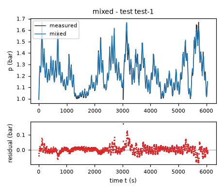
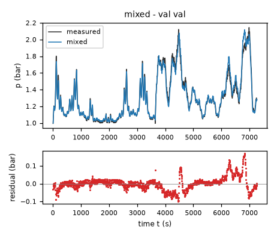
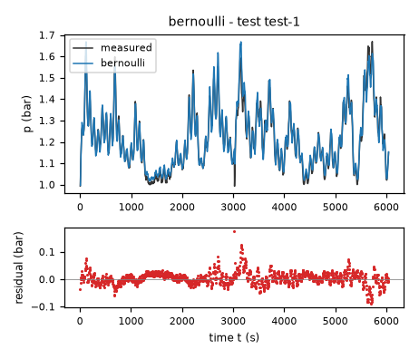
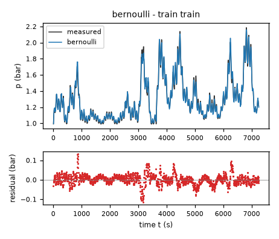
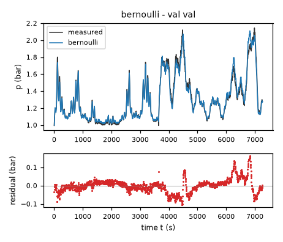
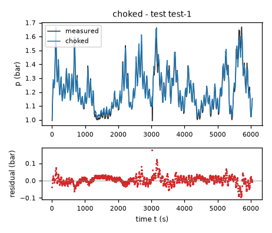
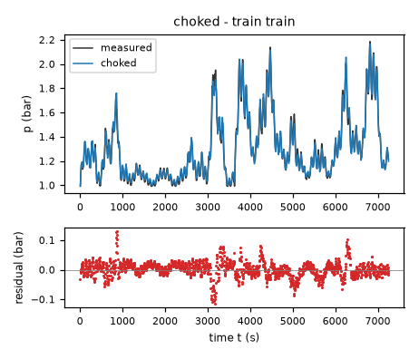
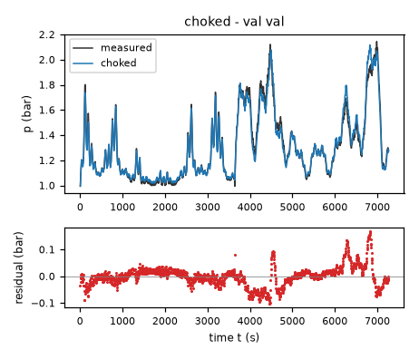

Headspace air pressure of an aerated fermentation tank – run 2 of 5
Generated: 2026-10-08 14:03 UTC
Finished by the agent after 34 turns, 810 s of execution time and 2.34 USD. 3 models delivered, 3 evaluated.
1 Models
| Model | Fitted parameters | Training error of p (bar) | Validation error (bar) | Test error of p (bar) | |
|---|---|---|---|---|---|
| mixed | 4 | 0.02617 | 0.03748 | 0.02386 | recommended by the agent lowest test error |
| bernoulli | 4 | 0.02651 | 0.03792 | 0.02489 | |
| choked | 4 | 0.02686 | 0.03829 | 0.02501 |
The models are listed in the agent's order. Errors: root mean squared error between simulated and measured p, in bar. Training data: 1 trajectory of 1452 samples (1451 scored samples). Test data, which the agent cannot access: 1 trajectory of 1210 samples (1209 scored samples). A simulation error grows with the length of the trajectory, and the training and the test trajectories differ in length, so the two errors are not directly comparable. The agent recommends a model from the training data. The model with the lowest test error is found with the test data, in hindsight, among the 3 models of this run; the agent could not make this choice.
ain = 0.001267 bar/(s*(l/min)) (fitted), weight = 0.3796 (fitted), gopen = 0.1429 sqrt(bar)/s (fitted), rvisc = 2 s (fitted), tiny = 1e-12 bar (fixed), patm = 1 bar (fixed), vfull = 100 % (fixed), back = 0.1 1/s (fixed)p: 0.02617 bar · validation error: 0.03748 bar · test error: 0.02386 barEquations as written in the model file
dp = ain*flow-(gopen*(weight*(1-(Min(Max(valve,0),vfull)/vfull)**3)+(1-weight)*(1-3*(Min(Max(valve,0),vfull)/vfull)**2+2*(Min(Max(valve,0),vfull)/vfull)**3)))*2*Max(p-patm,0)/(sqrt(4*Max(p-patm,0)+(rvisc*(gopen*(weight*(1-(Min(Max(valve,0),vfull)/vfull)**3)+(1-weight)*(1-3*(Min(Max(valve,0),vfull)/vfull)**2+2*(Min(Max(valve,0),vfull)/vfull)**3))))**2+tiny)+rvisc*(gopen*(weight*(1-(Min(Max(valve,0),vfull)/vfull)**3)+(1-weight)*(1-3*(Min(Max(valve,0),vfull)/vfull)**2+2*(Min(Max(valve,0),vfull)/vfull)**3))))-back*Min(p-patm,0)
Equations with the values substituted
Every parameter is replaced by its value with 4 significant digits.
Parameters and estimation
| Name | Value | Unit | Type | Description |
|---|---|---|---|---|
ain | 0.00126697 | bar/(s*(l/min)) | fitted | Effective inlet conversion coefficient: adds pressure from metered air. Estimated jointly with the other independent coefficients at both fitting stages described below. |
weight | 0.379626 | - | fitted | Fraction of open-valve conductance assigned to ; the complement multiplies . Both basis functions decrease with closure and vanish at the seat. Estimated jointly at both stages. |
gopen | 0.142851 | sqrt(bar)/s | fitted | Open-valve inertial conductance scale. Estimated jointly at both stages; no valve area or discharge coefficient is separately identifiable. |
rvisc | 2 | s | fitted | Series linear pneumatic resistance converting pressure-rate discharge to pressure loss. Estimated jointly at both stages subject to s; the fitted value reaches the lower bound, so only a weakly determined low-pressure resistance is claimed. |
tiny | 1e-12 | bar | fixed | Denominator safeguard, bar, chosen solely to avoid a zero denominator at the fully closed seat and atmospheric pressure; negligible over measured pressure differences. |
patm | 1 | bar | fixed | Atmospheric reference pressure, bar, supplied approximately by TASK.md and here assumed exactly; not adjusted to reduce simulation errors. |
vfull | 100 | % | fixed | Fully closed valve normalization, %, from TASK.md. Clamping restricts the conductance extension to the physical stroke. |
back | 0.1 | 1/s | fixed | Subatmospheric restoring rate, 1/s, chosen as a ten-second numerical vacuum-relaxation time, not estimated. is a valve-independent extension outside normal pressurized operation, not an identified leak or a model of real reverse valve flow. |
- Criterion minimized
Final criterion: sum of squared free-run errors on pressure
pin bar after each trajectory’s first sample, with no state correction. This matches long-horizon evaluation and avoids treating the filtered derivativedpas an independent instantaneous measurement. One-step pressure-transition squared error is only an initialization criterion.- Data
Final coefficients use all 1452 rows of data/train.csv and all 1454 rows of data/val.csv as two separate trajectories, without joining their endpoints. There are 1451 and 1453 fitted pressure transitions. Initial samples set each free-run initial condition and are not residuals. The derivative column
dpis not used for final estimation. The independent training-only comparison and first-two-thirds blocked comparison in fixed_atmosphere.py were used to assess structure generalization; only after these checks were both entire trajectories used to improve coefficient coverage. No rows were removed for outlier or transient handling and no test data were accessed.- Method
Bound-constrained nonlinear least squares using the Trust Region Reflective algorithm in scipy.optimize.least_squares (SciPy 1.18.1). Reference: SciPy official least_squares documentation, checked in this round. Nonlinearity and physical bounds make a direct linear solution inapplicable. All four independent parameters were estimated together in each of two stages. First minimize squared one-step RK4 pressure-transition errors, starting at bar/(s*(l/min)), sqrt(bar)/s, s, ; these broad positive guesses are close to preliminary mass-balance fit scales and avoid a vanishing-conductance start. That stage yielded bar/(s*(l/min)), sqrt(bar)/s, s, . Then, starting at those values, minimize squared full free-run pressure errors and obtain bar/(s*(l/min)), sqrt(bar)/s, s, . The numerical bounds were bar/(s*(l/min)), sqrt(bar)/s, s and . Positive broad gain bounds avoid unphysical signs; the resistance lower bound limits the continuous restoring slope to at most
0.51/s, avoiding an unresolved sub-sample outlet time scale in five-second RK4. The upper resistance bound allows slow, strongly viscous behavior. Both stages use two-point finite-difference Jacobians,x_scale = "jac", linear loss, and relative stopping settings , , ; maximum function evaluations were 1000 and 1500 respectively, with actual solver counts 9 and 9. Each simulation is one classical RK4 step per s with the current logged inputs held constant. Numba 0.68.0 compiles the loops; no random sampling or seeds apply. Fixed and tied parameters are not optimization variables. The function guards excursions beyond 20 bar with a finite penalty; neither final fitted training trajectory approaches that guard.- Script
fixed_atmosphere.py
The agent's explanation
Lumped isothermal ideal-gas inventory balance with a linear-plus-quadratic (Darcy–Forchheimer-type) series outlet resistance. The linear-plus-quadratic loss analogy, not a literal porous medium, motivates the resistance law; no particular publication was used for this structure.
Pressure p is absolute pressure. The term is the inlet contribution for an approximately isothermal gas inventory of fixed effective volume. Define the nonnegative overpressure bar and the valve conductance in sqrt(bar)/s, with weight its monotone-basis fraction. If u is outlet discharge expressed as a pressure rate in bar/s, the assumed loss is ; solving its positive root gives the implemented term . This combines viscous resistance in the outlet piping with a valve-dependent inertial restriction; the assignment to individual hardware is not identifiable. The safeguard tiny has no physical meaning. At the fully closed seat the implemented outlet rate is exactly zero. The final term restores numerical undershoots only; it is not reverse-flow physics.
Started with linear relaxation, square-root discharge, compressible nozzle flow, positive pressure-power laws and power/exponential valve characteristics. Initial transition fits showed that near-square-root discharge substantially improved on linear pressure relaxation. Residuals by low pressure and valve opening motivated adding a series linear resistance instead of an arbitrary derivative offset: an offset would break zero-flow equilibrium. The linear-plus-quadratic pressure-drop structure came from physical reasoning, not symbolic search. The two monotone cubic valve basis functions are a deliberately parsimonious empirical stroke map. A third positive cubic basis coefficient converged essentially to zero in the exploratory fits and was removed. All coefficients in the delivered expression were then refitted, not copied from that exploratory fit.
The effective inlet volume, valve area, discharge coefficient, temperature, bubble holdup and calibration cannot be separated from these two pressure/input trajectories. No flow-delay, thermal or actuator state is present. On an independently simulated validation trajectory, the earlier training-only fit gave RMSE 0.038665 bar; first-two-thirds fits gave fresh-initialized tail RMSE 0.023717 bar on training and 0.057941 bar on validation. Final all-data refitting gave training RMSE 0.026168 bar and validation RMSE 0.037484 bar; these last two are fitting diagnostics, not independent validation. Final one-step residual correlations with the next-minus-current inlet-flow change are -0.807 on training and -0.716 on validation, showing missing timing/dynamics that the autonomous single-state form cannot resolve. Alternative future-flow diagnostic fits reduced transition errors but were excluded because future inputs are not arguments. The fully open and sealed endpoints are extrapolated: training stroke spans approximately 10.31 to 92.41 %, validation 1.63 to 94.45 %. The subatmospheric term has no identified physical validity. Absolute pressures far outside the observed approximately 0.99 to 2.19 bar range, thermal transients, liquid-level changes and negative inlet flows are not validated. The resistance rvisc reaches its 2 s bound; its estimate is partly determined by the chosen time-resolution safeguard, not a resolved pipe measurement. R1: , so increasing flow always increases dp. R2: for , both cubic stroke basis functions are nonincreasing in closure, the pressure-drop discharge is nonnegative, and the subatmospheric term does not depend on closure; hence increasing valve cannot decrease dp, including in the implemented vacuum extension. R3: at and , all terms vanish, with bar. R4: for any not-fully-closed valve and , above patm and below it, so atmospheric equilibrium is attractive. R5: at , the conductance is exactly zero, so for the derivative is nonnegative. No unexplained outlet leak remains at the sealed seat. These are structural properties, not conclusions inferred just from observed samples.
Physical requirements
| Requirement | Statement | Outcome | Detail |
|---|---|---|---|
| R1 | Monotonicity with respect to inlet flow. At a fixed pressure and valve position, increasing the inlet air flow rate cannot decrease the pressure derivative. | assessed by the human | stated in natural language: the harness does not assess it; the human assesses it, and the agent's assertion alone does not count as verification |
| R2 | Monotonicity with respect to valve closure. At a fixed pressure and inlet flow rate, closing the outlet valve further cannot decrease the pressure derivative. | assessed by the human | stated in natural language: the harness does not assess it; the human assesses it, and the agent's assertion alone does not count as verification |
| R3 | Zero-flow equilibrium. With zero inlet flow and an open outlet valve, atmospheric pressure (approximately 1 bar) is the pressure equilibrium. | assessed by the human | stated in natural language: the harness does not assess it; the human assesses it, and the agent's assertion alone does not count as verification |
| R4 | Pressure relaxation. With zero inlet flow and an open outlet valve, pressure tends toward atmospheric pressure. | assessed by the human | stated in natural language: the harness does not assess it; the human assesses it, and the agent's assertion alone does not count as verification |
| R5 | Fully closed valve. For a perfectly sealed tank with a fully closed outlet valve, the pressure cannot decrease when air is supplied. | assessed by the human | stated in natural language: the harness does not assess it; the human assesses it, and the agent's assertion alone does not count as verification |
Plots of simulated and measured p, and errors per trajectory


| Data | Trajectory | Scored samples | RMSE | NRMSE | R² | Failure |
|---|---|---|---|---|---|---|
| training data | train | 1451 of 1451 | 0.02617 | 0.1004 | 0.9899 | none |
| validation data | val | 1453 of 1453 | 0.03748 | 0.1428 | 0.9796 | none |
| test data | test-1 | 1209 of 1209 | 0.02386 | 0.1712 | 0.9707 | none |
RMSE of p in bar; NRMSE = RMSE / σ and R² = 1 − SSE / Σ(y[k] − μ)², with μ and σ the mean and the population standard deviation of the measured output on the scored samples.
ain = 0.001291 bar/(s*(l/min)) (fitted), weight = 0.4997 (fitted), cap = 0.4062 1/s (fitted), eps = 0.08473 bar (fitted), gopen = 0.1183 sqrt(bar)/s (tied), patm = 1 bar (fixed), vfull = 100 % (fixed), back = 0.1 1/s (fixed)p: 0.02651 bar · validation error: 0.03792 bar · test error: 0.02489 barEquations as written in the model file
dp = ain*flow-(gopen*(weight*(1-(Min(Max(valve,0),vfull)/vfull)**3)+(1-weight)*(1-3*(Min(Max(valve,0),vfull)/vfull)**2+2*(Min(Max(valve,0),vfull)/vfull)**3)))*Max(p-patm,0)/(Max(p-patm,0)**2+eps**2)**0.25-back*Min(p-patm,0)
Equations with the values substituted
Every parameter is replaced by its value with 4 significant digits.
Parameters and estimation
| Name | Value | Unit | Type | Description |
|---|---|---|---|---|
ain | 0.00129147 | bar/(s*(l/min)) | fitted | Effective inlet conversion coefficient: adds pressure from metered air. Estimated jointly with the other independent coefficients at both fitting stages described below. |
weight | 0.499732 | - | fitted | Fraction of open-valve conductance assigned to ; the complement multiplies . Both basis functions decrease with closure and vanish at the seat. Estimated jointly at both stages. |
cap | 0.406245 | 1/s | fitted | Maximum small-overpressure relaxation-rate scale at the open valve. Estimated jointly with the other independent coefficients, with 1/s to make the near-atmospheric dynamics resolvable by one five-second RK4 step. |
eps | 0.0847309 | bar | fitted | Pressure scale for smoothing the ideal square-root cusp near atmosphere. Estimated jointly at both stages, with bar; this is an effective laminar/low-Reynolds-number crossover correction, not independently measured hardware. |
gopen | 0.118252 | sqrt(bar)/s | tied (cap*sqrt(eps)) | Open-valve conductance, tied to the fitted slope and crossover scale so the restoring slope is bounded without an additional penalty in the pressure-fitting criterion. |
patm | 1 | bar | fixed | Atmospheric reference pressure, bar, supplied approximately by TASK.md and here assumed exactly; not adjusted to reduce simulation errors. |
vfull | 100 | % | fixed | Fully closed valve normalization, %, from TASK.md. Clamping restricts the conductance extension to the physical stroke. |
back | 0.1 | 1/s | fixed | Subatmospheric restoring rate, 1/s, chosen as a ten-second numerical vacuum-relaxation time, not estimated. is a valve-independent extension outside normal pressurized operation, not an identified leak or a model of real reverse valve flow. |
- Criterion minimized
Final criterion: sum of squared free-run errors on pressure
pin bar after each trajectory’s first sample, with no state correction. This matches long-horizon evaluation and avoids treating the filtered derivativedpas an independent instantaneous measurement. One-step pressure-transition squared error is only an initialization criterion.- Data
Final coefficients use all 1452 rows of data/train.csv and all 1454 rows of data/val.csv as two separate trajectories, without joining their endpoints. There are 1451 and 1453 fitted pressure transitions. Initial samples set each free-run initial condition and are not residuals. The derivative column
dpis not used for final estimation. The independent training-only comparison and first-two-thirds blocked comparison in fixed_atmosphere.py were used to assess structure generalization; only after these checks were both entire trajectories used to improve coefficient coverage. No rows were removed for outlier or transient handling and no test data were accessed.- Method
Bound-constrained nonlinear least squares using the Trust Region Reflective algorithm in scipy.optimize.least_squares (SciPy 1.18.1). Reference: SciPy official least_squares documentation, checked in this round. Nonlinearity and physical bounds make a direct linear solution inapplicable. All four independent parameters were estimated together in each of two stages. First minimize squared one-step RK4 pressure-transition errors, starting at bar/(s*(l/min)), 1/s, bar, ; these broad positive guesses are close to preliminary mass-balance fit scales and avoid a vanishing-conductance start. That stage yielded bar/(s*(l/min)), 1/s, bar, . Then, starting at those values, minimize squared full free-run pressure errors and obtain bar/(s*(l/min)), 1/s, bar, . The numerical bounds were bar/(s*(l/min)), 1/s, bar and . The gain is broadly positive, the crossover stays nonsingular, the weights enforce a monotone valve map, and the rate ceiling avoids an unresolved atmospheric-pressure cusp during a five-second RK4 step. Both stages use two-point finite-difference Jacobians,
x_scale = "jac", linear loss, and relative stopping settings , , ; maximum function evaluations were 1000 and 1500 respectively, with actual solver counts 18 and 26. Each simulation is one classical RK4 step per s with the current logged inputs held constant. Numba 0.68.0 compiles the loops; no random sampling or seeds apply. Fixed and tied parameters are not optimization variables. The function guards excursions beyond 20 bar with a finite penalty; neither final fitted training trajectory approaches that guard.- Script
fixed_atmosphere.py
The agent's explanation
Lumped isothermal ideal-gas inventory balance with a regularized Bernoulli/orifice discharge law. Bernoulli discharge supplies the square-root pressure-drop asymptote; the analytic cusp smoothing and monotone cubic valve map are empirical additions, not claimed to follow exactly from Bernoulli’s equation.
Define bar and in sqrt(bar)/s. The term is the effective ideal-gas inlet contribution. The outlet contribution is nonnegative, asymptotes to at overpressures large compared with eps, and is approximately near atmosphere. This smoothly represents a low-pressure linear regime rather than an ideal orifice cusp. The tie makes the largest outlet restoring slope equal to cap at an open valve and atmosphere. weight controls the monotone valve stroke curve; it is not a physical valve area. The term is a valve-independent numerical vacuum extension outside the fitted pressure regime, not a leak.
The inlet term and square-root pressure dependence came from a fixed-volume isothermal mass balance and Bernoulli/orifice reasoning. Linear discharge gave substantially biased high-pressure simulations, and unconstrained pressure-power fits favored an exponent close to one half. The ideal square root is non-Lipschitz at atmosphere; exploratory near-zero smoothing scales produced excessive slopes for a five-second numerical step. Therefore the delivered family uses positive fitted smoothing with an explicit fitted restoring-slope bound. This regularization is a modeling choice, not a discovered physical law. The valve map was an empirical monotone cubic choice; a third positive basis coefficient was essentially zero and removed after exploratory fitting. Exponential and power-opening maps were also tried but did not give a compelling validation improvement. No genetic symbolic-regression search supplied this expression.
The effective inlet volume, valve area, discharge coefficient, temperature, bubble holdup and calibration cannot be separated from these two pressure/input trajectories. No flow-delay, thermal or actuator state is present. On an independently simulated validation trajectory, the earlier training-only fit gave RMSE 0.039234 bar; first-two-thirds fits gave fresh-initialized tail RMSE 0.025531 bar on training and 0.055572 bar on validation. Final all-data refitting gave training RMSE 0.026510 bar and validation RMSE 0.037919 bar; these last two are fitting diagnostics, not independent validation. Final one-step residual correlations with the next-minus-current inlet-flow change are -0.766 on training and -0.658 on validation, showing missing timing/dynamics that the autonomous single-state form cannot resolve. Alternative future-flow diagnostic fits reduced transition errors but were excluded because future inputs are not arguments. The fully open and sealed endpoints are extrapolated: training stroke spans approximately 10.31 to 92.41 %, validation 1.63 to 94.45 %. The subatmospheric term has no identified physical validity. Absolute pressures far outside the observed approximately 0.99 to 2.19 bar range, thermal transients, liquid-level changes and negative inlet flows are not validated. The fitted crossover scale is not small compared with typical overpressures, so the regularization materially affects the result and must not be represented as a harmless numerical epsilon. R1: , so increasing flow always increases dp. R2: for , both cubic stroke basis functions are nonincreasing in closure, the pressure-drop discharge is nonnegative, and the subatmospheric term does not depend on closure; hence increasing valve cannot decrease dp, including in the implemented vacuum extension. R3: at and , all terms vanish, with bar. R4: for any not-fully-closed valve and , above patm and below it, so atmospheric equilibrium is attractive. R5: at , the conductance is exactly zero, so for the derivative is nonnegative. No unexplained outlet leak remains at the sealed seat. These are structural properties, not conclusions inferred just from observed samples.
Physical requirements
| Requirement | Statement | Outcome | Detail |
|---|---|---|---|
| R1 | Monotonicity with respect to inlet flow. At a fixed pressure and valve position, increasing the inlet air flow rate cannot decrease the pressure derivative. | assessed by the human | stated in natural language: the harness does not assess it; the human assesses it, and the agent's assertion alone does not count as verification |
| R2 | Monotonicity with respect to valve closure. At a fixed pressure and inlet flow rate, closing the outlet valve further cannot decrease the pressure derivative. | assessed by the human | stated in natural language: the harness does not assess it; the human assesses it, and the agent's assertion alone does not count as verification |
| R3 | Zero-flow equilibrium. With zero inlet flow and an open outlet valve, atmospheric pressure (approximately 1 bar) is the pressure equilibrium. | assessed by the human | stated in natural language: the harness does not assess it; the human assesses it, and the agent's assertion alone does not count as verification |
| R4 | Pressure relaxation. With zero inlet flow and an open outlet valve, pressure tends toward atmospheric pressure. | assessed by the human | stated in natural language: the harness does not assess it; the human assesses it, and the agent's assertion alone does not count as verification |
| R5 | Fully closed valve. For a perfectly sealed tank with a fully closed outlet valve, the pressure cannot decrease when air is supplied. | assessed by the human | stated in natural language: the harness does not assess it; the human assesses it, and the agent's assertion alone does not count as verification |
Plots of simulated and measured p, and errors per trajectory



| Data | Trajectory | Scored samples | RMSE | NRMSE | R² | Failure |
|---|---|---|---|---|---|---|
| training data | train | 1451 of 1451 | 0.02651 | 0.1017 | 0.9897 | none |
| validation data | val | 1453 of 1453 | 0.03792 | 0.1444 | 0.9791 | none |
| test data | test-1 | 1209 of 1209 | 0.02489 | 0.1786 | 0.9681 | none |
RMSE of p in bar; NRMSE = RMSE / σ and R² = 1 − SSE / Σ(y[k] − μ)², with μ and σ the mean and the population standard deviation of the measured output on the scored samples.
ain = 0.001297 bar/(s*(l/min)) (fitted), weight = 0.5085 (fitted), cap = 0.3797 1/s (fitted), eps = 0.1008 bar (fitted), gamma = 1.4 (fixed), rcrit = 0.5283 (tied), gopen = 0.08524 bar/s (tied), patm = 1 bar (fixed), vfull = 100 % (fixed), back = 0.1 1/s (fixed)p: 0.02686 bar · validation error: 0.03829 bar · test error: 0.02501 barEquations as written in the model file
dp = ain*flow-(gopen*(weight*(1-(Min(Max(valve,0),vfull)/vfull)**3)+(1-weight)*(1-3*(Min(Max(valve,0),vfull)/vfull)**2+2*(Min(Max(valve,0),vfull)/vfull)**3)))*(Max(p,patm)/patm)*sqrt(Max(2*gamma/(gamma-1)*(Max(patm/Max(p,patm),rcrit)**(2/gamma)-Max(patm/Max(p,patm),rcrit)**((gamma+1)/gamma)),0))*sqrt(Max(p-patm,0)/sqrt(Max(p-patm,0)**2+eps**2))-back*Min(p-patm,0)
Equations with the values substituted
Every parameter is replaced by its value with 4 significant digits.
Parameters and estimation
| Name | Value | Unit | Type | Description |
|---|---|---|---|---|
ain | 0.0012969 | bar/(s*(l/min)) | fitted | Effective inlet conversion coefficient: adds pressure from metered air. Estimated jointly with the other independent coefficients at both fitting stages described below. |
weight | 0.50851 | - | fitted | Fraction of open-valve conductance assigned to ; the complement multiplies . Both basis functions decrease with closure and vanish at the seat. Estimated jointly at both stages. |
cap | 0.37968 | 1/s | fitted | Maximum small-overpressure relaxation-rate scale at the open valve. Estimated jointly with the other independent coefficients, with 1/s to make the near-atmospheric dynamics resolvable by one five-second RK4 step. |
eps | 0.100812 | bar | fitted | Pressure scale for smoothing the ideal square-root cusp near atmosphere. Estimated jointly at both stages, with bar; this is an effective laminar/low-Reynolds-number crossover correction, not independently measured hardware. |
gamma | 1.4 | - | fixed | Ideal-air ratio of specific heats, , assumed for room-temperature air; not fitted. NASA Glenn Research Center, Mass Flow Choking, supplies the ideal-air nozzle framework (source checked during this round). |
rcrit | 0.528282 | - | tied ((2/(gamma+1))**(gamma/(gamma-1))) | Critical downstream/upstream pressure ratio for an isentropic converging nozzle; below this ratio the ideal mass flux is choked. |
gopen | 0.0852431 | bar/s | tied (cap*sqrt(eps*patm/2)) | Open-valve scale of the dimensionless compressible mass-flux function, tied to the fitted near-atmospheric rate and crossover pressure. |
patm | 1 | bar | fixed | Atmospheric reference pressure, bar, supplied approximately by TASK.md and here assumed exactly; not adjusted to reduce simulation errors. |
vfull | 100 | % | fixed | Fully closed valve normalization, %, from TASK.md. Clamping restricts the conductance extension to the physical stroke. |
back | 0.1 | 1/s | fixed | Subatmospheric restoring rate, 1/s, chosen as a ten-second numerical vacuum-relaxation time, not estimated. is a valve-independent extension outside normal pressurized operation, not an identified leak or a model of real reverse valve flow. |
- Criterion minimized
Final criterion: sum of squared free-run errors on pressure
pin bar after each trajectory’s first sample, with no state correction. This matches long-horizon evaluation and avoids treating the filtered derivativedpas an independent instantaneous measurement. One-step pressure-transition squared error is only an initialization criterion.- Data
Final coefficients use all 1452 rows of data/train.csv and all 1454 rows of data/val.csv as two separate trajectories, without joining their endpoints. There are 1451 and 1453 fitted pressure transitions. Initial samples set each free-run initial condition and are not residuals. The derivative column
dpis not used for final estimation. The independent training-only comparison and first-two-thirds blocked comparison in fixed_atmosphere.py were used to assess structure generalization; only after these checks were both entire trajectories used to improve coefficient coverage. No rows were removed for outlier or transient handling and no test data were accessed.- Method
Bound-constrained nonlinear least squares using the Trust Region Reflective algorithm in scipy.optimize.least_squares (SciPy 1.18.1). Reference: SciPy official least_squares documentation, checked in this round. Nonlinearity and physical bounds make a direct linear solution inapplicable. All four independent parameters were estimated together in each of two stages. First minimize squared one-step RK4 pressure-transition errors, starting at bar/(s*(l/min)), 1/s, bar, ; these broad positive guesses are close to preliminary mass-balance fit scales and avoid a vanishing-conductance start. That stage yielded bar/(s*(l/min)), 1/s, bar, . Then, starting at those values, minimize squared full free-run pressure errors and obtain bar/(s*(l/min)), 1/s, bar, . The numerical bounds were bar/(s*(l/min)), 1/s, bar and . The gain is broadly positive, the crossover stays nonsingular, the weights enforce a monotone valve map, and the rate ceiling avoids an unresolved atmospheric-pressure cusp during a five-second RK4 step. Both stages use two-point finite-difference Jacobians,
x_scale = "jac", linear loss, and relative stopping settings , , ; maximum function evaluations were 1000 and 1500 respectively, with actual solver counts 18 and 32. Each simulation is one classical RK4 step per s with the current logged inputs held constant. Numba 0.68.0 compiles the loops; no random sampling or seeds apply. Fixed and tied parameters are not optimization variables. The function guards excursions beyond 20 bar with a finite penalty; neither final fitted training trajectory approaches that guard.- Script
fixed_atmosphere.py
The agent's explanation
Lumped isothermal gas-inventory balance with regularized isentropic compressible nozzle discharge, including sonic choking. Reference: NASA Glenn Research Center, Mass Flow Choking (online source checked during this round). The nozzle law describes discharge, while isothermal storage describes the tank; these are distinct assumptions.
Define bar, bar, , and bar/s. The term supplies pressure from the metered inlet. The term removes gas through an ideal isentropic restriction; gamma is the assumed ideal-air heat-capacity ratio, and rcrit prevents the pressure ratio from dropping below the sonic critical value. The factor smooths the nozzle cusp at atmosphere and tends to unity well above eps. The tie sets the limiting small-overpressure restoring slope to cap. The heat-capacity assumption and choking transition come from gas physics, whereas the smoothing and weight stroke map are empirical. restores numerical undershoots independently of valve position; it is not a real reverse-flow model.
A compressible outlet law was included because observed absolute pressure extends above twice atmospheric pressure, where an ideal-air restriction can approach choking. Its pressure-ratio powers and critical-ratio clamp came from isentropic nozzle theory, rather than an algebraic search. Simple incompressible square-root and linear families were tried first. Unregularized nozzle simulations have a cusp at atmosphere; a pressure crossover scale and a bounded near-atmospheric slope were added for stable five-second integration. The two positive monotone cubic valve basis functions are empirical, and a third basis coefficient was removed after exploratory fits made it negligible. No symbolic search was used to generate the nozzle expression.
The effective inlet volume, valve area, discharge coefficient, temperature, bubble holdup and calibration cannot be separated from these two pressure/input trajectories. No flow-delay, thermal or actuator state is present. On an independently simulated validation trajectory, the earlier training-only fit gave RMSE 0.039679 bar; first-two-thirds fits gave fresh-initialized tail RMSE 0.027055 bar on training and 0.055087 bar on validation. Final all-data refitting gave training RMSE 0.026860 bar and validation RMSE 0.038294 bar; these last two are fitting diagnostics, not independent validation. Final one-step residual correlations with the next-minus-current inlet-flow change are -0.750 on training and -0.647 on validation, showing missing timing/dynamics that the autonomous single-state form cannot resolve. Alternative future-flow diagnostic fits reduced transition errors but were excluded because future inputs are not arguments. The fully open and sealed endpoints are extrapolated: training stroke spans approximately 10.31 to 92.41 %, validation 1.63 to 94.45 %. The subatmospheric term has no identified physical validity. Absolute pressures far outside the observed approximately 0.99 to 2.19 bar range, thermal transients, liquid-level changes and negative inlet flows are not validated. The fitted crossover scale is not small compared with typical overpressures, so the regularization materially affects the result and must not be represented as a harmless numerical epsilon. R1: , so increasing flow always increases dp. R2: for , both cubic stroke basis functions are nonincreasing in closure, the pressure-drop discharge is nonnegative, and the subatmospheric term does not depend on closure; hence increasing valve cannot decrease dp, including in the implemented vacuum extension. R3: at and , all terms vanish, with bar. R4: for any not-fully-closed valve and , above patm and below it, so atmospheric equilibrium is attractive. R5: at , the conductance is exactly zero, so for the derivative is nonnegative. No unexplained outlet leak remains at the sealed seat. These are structural properties, not conclusions inferred just from observed samples.
Physical requirements
| Requirement | Statement | Outcome | Detail |
|---|---|---|---|
| R1 | Monotonicity with respect to inlet flow. At a fixed pressure and valve position, increasing the inlet air flow rate cannot decrease the pressure derivative. | assessed by the human | stated in natural language: the harness does not assess it; the human assesses it, and the agent's assertion alone does not count as verification |
| R2 | Monotonicity with respect to valve closure. At a fixed pressure and inlet flow rate, closing the outlet valve further cannot decrease the pressure derivative. | assessed by the human | stated in natural language: the harness does not assess it; the human assesses it, and the agent's assertion alone does not count as verification |
| R3 | Zero-flow equilibrium. With zero inlet flow and an open outlet valve, atmospheric pressure (approximately 1 bar) is the pressure equilibrium. | assessed by the human | stated in natural language: the harness does not assess it; the human assesses it, and the agent's assertion alone does not count as verification |
| R4 | Pressure relaxation. With zero inlet flow and an open outlet valve, pressure tends toward atmospheric pressure. | assessed by the human | stated in natural language: the harness does not assess it; the human assesses it, and the agent's assertion alone does not count as verification |
| R5 | Fully closed valve. For a perfectly sealed tank with a fully closed outlet valve, the pressure cannot decrease when air is supplied. | assessed by the human | stated in natural language: the harness does not assess it; the human assesses it, and the agent's assertion alone does not count as verification |
Plots of simulated and measured p, and errors per trajectory



| Data | Trajectory | Scored samples | RMSE | NRMSE | R² | Failure |
|---|---|---|---|---|---|---|
| training data | train | 1451 of 1451 | 0.02686 | 0.103 | 0.9894 | none |
| validation data | val | 1453 of 1453 | 0.03829 | 0.1459 | 0.9787 | none |
| test data | test-1 | 1209 of 1209 | 0.02501 | 0.1795 | 0.9678 | none |
RMSE of p in bar; NRMSE = RMSE / σ and R² = 1 − SSE / Σ(y[k] − μ)², with μ and σ the mean and the population standard deviation of the measured output on the scored samples.
2 Course of the run
The system prompt, TASK.md and FORMAT.md that the agent received are shown on the page of the experiment.
0:00Harness: opening message to the agent
10:13Read TASK.md0.01
5,474 input and 19 output tokens; 0.011 USD for this turn.
TASK.md
output as sent to the agent (5,833 characters, 46 lines)
[TASK.md: 5806 characters] # Task: Headspace air pressure of an aerated fermentation tank ## 1 System and intended use A small-scale 40-liter fermentation tank filled with approximately 25 liters of water, data recorded on the real rig. At the bottom of the tank, air is fed into the water at a flow rate controlled by a local mass-flow controller. The air collects in the headspace above the water level and leaves through an outlet valve at the top of the tank; the air pressure above the water level depends on the valve position. The valve position is the first input (`valve`), the air flow rate is the second input (`flow`), and the headspace air pressure `p` is the state and the measured output; `dp` is the sampled time derivative of `p`, a possible fitting target of dp = f(p, valve, flow). Sampling period T_s = 5 s. Each data file is one contiguous trajectory. The derivative column is a filtered numerical difference of p. Physical units: pressure in bar (10^5 Pa), valve in % closed (100% = fully closed), air flow rate in liters/min. Simulation of the pressure p. The model is integrated from the first sample of a held-out trajectory, with the recorded inputs valve and flow applied and no further corrections, and the simulated p is compared with the measured one. The model should give stable, accurate long-horizon simulation. The model is meant to be used as a physically interpretable process model, so its structure should be defensible from the physics, not only from the fit. ## 2 Data `data/train.csv` holds 1452 samples of training data: one trajectory of consecutive samples. `data/val.csv` holds 1454 samples of validation data: one trajectory of consecutive samples. Whether and how you use the validation data is your decision. Row k+1 of a trajectory is the sample that follows row k; different trajectories are separate experiments. The sampling period is T_s = 5 s. | Column | Role | Unit | Training range | Description | |---|---|---|---|---| | `p` | state, scored output | bar | not declared | headspace air pressure, simulated state and measured output | | `valve` | input | % closed | 0 to 100 | outlet valve position, first exogenous input | | `flow` | input | l/min | not declared | air flow rate controlled by the mass-flow controller, second exogenous input | | `dp` | sampled time derivative of `p` | bar/s | not declared | sampled time derivative of p (a filtered numerical difference); a possible fitting target, never simulated | ## 3 What you deliver A candidate is a continuous-time model of one closed-form expression, `dp`: the time derivative of the state `p` as a function of `p`, `valve` and `flow`. The column `dp` is a possible fitting target for the derivative of `p`; it is not an argument of the expressions. `FORMAT.md` states how an expression is written and what it may contain. Write one file per candidate, `models/<label>.json`; `FORMAT.md` describes the file and gives an example. Write also `models/pool.json`, which lists the labels of your candidates in the order in which they are to be evaluated. You can recommend one candidate that you consider the best-performing. `models/pool.json` then names that candidate and gives your reason. Run `python check_submission.py` to check your files: it prints every error with its location, so that you can correct it. At most 10 candidates are evaluated, in the order of `models/pool.json`. Consider various identification approaches, for example physically motivated structures, symbolic-regression search or sparse regression; before fitting, list the approaches and the model families you will try. Build the pool from structurally different model families, not from variations of one form. Examine the residuals of your best candidates and try structures that can represent what they show. Include only candidates you would defend as a model of the system. ## 4 Evaluation The harness, the software that runs this task, evaluates every candidate on test data that you cannot access. For each test trajectory it starts from the first logged state and integrates the expressions with the classical fourth-order Runge–Kutta method, one step per sampling period, with the logged inputs held constant between samples; a simulated state is never replaced by a later measurement. The score is the root mean squared error (RMSE) between simulated and logged `p`, in bar, over all test samples after the first of each trajectory. An evaluation fails when a value is not finite, when `p` leaves [-100, 100] bar, or when it takes longer than 60 s. ## 5 Physical requirements Requirements stated in words. A human assesses them; address each one in the discussion of every candidate to which it applies. - **R1**: Monotonicity with respect to inlet flow. At a fixed pressure and valve position, increasing the inlet air flow rate cannot decrease the pressure derivative. - **R2**: Monotonicity with respect to valve closure. At a fixed pressure and inlet flow rate, closing the outlet valve further cannot decrease the pressure derivative. - **R3**: Zero-flow equilibrium. With zero inlet flow and an open outlet valve, atmospheric pressure (approximately 1 bar) is the pressure equilibrium. - **R4**: Pressure relaxation. With zero inlet flow and an open outlet valve, pressure tends toward atmospheric pressure. - **R5**: Fully closed valve. For a perfectly sealed tank with a fully closed outlet valve, the pressure cannot decrease when air is supplied. ## 6 Limits and completion One round: 60 turns, 3600 s of execution time, 10 USD; a turn is one response of yours. When the files pass the check, send the exact message DONE. If the harness's check of the files then fails, you receive its report and may correct the files once. If a limit ends the round earlier, the complete candidate files are evaluated.
20:20Read FORMAT.md0.02
6,778 input and 19 output tokens; 0.014 USD for this turn.
FORMAT.md
output as sent to the agent (8,159 characters, 128 lines)
[FORMAT.md: 8130 characters]
# Model file format
This file is the same for every task. `TASK.md` names the expression keys, the variables and the permitted functions of your task.
## Candidate file `models/<label>.json`
Write one JSON file per candidate. The label is the file name: a letter, then up to 31 letters, digits, `_` or `-`. The file has these fields and no others:
- `expressions`: one expression text per expression key named in `TASK.md`.
- `parameters`: one row per parameter. A parameter is a constant of the expressions that you name yourself, for example `a1`. Its row has
- `name`: the name used in the expressions: a letter, then letters, digits or `_`; it differs from every column, expression key, constant and function name;
- `value`: the numerical value;
- `unit`: the unit; `-` for a dimensionless quantity;
- `type`: `fitted` (estimated from data), `fixed` (chosen or known, not estimated) or `tied` (computed from other parameters by `equation`);
- `description`: what the parameter represents; for a fixed value, where the value comes from and why it was chosen; for a value taken over from another candidate or an earlier fit, from which one;
- `equation`: for a tied parameter only: its defining equation over other parameters, given constants and numbers.
- `estimation`: how the values of the fitted parameters of this candidate were obtained and why in this way; for every fitted parameter it must be clear how its value was found. Write the record for this candidate model, not for the run as a whole: its own criterion, data, method and starting values, with the reasons that apply to this candidate. The record has
- `criterion`: what was minimized, on which variable, and why this criterion;
- `data`: the files, trajectories or rows used, and the reason when some were left out;
- `method`: how the values were estimated: the estimation method by its established name and the software function, and why this method and not another; the starting values as numbers, or the statement that the method needs none, and why these starting values; whether all fitted parameters were estimated together in one step and, if not, which parameters were estimated in which step, with which criterion, and why; the seeds where they apply;
- `script`: the file in the working directory that reproduces the values.
- `discussion`: four texts, in this order:
- `family`: the model family by its established name, with a reference where you know one;
- `interpretation`: what each term represents in the system; describe a term without a known physical meaning by its mathematical effect;
- `origin`: how you arrived at the structure of this expression, as distinct from its parameter values, which `estimation` covers: say which of its terms, variables and operators came from physical reasoning, which from a search and which from a guess, what you tried before, and what made you change it;
- `limitations`: what the data do not determine and where the model is not expected to hold.
- `answers`: only when `TASK.md` asks questions about the candidates: one text per question identifier.
- `predecessor`: only in a later round of an interactive session, and optional: the label of the candidate of the previous pool that this candidate revises.
## Expressions
An expression is a text in Python syntax. It may contain:
- the variables that `TASK.md` names as the arguments of the expression;
- your parameters, each with a row in `parameters`;
- the constants `pi` and `E`, the given constants that `TASK.md` lists, and numbers;
- these operators and functions, unless `TASK.md` states another list: `+` `-` `*` `/` `**` `sin` `cos` `tan` `asin` `acos` `atan` `atan2` `sinh` `cosh` `tanh` `exp` `log` `sqrt` `Abs` `sign` `Min` `Max` `Piecewise`.
`**` is the power (not `^`), and `log` is the natural logarithm. `Piecewise` takes pairs `(value, condition)` and ends with a pair `(value, True)`, for example `Piecewise((a1*q, (q > 0) & (q < 1)), (0, True))`. A condition is a comparison `<`, `<=`, `>`, `>=`, `Eq(a, b)` or `Ne(a, b)`, each in parentheses, combined with `&`, `|` and `~`.
A number that fixes the form of the expression, such as 2 in `q**2`, may be written directly. A value obtained by estimation is a parameter with a row in `parameters`, never a number written into the expression. Every parameter row must be used in an expression or in a tie equation.
## Pool file `models/pool.json`
- `order`: the candidate labels in your order;
- `recommended`: the label of the candidate you recommend, or `null` when you recommend none;
- `reason`: why you recommend this candidate, or why you recommend none.
Every file `models/<label>.json` must be listed in `order`.
## Example
An invented task with one input `q` and one output `z`, whose expression key is `z`. The example shows the format only: its model is not a proposal, and its discussion texts say what your texts must contain.
`models/M01.json`:
```json
{
"expressions": {
"z": "a1*q + b1*q**2/n0"
},
"parameters": [
{
"name": "a1",
"value": 0.5,
"unit": "-",
"type": "fitted",
"description": "coefficient of `q`"
},
{
"name": "n0",
"value": 2.0,
"unit": "-",
"type": "fixed",
"description": "normalisation of the quadratic term; chosen as the largest value of `q` in the training data, so that `b1` has the scale of `a1`"
},
{
"name": "b1",
"value": 1.0,
"unit": "-",
"type": "tied",
"equation": "2*a1",
"description": "coefficient of `q**2/n0`, tied to `a1` by the assumption stated in the discussion"
}
],
"estimation": {
"criterion": "sum of squared differences between the expression `z` and the column `z`, because the expression gives `z` directly and no row is known to be more accurate than another",
"data": "data/train.csv, all rows",
"method": "The value of `a1` was estimated by ordinary least squares with numpy.linalg.lstsq. With `b1 = 2*a1` the expression is linear in the one fitted parameter `a1`, so the least-squares solution is obtained directly and an iterative method is not needed; for the same reason the method needs no starting values. `a1` is the only fitted parameter and was estimated in one step. The method uses no random numbers, so that no seed applies.",
"script": "fit_M01.py"
},
"discussion": {
"family": "State the model family by its established name.",
"interpretation": "State what each term represents.",
"origin": "State how you arrived at this expression.",
"limitations": "State what the data do not determine and where the model is not expected to hold."
}
}
```
`models/pool.json`:
```json
{
"order": [
"M01"
],
"recommended": "M01",
"reason": "State why you recommend this candidate, or why you recommend none."
}
```
## Checking
`python check_submission.py` checks every file against these rules and evaluates each expression on the training data. It names each error with its rule. Correct the errors and run it again.
## Writing
- Define every symbol at first use.
- Give every number with its unit and the data it was computed on.
- Name methods by their established names.
- Cite a reference for a model family or a method where one applies. Cite only references you are certain exist, and say when you cite from memory without having checked the source.
- Say what is estimated, what is assumed and what is unknown.
- Give a brief reason for every choice you made: a structure, a criterion, a method, a starting value, a fixed value, a term you removed.
- Write every expression inside a text between backticks, in the syntax of the expressions, for example `a1*q**2`; write it out, do not describe it in words. This holds also for a single parameter, column or expression name, such as `a1`, for a value given to one, such as `a1 = 0.5`, and for a range, such as `0 <= a1 <= 2`. A unit follows outside the backticks; a dimensionless value has no unit and no hyphen after it.
- Describe a term without a known physical meaning by its mathematical effect; do not invent a meaning.
30:27Listed the files0.04
8,830 input and 14 output tokens; 0.018 USD for this turn.
{}output as sent to the agent (189 characters, 9 lines)
[.: 8 entries] data/ models/ FORMAT.md 8130 bytes TASK.md 5808 bytes check_config.json 984 bytes check_submission.py 102476 bytes data/train.csv 105530 bytes data/val.csv 105665 bytes
40:44Wrote plan.md0.07
8,916 input and 451 output tokens (of which 43 reasoning); 0.022 USD for this turn.
reasoning summary (written by the model provider's summarizer; the model's own reasoning is not available)
Planning budget and investigation
I need to create a solid plan before fitting the file. I have a budget of around 27,000 remaining tokens, but the initial was about 30,000, so I’m figuring out that discrepancy. I want to consider around 55 turns. It's important to conduct a numerical investigation, especially for the physical interpretation of pressure and likely gauge measurements. I need to ensure everything is inspected properly before moving forward.
I’ll compare ideal-gas mass-balance models with linear, orifice-type, and compressible outlet laws, using monotone valve-conductance curves. I’ll also try a sparse polynomial model as a diagnostic, retaining it only if its structure is physically defensible. I’ll fit against sampled pressure transitions, assess long-horizon simulation on validation, and inspect residuals before choosing the pool.
plan.md
file content written (1,636 characters)
# Identification plan, before fitting Compare these families: (1) ideal-gas inventory balance with linear pressure relaxation and monotone valve conductance (laminar approximation); (2) ideal-gas inventory balance with signed square-root pressure-drop discharge (orifice approximation), testing power-law and equal-percentage valve conductance; (3) compressible, subcritical/choked nozzle discharge with monotone valve conductance; (4) sparse polynomial pressure/input regression as a diagnostic, retaining only physically defensible structures; (5) if residuals indicate a need, a mixed viscous/inertial resistance discharge law or a positive pressure-dependent storage coefficient. These are planned alternatives, not a statement that all will be delivered. Inspect both observed trajectories, units and input excitation first. Use train.csv for parameter estimation and val.csv for independent structure selection; prefer pressure-transition or long-horizon simulation criteria over the filtered derivative alone, since evaluation integrates pressure without measurement corrections. Initially fit transitions, then optimize full free-run training pressure where numerically feasible. Simulate with exactly one classical RK4 step per 5 s and zero-order-held inputs. Examine derivative/transition and free-run residuals by pressure, valve, flow and input changes. Positive coefficients, monotone closure response and atmospheric equilibrium will be built into candidate structures. Keep structurally distinct, defensible candidates, and record actual starts, bounds, methods, metrics and limitations. No test data will be accessed.
output as sent to the agent (33 characters, 1 lines)
Wrote 1636 characters to plan.md.
50:53Wrote inspect_data.py0.09
9,388 input and 271 output tokens; 0.021 USD for this turn.
inspect_data.py
file content written (719 characters)
import pandas as pd, numpy as np
for name in ['train','val']:
d=pd.read_csv('data/'+name+'.csv'); print('\n',name,d.shape); print(d.describe().to_string()); print('head\n',d.head(15).to_string());print('tail\n',d.tail().to_string())
for c in ['valve','flow']:
print(c,'unique',d[c].nunique(),'levels',np.unique(np.round(d[c],3))[:150]);print('changes',np.sum(np.abs(np.diff(d[c]))>.1))
print('corr\n',d.corr().to_string());print('pressure delta RMSE dp',np.sqrt(np.mean((np.diff(d.p)/5-d.dp[:-1])**2)))
# output means by valve rounded levels
d['vbin']=pd.cut(d.valve,[-1,10,20,30,40,50,60,70,80,90,100.01]); print(d.groupby('vbin',observed=True)[['p','flow','dp']].agg(['mean','min','max','count']).to_string())
output as sent to the agent (40 characters, 1 lines)
Wrote 719 characters to inspect_data.py.
60:59Ran python inspect_data.py0.11
9,680 input and 21 output tokens; 0.020 USD for this turn.
$ python inspect_data.py
output as sent to the agent (11,081 characters, 170 lines)
[exit status 0]
train (1452, 4)
p valve flow dp
count 1452.000000 1452.000000 1452.000000 1452.000000
mean 1.298163 64.577523 17.903418 0.000036
std 0.260879 18.177046 6.833631 0.006076
min 0.992309 10.307583 0.097345 -0.020900
25% 1.093695 57.980696 12.932027 -0.003375
50% 1.229201 69.451447 18.331697 -0.000049
75% 1.427059 76.736809 23.742245 0.003296
max 2.186718 92.411713 30.796778 0.023952
head
p valve flow dp
0 0.992431 56.277222 0.103498 0.007056
1 1.027712 52.160172 18.899395 0.010865
2 1.082036 48.689106 21.223804 0.005884
3 1.111457 54.997639 23.015125 0.005713
4 1.140023 60.950226 24.108770 0.006128
5 1.170665 57.034481 24.341257 0.001563
6 1.178478 53.030518 23.665775 -0.001660
7 1.170176 58.783981 22.377659 -0.000195
8 1.169200 64.851952 20.676872 0.000781
9 1.173106 61.040573 18.942465 -0.003369
10 1.156260 56.419758 17.527559 -0.003906
11 1.136727 61.498772 16.658049 -0.000855
12 1.132454 67.576591 16.641787 0.002686
13 1.145883 63.830742 17.456802 0.001709
14 1.154428 58.575748 19.051676 0.001245
tail
p valve flow dp
1447 1.279558 64.754059 21.874235 -0.003565
1448 1.261735 63.197739 20.056547 -0.006543
1449 1.229018 62.830765 17.489325 -0.003247
1450 1.212782 63.781055 18.931917 0.000244
1451 1.214002 65.977844 21.184252 -0.000513
valve unique 1452 levels [10.308 10.726 11.252 11.609 11.872 12.442 12.715 13.334 13.366 15.03
15.115 15.697 16.083 16.396 16.895 17.044 17.314 17.48 18.136 18.217
18.284 18.312 18.445 18.515 18.817 18.898 18.953 19.178 19.781 20.085
20.146 20.272 20.443 20.451 20.462 20.581 20.607 20.634 20.697 20.958
21.083 21.163 21.185 21.413 21.449 21.454 21.581 21.708 21.717 21.788
21.822 22.064 22.208 22.487 22.499 22.531 22.552 22.643 22.805 23.018
23.066 23.121 23.193 23.207 23.412 23.451 23.808 23.869 24.042 24.07
24.091 24.209 24.251 24.263 24.288 24.326 24.357 24.492 24.652 24.715
24.786 24.814 24.836 25.152 25.713 25.721 25.75 25.832 25.958 25.966
26.088 26.199 26.223 26.31 26.365 26.481 26.482 26.513 26.621 26.896
26.899 26.97 26.984 27.02 27.077 27.205 27.329 27.361 27.439 27.481
27.524 27.529 27.624 27.701 27.803 28.03 28.061 28.266 28.375 28.439
28.475 28.813 28.822 29.025 29.099 29.12 29.291 29.49 29.498 29.551
29.553 29.567 29.809 29.844 29.887 29.921 29.926 30.023 30.101 30.152
30.465 30.627 30.848 30.903 30.925 30.955 31.319 31.354 31.406 31.419]
changes 1427
flow unique 1444 levels [0.097 0.103 0.252 0.26 0.27 0.301 0.317 0.332 0.377 0.394 0.421 0.439
0.472 0.475 0.605 0.704 0.734 0.912 1.058 1.271 1.541 1.665 1.674 1.746
1.804 1.892 2.099 2.127 2.288 2.428 2.563 2.664 2.685 2.762 3.051 3.321
3.322 3.326 3.338 3.393 3.411 3.424 3.449 3.462 3.573 3.678 3.976 3.995
4.181 4.286 4.301 4.399 4.424 4.451 4.555 4.647 4.782 4.861 4.922 4.955
5.023 5.04 5.05 5.092 5.218 5.236 5.25 5.273 5.36 5.39 5.472 5.486
5.541 5.639 5.665 5.685 5.695 5.737 5.742 5.802 5.844 5.849 5.895 5.909
5.93 6.011 6.148 6.244 6.327 6.334 6.336 6.443 6.462 6.488 6.638 6.681
6.797 6.86 6.91 7.055 7.075 7.127 7.213 7.23 7.258 7.267 7.284 7.294
7.296 7.334 7.335 7.361 7.366 7.384 7.475 7.489 7.491 7.579 7.61 7.619
7.675 7.83 7.842 7.874 7.884 7.911 7.926 7.952 8.033 8.041 8.29 8.336
8.358 8.361 8.39 8.405 8.424 8.453 8.463 8.491 8.537 8.55 8.551 8.714
8.731 8.754 8.799 8.828 8.955 8.977]
changes 1405
corr
p valve flow dp
p 1.000000 0.576059 0.642001 -0.063003
valve 0.576059 1.000000 0.216787 0.207214
flow 0.642001 0.216787 1.000000 0.092273
dp -0.063003 0.207214 0.092273 1.000000
pressure delta RMSE dp 0.0002211321408499036
p flow dp
mean min max count mean min max count mean min max count
vbin
(10.0, 20.0] 1.079025 0.992553 1.140512 30 18.836506 0.251822 27.930269 30 0.000067 -0.003296 0.003443 30
(20.0, 30.0] 1.053059 0.992431 1.159800 109 14.344501 0.259513 27.449478 109 -0.000255 -0.004492 0.004102 109
(30.0, 40.0] 1.060292 0.992431 1.176402 58 14.891304 0.316865 28.441385 58 0.000155 -0.004273 0.004175 58
(40.0, 50.0] 1.063157 0.995483 1.180919 54 14.095294 1.746274 27.864128 54 0.000213 -0.004297 0.005884 54
(50.0, 60.0] 1.134393 0.992309 1.459134 163 15.944683 0.103498 28.774731 163 -0.001310 -0.011964 0.010865 163
(60.0, 70.0] 1.260658 0.996338 1.890924 334 18.837474 0.377294 30.349606 334 -0.002441 -0.018678 0.009693 334
(70.0, 80.0] 1.380171 0.993164 2.151071 456 18.532875 0.097345 29.548655 456 -0.001217 -0.020900 0.013062 456
(80.0, 90.0] 1.543147 1.052738 2.186718 236 19.854186 7.475334 30.796778 236 0.006301 -0.012452 0.019215 236
(90.0, 100.01] 1.613675 1.211683 1.965269 12 17.916352 7.335140 25.451162 12 0.012853 0.003540 0.023952 12
val (1454, 4)
p valve flow dp
count 1454.000000 1454.000000 1454.000000 1454.000000
mean 1.306319 63.036614 18.115842 0.000049
std 0.262661 20.452928 5.683909 0.005129
min 0.994018 1.628053 0.083062 -0.019630
25% 1.099005 50.743231 14.566727 -0.002539
50% 1.241104 69.200447 19.234609 0.000000
75% 1.441433 78.820923 22.523403 0.002393
max 2.144479 94.448708 29.071159 0.023708
head
p valve flow dp
0 0.994140 58.444061 0.204358 0.007276
1 1.030519 65.435143 18.151621 0.009888
2 1.079961 70.790749 15.957956 0.005493
3 1.107428 74.028763 14.378026 0.006861
4 1.141732 74.976189 16.945688 0.008863
5 1.186046 73.793022 19.338436 0.003662
6 1.204358 70.946602 17.657644 -0.001563
7 1.196545 67.140427 15.926753 -0.000610
8 1.193493 63.207790 18.366966 0.001172
9 1.199353 59.986385 20.784765 -0.002759
10 1.185558 58.192310 19.118258 -0.003955
11 1.165782 58.312363 17.175755 -0.000757
12 1.161997 60.530666 19.287018 0.002588
13 1.174937 64.700485 21.743490 0.002295
14 1.186413 70.365509 20.102472 0.002051
tail
p valve flow dp
1449 1.299457 75.457664 17.650394 0.000195
1450 1.300433 70.614197 17.311335 -0.004273
1451 1.279070 73.429550 17.181469 -0.001904
1452 1.269548 77.994141 17.306061 0.001636
1453 1.277727 74.913918 17.701374 0.001245
valve unique 1454 levels [ 1.628 2.596 3.032 3.611 4.373 5.222 5.758 5.847 6.562 6.621
6.633 6.966 7.243 7.277 8.222 8.476 8.636 9.107 9.516 9.698
10.139 10.921 10.975 11.043 11.443 11.679 11.754 11.792 12.835 13.439
13.775 13.807 14.154 14.313 14.479 14.599 14.639 14.846 15.493 15.734
15.877 15.883 16.265 16.318 16.52 17.171 17.302 17.313 17.449 17.516
17.63 17.631 17.748 18.126 18.234 18.316 18.436 18.66 18.694 18.732
18.905 19.132 19.277 19.369 19.388 20.114 20.164 20.264 20.268 20.291
20.343 20.598 20.745 20.917 21.136 21.323 21.588 21.764 21.768 21.894
22.027 22.036 22.053 22.562 22.577 22.682 22.718 22.858 22.88 22.933
22.981 23.023 23.212 23.292 23.562 23.587 23.854 23.999 24.008 24.03
24.091 24.313 24.528 24.654 24.685 24.758 24.782 24.795 24.973 25.016
25.215 25.53 25.604 25.686 26.212 26.536 26.565 26.623 26.718 26.967
26.986 27.132 27.197 27.283 27.503 27.731 27.873 28.251 28.644 28.878
29.003 29.026 29.036 29.059 29.139 29.27 29.524 29.539 29.703 30.075
30.193 30.199 30.258 30.341 30.36 30.452 30.464 30.524 30.535 30.626]
changes 1432
flow unique 1446 levels [0.083 0.204 1.929 2.006 2.375 2.546 2.593 2.68 3.019 3.107 3.248 3.678
3.989 4.008 4.325 4.477 4.692 4.737 4.884 4.917 4.942 4.959 4.961 4.969
4.987 5.058 5.179 5.306 5.316 5.345 5.346 5.401 5.464 5.505 5.548 5.593
5.672 5.675 5.687 5.758 5.765 5.867 5.974 6.003 6.06 6.158 6.182 6.188
6.195 6.232 6.262 6.306 6.325 6.331 6.409 6.413 6.453 6.518 6.552 6.581
6.622 6.64 6.659 6.663 6.71 6.713 6.726 6.775 6.815 6.874 7.048 7.075
7.095 7.102 7.21 7.264 7.287 7.32 7.329 7.338 7.34 7.342 7.345 7.373
7.445 7.451 7.53 7.543 7.614 7.632 7.648 7.701 7.72 7.748 7.773 7.863
7.866 7.935 8.047 8.098 8.168 8.25 8.275 8.296 8.35 8.394 8.418 8.477
8.483 8.508 8.517 8.581 8.62 8.647 8.661 8.688 8.694 8.709 8.78 8.833
8.835 8.845 8.874 8.886 8.902 8.92 8.925 8.961 8.974 8.994 9.018 9.061
9.067 9.077 9.105 9.11 9.115 9.118 9.124 9.152 9.201 9.228 9.243 9.261
9.262 9.263 9.269 9.274 9.325 9.354]
changes 1369
corr
p valve flow dp
p 1.000000 0.638022 0.502442 -0.055603
valve 0.638022 1.000000 0.160550 0.202043
flow 0.502442 0.160550 1.000000 0.084172
dp -0.055603 0.202043 0.084172 1.000000
pressure delta RMSE dp 0.0003356334527234
p flow dp
mean min max count mean min max count mean min max count
vbin
(-1.0, 10.0] 1.040267 1.000244 1.090704 20 13.491804 5.345834 22.403151 20 -0.000343 -0.002490 0.002344 20
(10.0, 20.0] 1.059837 0.999390 1.134774 45 15.799783 4.692327 25.023989 45 -0.000170 -0.003491 0.002173 45
(20.0, 30.0] 1.065873 1.000854 1.139535 75 16.308122 4.737154 24.464090 75 -0.000596 -0.004468 0.002759 75
(30.0, 40.0] 1.082146 1.001709 1.230239 105 16.850758 4.476762 26.491192 105 -0.000345 -0.008594 0.003662 105
(40.0, 50.0] 1.115967 1.014527 1.375145 111 18.437979 6.305878 27.760410 111 -0.000950 -0.014723 0.004151 111
(50.0, 60.0] 1.171545 0.994140 1.516999 120 17.836470 0.204358 28.988537 120 -0.002371 -0.017872 0.007276 120
(60.0, 70.0] 1.214031 1.009400 1.705243 272 18.232991 4.917121 28.379637 272 -0.001201 -0.019630 0.010328 272
(70.0, 80.0] 1.390208 0.994018 2.112373 399 18.298675 0.083062 29.071159 399 -0.000994 -0.014552 0.016554 399
(80.0, 90.0] 1.591345 1.024660 2.144479 302 19.311220 1.928877 28.626844 302 0.003966 -0.011011 0.017823 302
(90.0, 100.01] 1.474223 1.156504 1.717085 5 17.528701 7.338216 22.048269 5 0.016378 0.004102 0.023708 5
71:13Started a helper agent (Independently inspect data/train.csv and data/val.csv for timing issu…)0.14
15,537 input and 249 output tokens (of which 115 reasoning); 0.034 USD for this turn.
reasoning summary (written by the model provider's summarizer; the model's own reasoning is not available)
Evaluating computational efficiency
I'm thinking about the data and how the forward difference might not fit well with the timing, especially since the first row is showing a weird result with flow. It seems I should exclude it. I need to run some assessments to find out what fits best using a computationally efficient approach like SciPy's least_squares in Python, but the loops could be costly. Maybe I could use Numba for speed. I'll also consider diagnostics that save work but might cost tokens. It feels a bit complex!
{
"task": "Independently inspect data/train.csv and data/val.csv for timing issues and physical outlet/valve relationships. You may fit exploratory regressions and examine residuals, but do not write models/*.json. Work in helper_*.py/md files. Identify plausible pressure dependence, valve characteristic and whether dp is forward difference. Check predictive transitions using current vs next/averaged inputs as diagnostics only (delivered models must current input). Optionally constrained polynomial diagnostic. Return concise findings with actual metrics/method. Do not access anything outside working directory.",
"max_turns": 7
}output as sent to the agent (119 characters, 2 lines)
Helper helper-1 stopped because the turn limit of the helper-1 was reached (7 turns, 0.2125 USD). Its last text: (none)
1:13Harness: helper agent helper-1 started
fermenter-pressure
1:16Helper agent helper-1: read TASK.md, FORMAT.md; listed the files of data0.15
5,039 input and 64 output tokens; 0.011 USD for this turn.
TASK.md
output as sent to the agent (5,833 characters, 46 lines)
[TASK.md: 5806 characters] # Task: Headspace air pressure of an aerated fermentation tank ## 1 System and intended use A small-scale 40-liter fermentation tank filled with approximately 25 liters of water, data recorded on the real rig. At the bottom of the tank, air is fed into the water at a flow rate controlled by a local mass-flow controller. The air collects in the headspace above the water level and leaves through an outlet valve at the top of the tank; the air pressure above the water level depends on the valve position. The valve position is the first input (`valve`), the air flow rate is the second input (`flow`), and the headspace air pressure `p` is the state and the measured output; `dp` is the sampled time derivative of `p`, a possible fitting target of dp = f(p, valve, flow). Sampling period T_s = 5 s. Each data file is one contiguous trajectory. The derivative column is a filtered numerical difference of p. Physical units: pressure in bar (10^5 Pa), valve in % closed (100% = fully closed), air flow rate in liters/min. Simulation of the pressure p. The model is integrated from the first sample of a held-out trajectory, with the recorded inputs valve and flow applied and no further corrections, and the simulated p is compared with the measured one. The model should give stable, accurate long-horizon simulation. The model is meant to be used as a physically interpretable process model, so its structure should be defensible from the physics, not only from the fit. ## 2 Data `data/train.csv` holds 1452 samples of training data: one trajectory of consecutive samples. `data/val.csv` holds 1454 samples of validation data: one trajectory of consecutive samples. Whether and how you use the validation data is your decision. Row k+1 of a trajectory is the sample that follows row k; different trajectories are separate experiments. The sampling period is T_s = 5 s. | Column | Role | Unit | Training range | Description | |---|---|---|---|---| | `p` | state, scored output | bar | not declared | headspace air pressure, simulated state and measured output | | `valve` | input | % closed | 0 to 100 | outlet valve position, first exogenous input | | `flow` | input | l/min | not declared | air flow rate controlled by the mass-flow controller, second exogenous input | | `dp` | sampled time derivative of `p` | bar/s | not declared | sampled time derivative of p (a filtered numerical difference); a possible fitting target, never simulated | ## 3 What you deliver A candidate is a continuous-time model of one closed-form expression, `dp`: the time derivative of the state `p` as a function of `p`, `valve` and `flow`. The column `dp` is a possible fitting target for the derivative of `p`; it is not an argument of the expressions. `FORMAT.md` states how an expression is written and what it may contain. Write one file per candidate, `models/<label>.json`; `FORMAT.md` describes the file and gives an example. Write also `models/pool.json`, which lists the labels of your candidates in the order in which they are to be evaluated. You can recommend one candidate that you consider the best-performing. `models/pool.json` then names that candidate and gives your reason. Run `python check_submission.py` to check your files: it prints every error with its location, so that you can correct it. At most 10 candidates are evaluated, in the order of `models/pool.json`. Consider various identification approaches, for example physically motivated structures, symbolic-regression search or sparse regression; before fitting, list the approaches and the model families you will try. Build the pool from structurally different model families, not from variations of one form. Examine the residuals of your best candidates and try structures that can represent what they show. Include only candidates you would defend as a model of the system. ## 4 Evaluation The harness, the software that runs this task, evaluates every candidate on test data that you cannot access. For each test trajectory it starts from the first logged state and integrates the expressions with the classical fourth-order Runge–Kutta method, one step per sampling period, with the logged inputs held constant between samples; a simulated state is never replaced by a later measurement. The score is the root mean squared error (RMSE) between simulated and logged `p`, in bar, over all test samples after the first of each trajectory. An evaluation fails when a value is not finite, when `p` leaves [-100, 100] bar, or when it takes longer than 60 s. ## 5 Physical requirements Requirements stated in words. A human assesses them; address each one in the discussion of every candidate to which it applies. - **R1**: Monotonicity with respect to inlet flow. At a fixed pressure and valve position, increasing the inlet air flow rate cannot decrease the pressure derivative. - **R2**: Monotonicity with respect to valve closure. At a fixed pressure and inlet flow rate, closing the outlet valve further cannot decrease the pressure derivative. - **R3**: Zero-flow equilibrium. With zero inlet flow and an open outlet valve, atmospheric pressure (approximately 1 bar) is the pressure equilibrium. - **R4**: Pressure relaxation. With zero inlet flow and an open outlet valve, pressure tends toward atmospheric pressure. - **R5**: Fully closed valve. For a perfectly sealed tank with a fully closed outlet valve, the pressure cannot decrease when air is supplied. ## 6 Limits and completion One round: 60 turns, 3600 s of execution time, 10 USD; a turn is one response of yours. When the files pass the check, send the exact message DONE. If the harness's check of the files then fails, you receive its report and may correct the files once. If a limit ends the round earlier, the complete candidate files are evaluated.
FORMAT.md
output as sent to the agent (8,159 characters, 128 lines)
[FORMAT.md: 8130 characters]
# Model file format
This file is the same for every task. `TASK.md` names the expression keys, the variables and the permitted functions of your task.
## Candidate file `models/<label>.json`
Write one JSON file per candidate. The label is the file name: a letter, then up to 31 letters, digits, `_` or `-`. The file has these fields and no others:
- `expressions`: one expression text per expression key named in `TASK.md`.
- `parameters`: one row per parameter. A parameter is a constant of the expressions that you name yourself, for example `a1`. Its row has
- `name`: the name used in the expressions: a letter, then letters, digits or `_`; it differs from every column, expression key, constant and function name;
- `value`: the numerical value;
- `unit`: the unit; `-` for a dimensionless quantity;
- `type`: `fitted` (estimated from data), `fixed` (chosen or known, not estimated) or `tied` (computed from other parameters by `equation`);
- `description`: what the parameter represents; for a fixed value, where the value comes from and why it was chosen; for a value taken over from another candidate or an earlier fit, from which one;
- `equation`: for a tied parameter only: its defining equation over other parameters, given constants and numbers.
- `estimation`: how the values of the fitted parameters of this candidate were obtained and why in this way; for every fitted parameter it must be clear how its value was found. Write the record for this candidate model, not for the run as a whole: its own criterion, data, method and starting values, with the reasons that apply to this candidate. The record has
- `criterion`: what was minimized, on which variable, and why this criterion;
- `data`: the files, trajectories or rows used, and the reason when some were left out;
- `method`: how the values were estimated: the estimation method by its established name and the software function, and why this method and not another; the starting values as numbers, or the statement that the method needs none, and why these starting values; whether all fitted parameters were estimated together in one step and, if not, which parameters were estimated in which step, with which criterion, and why; the seeds where they apply;
- `script`: the file in the working directory that reproduces the values.
- `discussion`: four texts, in this order:
- `family`: the model family by its established name, with a reference where you know one;
- `interpretation`: what each term represents in the system; describe a term without a known physical meaning by its mathematical effect;
- `origin`: how you arrived at the structure of this expression, as distinct from its parameter values, which `estimation` covers: say which of its terms, variables and operators came from physical reasoning, which from a search and which from a guess, what you tried before, and what made you change it;
- `limitations`: what the data do not determine and where the model is not expected to hold.
- `answers`: only when `TASK.md` asks questions about the candidates: one text per question identifier.
- `predecessor`: only in a later round of an interactive session, and optional: the label of the candidate of the previous pool that this candidate revises.
## Expressions
An expression is a text in Python syntax. It may contain:
- the variables that `TASK.md` names as the arguments of the expression;
- your parameters, each with a row in `parameters`;
- the constants `pi` and `E`, the given constants that `TASK.md` lists, and numbers;
- these operators and functions, unless `TASK.md` states another list: `+` `-` `*` `/` `**` `sin` `cos` `tan` `asin` `acos` `atan` `atan2` `sinh` `cosh` `tanh` `exp` `log` `sqrt` `Abs` `sign` `Min` `Max` `Piecewise`.
`**` is the power (not `^`), and `log` is the natural logarithm. `Piecewise` takes pairs `(value, condition)` and ends with a pair `(value, True)`, for example `Piecewise((a1*q, (q > 0) & (q < 1)), (0, True))`. A condition is a comparison `<`, `<=`, `>`, `>=`, `Eq(a, b)` or `Ne(a, b)`, each in parentheses, combined with `&`, `|` and `~`.
A number that fixes the form of the expression, such as 2 in `q**2`, may be written directly. A value obtained by estimation is a parameter with a row in `parameters`, never a number written into the expression. Every parameter row must be used in an expression or in a tie equation.
## Pool file `models/pool.json`
- `order`: the candidate labels in your order;
- `recommended`: the label of the candidate you recommend, or `null` when you recommend none;
- `reason`: why you recommend this candidate, or why you recommend none.
Every file `models/<label>.json` must be listed in `order`.
## Example
An invented task with one input `q` and one output `z`, whose expression key is `z`. The example shows the format only: its model is not a proposal, and its discussion texts say what your texts must contain.
`models/M01.json`:
```json
{
"expressions": {
"z": "a1*q + b1*q**2/n0"
},
"parameters": [
{
"name": "a1",
"value": 0.5,
"unit": "-",
"type": "fitted",
"description": "coefficient of `q`"
},
{
"name": "n0",
"value": 2.0,
"unit": "-",
"type": "fixed",
"description": "normalisation of the quadratic term; chosen as the largest value of `q` in the training data, so that `b1` has the scale of `a1`"
},
{
"name": "b1",
"value": 1.0,
"unit": "-",
"type": "tied",
"equation": "2*a1",
"description": "coefficient of `q**2/n0`, tied to `a1` by the assumption stated in the discussion"
}
],
"estimation": {
"criterion": "sum of squared differences between the expression `z` and the column `z`, because the expression gives `z` directly and no row is known to be more accurate than another",
"data": "data/train.csv, all rows",
"method": "The value of `a1` was estimated by ordinary least squares with numpy.linalg.lstsq. With `b1 = 2*a1` the expression is linear in the one fitted parameter `a1`, so the least-squares solution is obtained directly and an iterative method is not needed; for the same reason the method needs no starting values. `a1` is the only fitted parameter and was estimated in one step. The method uses no random numbers, so that no seed applies.",
"script": "fit_M01.py"
},
"discussion": {
"family": "State the model family by its established name.",
"interpretation": "State what each term represents.",
"origin": "State how you arrived at this expression.",
"limitations": "State what the data do not determine and where the model is not expected to hold."
}
}
```
`models/pool.json`:
```json
{
"order": [
"M01"
],
"recommended": "M01",
"reason": "State why you recommend this candidate, or why you recommend none."
}
```
## Checking
`python check_submission.py` checks every file against these rules and evaluates each expression on the training data. It names each error with its rule. Correct the errors and run it again.
## Writing
- Define every symbol at first use.
- Give every number with its unit and the data it was computed on.
- Name methods by their established names.
- Cite a reference for a model family or a method where one applies. Cite only references you are certain exist, and say when you cite from memory without having checked the source.
- Say what is estimated, what is assumed and what is unknown.
- Give a brief reason for every choice you made: a structure, a criterion, a method, a starting value, a fixed value, a term you removed.
- Write every expression inside a text between backticks, in the syntax of the expressions, for example `a1*q**2`; write it out, do not describe it in words. This holds also for a single parameter, column or expression name, such as `a1`, for a value given to one, such as `a1 = 0.5`, and for a range, such as `0 <= a1 <= 2`. A unit follows outside the backticks; a dimensionless value has no unit and no hyphen after it.
- Describe a term without a known physical meaning by its mathematical effect; do not invent a meaning.
data
output as sent to the agent (73 characters, 3 lines)
[data: 2 entries] data/train.csv 105530 bytes data/val.csv 105665 bytes
1:34Helper agent helper-1: wrote helper_inspect.py0.18
8,452 input and 1,080 output tokens; 0.028 USD for this turn.
helper_inspect.py
file content written (2,767 characters)
import numpy as np,pandas as pd
from scipy.optimize import least_squares
from scipy.stats import pearsonr
from pathlib import Path
D={s:pd.read_csv('data/'+s+'.csv') for s in ['train','val']}
lines=[]
def out(x):
print(x);lines.append(str(x))
for name,d in D.items():
out('\n'+name+' '+str(d.shape)+' columns '+str(list(d.columns)))
out(d.describe().to_string())
p=d.p.to_numpy();dp=d.dp.to_numpy();fd=np.diff(p)/5
for lag in range(-3,4):
idx=np.arange(len(fd));idx=idx[(idx+lag>=0)&(idx+lag<len(dp))]
x=fd[idx];y=dp[idx+lag]
out(f'dp comparison lag {lag}: RMSE {np.sqrt(np.mean((x-y)**2)):.9g} bar/s corr {np.corrcoef(x,y)[0,1]:.9g}')
for col in ['valve','flow']:
a=d[col].to_numpy(); delta=np.diff(a)
out(col+' changes '+str(np.sum(abs(delta)>1e-8))+' unique '+str(len(np.unique(a)))+' largest changes '+str(sorted(abs(delta),reverse=True)[:10]))
# physically structured separable outflow: a flow - b g(valve) h(p), g=(1-valve/100)^n or exp(-kv)-exp(-k)
def pred(theta,p,v,q,kind):
a,b,n,m=theta
z=np.maximum(1-v/100,0)
g=z**n if kind=='power' else (np.exp(-n*v/100)-np.exp(-n))
h=np.sign(p-1)*np.abs(p-1)**m
return a*q-b*g*h
for kind in ['power','exponential']:
for align in ['current','next','average']:
tr=D['train'];p=tr.p.to_numpy()[:-1];target=np.diff(tr.p)/5
def inputs(d):
v=d.valve.to_numpy();q=d.flow.to_numpy()
return (v[:-1],q[:-1]) if align=='current' else ((v[1:],q[1:]) if align=='next' else ((v[:-1]+v[1:])/2,(q[:-1]+q[1:])/2))
v,q=inputs(tr)
fit=least_squares(lambda t:pred(t,p,v,q,kind)-target,[.001,.02,2,.5],bounds=([0,0,.05,.05],[.1,10,20,3]),x_scale='jac',max_nfev=1000)
out(f'\n{kind} {align} parameters a,b,n,m {fit.x}')
for name,d in D.items():
v,q=inputs(d);p=d.p.to_numpy()[:-1];target=np.diff(d.p)/5;res=pred(fit.x,p,v,q,kind)-target
changed=(abs(np.diff(d.valve))>.01)|(abs(np.diff(d.flow))>.01)
out(f'{name} derivative RMSE {np.sqrt(np.mean(res**2)):.9g} bar/s change {np.sqrt(np.mean(res[changed]**2)):.9g} unchanged {np.sqrt(np.mean(res[~changed]**2)):.9g} bias {res.mean():.9g} bar/s')
if align=='current':
x=d.p.iloc[0];ps=[x]
for vv,qq in zip(d.valve.to_numpy()[:-1],d.flow.to_numpy()[:-1]):
f=lambda xx:pred(fit.x,xx,vv,qq,kind)
k1=f(x);k2=f(x+2.5*k1);k3=f(x+2.5*k2);k4=f(x+5*k3);x=x+5/6*(k1+2*k2+2*k3+k4);ps.append(x)
out(f'{name} rollout RMSE {np.sqrt(np.mean((np.array(ps[1:])-d.p.to_numpy()[1:])**2)):.9g} bar')
bins=pd.DataFrame({'p':p,'v':v,'res':res})
out('residual pressure bins '+str(bins.groupby(pd.cut(bins.p,5),observed=False).res.agg(['mean','std']).to_dict()))
out('residual valve bins '+str(bins.groupby(pd.cut(bins.v,5),observed=False).res.agg(['mean','std']).to_dict()))
Path('helper_inspect.md').write_text('\n'.join(lines))
output as sent to the agent (43 characters, 1 lines)
Wrote 2767 characters to helper_inspect.py.
1:37Helper agent helper-1: ran python helper_inspect.py0.20
9,555 input and 22 output tokens; 0.019 USD for this turn.
$ python helper_inspect.py
output as sent to the agent (11,289 characters, 82 lines)
[exit status 0]
train (1452, 4) columns ['p', 'valve', 'flow', 'dp']
p valve flow dp
count 1452.000000 1452.000000 1452.000000 1452.000000
mean 1.298163 64.577523 17.903418 0.000036
std 0.260879 18.177046 6.833631 0.006076
min 0.992309 10.307583 0.097345 -0.020900
25% 1.093695 57.980696 12.932027 -0.003375
50% 1.229201 69.451447 18.331697 -0.000049
75% 1.427059 76.736809 23.742245 0.003296
max 2.186718 92.411713 30.796778 0.023952
dp comparison lag -3: RMSE 0.00658873713 bar/s corr 0.412124937
dp comparison lag -2: RMSE 0.00599327536 bar/s corr 0.5135968
dp comparison lag -1: RMSE 0.0037987792 bar/s corr 0.804684432
dp comparison lag 0: RMSE 0.000221132141 bar/s corr 0.999338593
dp comparison lag 1: RMSE 0.00381450357 bar/s corr 0.802927969
dp comparison lag 2: RMSE 0.00601038144 bar/s corr 0.510526135
dp comparison lag 3: RMSE 0.00660252833 bar/s corr 0.409488247
valve changes 1451 unique 1452 largest changes [np.float64(25.833728790283203), np.float64(8.206916809082038), np.float64(8.165142059326186), np.float64(8.05740737915039), np.float64(7.941410064697266), np.float64(7.9198455810546875), np.float64(7.895263671875), np.float64(7.8329925537109375), np.float64(7.786003112792969), np.float64(7.754917144775391)]
flow changes 1451 unique 1444 largest changes [np.float64(22.11331231147051), np.float64(18.795897461473942), np.float64(9.500238008797169), np.float64(4.568394124507904), np.float64(3.7278881072998047), np.float64(3.344881057739265), np.float64(3.344222903251648), np.float64(3.328620910644535), np.float64(3.3198318481445312), np.float64(3.272148132324215)]
val (1454, 4) columns ['p', 'valve', 'flow', 'dp']
p valve flow dp
count 1454.000000 1454.000000 1454.000000 1454.000000
mean 1.306319 63.036614 18.115842 0.000049
std 0.262661 20.452928 5.683909 0.005129
min 0.994018 1.628053 0.083062 -0.019630
25% 1.099005 50.743231 14.566727 -0.002539
50% 1.241104 69.200447 19.234609 0.000000
75% 1.441433 78.820923 22.523403 0.002393
max 2.144479 94.448708 29.071159 0.023708
dp comparison lag -3: RMSE 0.00589249495 bar/s corr 0.340771294
dp comparison lag -2: RMSE 0.0064469616 bar/s corr 0.210820051
dp comparison lag -1: RMSE 0.00433496119 bar/s corr 0.643415712
dp comparison lag 0: RMSE 0.000335633453 bar/s corr 0.997865701
dp comparison lag 1: RMSE 0.00436038515 bar/s corr 0.638990556
dp comparison lag 2: RMSE 0.00646799477 bar/s corr 0.205165672
dp comparison lag 3: RMSE 0.00590571125 bar/s corr 0.337521511
valve changes 1453 unique 1454 largest changes [np.float64(26.86311340332032), np.float64(7.755367279052734), np.float64(7.750663757324219), np.float64(7.721366882324219), np.float64(7.515584945678711), np.float64(7.412391662597656), np.float64(7.28367805480957), np.float64(7.268871307373047), np.float64(7.268863677978516), np.float64(7.2625885009765625)]
flow changes 1453 unique 1446 largest changes [np.float64(21.175900921225544), np.float64(17.947262689471245), np.float64(12.628236278891563), np.float64(3.3569679260253906), np.float64(3.3332347869873047), np.float64(3.3248863220214844), np.float64(3.262258529663086), np.float64(3.2569847106933594), np.float64(3.248197555541992), np.float64(3.223804950714112)]
power current parameters a,b,n,m [0.00111222 0.13745884 0.89779872 0.58912492]
train derivative RMSE 0.00272589913 bar/s change 0.00272589913 unchanged nan bias 0.000227655219 bar/s
train rollout RMSE 0.0431408326 bar
residual pressure bins {'mean': {Interval(0.991, 1.231, closed='right'): 0.0005238601123214609, Interval(1.231, 1.47, closed='right'): 0.0004801500886151593, Interval(1.47, 1.709, closed='right'): -0.0003251600718038368, Interval(1.709, 1.948, closed='right'): -0.0015711795551839323, Interval(1.948, 2.187, closed='right'): -0.0008098874371852789}, 'std': {Interval(0.991, 1.231, closed='right'): 0.002584083311789177, Interval(1.231, 1.47, closed='right'): 0.0024974106714844148, Interval(1.47, 1.709, closed='right'): 0.00312338332349283, Interval(1.709, 1.948, closed='right'): 0.002939946821032635, Interval(1.948, 2.187, closed='right'): 0.0026763661991988934}}
residual valve bins {'mean': {Interval(10.225, 26.728, closed='right'): -0.000842375171618662, Interval(26.728, 43.149, closed='right'): 0.000446288134228724, Interval(43.149, 59.57, closed='right'): 0.001258517366894885, Interval(59.57, 75.991, closed='right'): 0.0009365580054249057, Interval(75.991, 92.412, closed='right'): -0.0012049333223274512}, 'std': {Interval(10.225, 26.728, closed='right'): 0.004102634679742011, Interval(26.728, 43.149, closed='right'): 0.002499673180029039, Interval(43.149, 59.57, closed='right'): 0.0019173088050880541, Interval(59.57, 75.991, closed='right'): 0.0021257033901628235, Interval(75.991, 92.412, closed='right'): 0.0028546034393756624}}
val derivative RMSE 0.00249279036 bar/s change 0.00249279036 unchanged nan bias -0.000221593586 bar/s
val rollout RMSE 0.0507720666 bar
residual pressure bins {'mean': {Interval(0.993, 1.224, closed='right'): -1.0140497105131582e-05, Interval(1.224, 1.454, closed='right'): 0.00030139166886512456, Interval(1.454, 1.684, closed='right'): -0.0007306857656547069, Interval(1.684, 1.914, closed='right'): -0.0014613819831964133, Interval(1.914, 2.144, closed='right'): -0.0023799538819314}, 'std': {Interval(0.993, 1.224, closed='right'): 0.002632001173984584, Interval(1.224, 1.454, closed='right'): 0.0019211093957014213, Interval(1.454, 1.684, closed='right'): 0.0025104902145535756, Interval(1.684, 1.914, closed='right'): 0.00214805942167447, Interval(1.914, 2.144, closed='right'): 0.0027359330190111584}}
residual valve bins {'mean': {Interval(1.535, 20.192, closed='right'): -0.002581040391938575, Interval(20.192, 38.756, closed='right'): -0.0012299154040561154, Interval(38.756, 57.32, closed='right'): 0.0003588535101106917, Interval(57.32, 75.885, closed='right'): 0.0009841269882378862, Interval(75.885, 94.449, closed='right'): -0.0010114425814524805}, 'std': {Interval(1.535, 20.192, closed='right'): 0.003484160416767328, Interval(20.192, 38.756, closed='right'): 0.002496259939237384, Interval(38.756, 57.32, closed='right'): 0.0024465314217108824, Interval(57.32, 75.885, closed='right'): 0.0015293134779961093, Interval(75.885, 94.449, closed='right'): 0.0024547838505608126}}
power next parameters a,b,n,m [9.05023528e-04 1.10085859e-01 9.06709689e-01 5.78255141e-01]
train derivative RMSE 0.00313126369 bar/s change 0.00313126369 unchanged nan bias 0.00027457165 bar/s
val derivative RMSE 0.003489407 bar/s change 0.003489407 unchanged nan bias -0.000114183576 bar/s
power average parameters a,b,n,m [0.00108635 0.12967065 0.88863619 0.5751631 ]
train derivative RMSE 0.00257380229 bar/s change 0.00257380229 unchanged nan bias 0.000273917164 bar/s
val derivative RMSE 0.00271478178 bar/s change 0.00271478178 unchanged nan bias -0.000183333404 bar/s
exponential current parameters a,b,n,m [1.01184082e-03 3.10362736e+00 5.00000000e-02 6.37903378e-01]
train derivative RMSE 0.00279800643 bar/s change 0.00279800643 unchanged nan bias 0.000329666168 bar/s
train rollout RMSE 0.0437521359 bar
residual pressure bins {'mean': {Interval(0.991, 1.231, closed='right'): 0.0006353958584088843, Interval(1.231, 1.47, closed='right'): 0.000600472081216214, Interval(1.47, 1.709, closed='right'): -0.0002541278118495467, Interval(1.709, 1.948, closed='right'): -0.0015813468399563488, Interval(1.948, 2.187, closed='right'): -0.0006540695464775001}, 'std': {Interval(0.991, 1.231, closed='right'): 0.002726870616023026, Interval(1.231, 1.47, closed='right'): 0.00245351987139739, Interval(1.47, 1.709, closed='right'): 0.003136153724483256, Interval(1.709, 1.948, closed='right'): 0.0028878307596185908, Interval(1.948, 2.187, closed='right'): 0.0026509751515884803}}
residual valve bins {'mean': {Interval(10.225, 26.728, closed='right'): -0.0014388174814438754, Interval(26.728, 43.149, closed='right'): 0.00014074773592845033, Interval(43.149, 59.57, closed='right'): 0.0012626648220198154, Interval(59.57, 75.991, closed='right'): 0.0010992527573926566, Interval(75.991, 92.412, closed='right'): -0.0008693376399066826}, 'std': {Interval(10.225, 26.728, closed='right'): 0.004315889926488205, Interval(26.728, 43.149, closed='right'): 0.0026307100742406267, Interval(43.149, 59.57, closed='right'): 0.0019433078461249611, Interval(59.57, 75.991, closed='right'): 0.002159326558343606, Interval(75.991, 92.412, closed='right'): 0.0029251034002581834}}
val derivative RMSE 0.00260268063 bar/s change 0.00260268063 unchanged nan bias -8.17508086e-05 bar/s
val rollout RMSE 0.0469497286 bar
residual pressure bins {'mean': {Interval(0.993, 1.224, closed='right'): 3.873753023294928e-06, Interval(1.224, 1.454, closed='right'): 0.0004200912360484821, Interval(1.454, 1.684, closed='right'): -0.00036551622844063466, Interval(1.684, 1.914, closed='right'): -0.0010310079691089643, Interval(1.914, 2.144, closed='right'): -0.0018770862683234967}, 'std': {Interval(0.993, 1.224, closed='right'): 0.002906388602271673, Interval(1.224, 1.454, closed='right'): 0.001968047121668588, Interval(1.454, 1.684, closed='right'): 0.0025029462082456705, Interval(1.684, 1.914, closed='right'): 0.002111950888835467, Interval(1.914, 2.144, closed='right'): 0.002771898559057484}}
residual valve bins {'mean': {Interval(1.535, 20.192, closed='right'): -0.0030009619977195076, Interval(20.192, 38.756, closed='right'): -0.0015314109641359648, Interval(38.756, 57.32, closed='right'): 0.0001761263326496678, Interval(57.32, 75.885, closed='right'): 0.0011639275438052013, Interval(75.885, 94.449, closed='right'): -0.0005635578567714014}, 'std': {Interval(1.535, 20.192, closed='right'): 0.00390441060932134, Interval(20.192, 38.756, closed='right'): 0.0028106222564419797, Interval(38.756, 57.32, closed='right'): 0.00258096114370036, Interval(57.32, 75.885, closed='right'): 0.001528303623161667, Interval(75.885, 94.449, closed='right'): 0.002488071013833236}}
exponential next parameters a,b,n,m [8.40263725e-04 2.48948581e+00 5.00000000e-02 6.21438535e-01]
train derivative RMSE 0.00317151396 bar/s change 0.00317151396 unchanged nan bias 0.000356176949 bar/s
val derivative RMSE 0.00357105903 bar/s change 0.00357105903 unchanged nan bias -1.16447159e-05 bar/s
exponential average parameters a,b,n,m [9.85583999e-04 2.95718733e+00 5.00000000e-02 6.26459726e-01]
train derivative RMSE 0.00265887543 bar/s change 0.00265887543 unchanged nan bias 0.000380890858 bar/s
val derivative RMSE 0.00285302106 bar/s change 0.00285302106 unchanged nan bias -3.89936017e-05 bar/s
[stderr]
C:\Users\user1\AppData\Local\aspire\agent-env\Lib\site-packages\numpy\_core\fromnumeric.py:3862: RuntimeWarning: Mean of empty slice
return _methods._mean(a, axis=axis, dtype=dtype,
C:\Users\user1\AppData\Local\aspire\agent-env\Lib\site-packages\numpy\_core\_methods.py:142: RuntimeWarning: invalid value encountered in scalar divide
ret = ret.dtype.type(ret / rcount)
2:08Helper agent helper-1: wrote helper_transition.py0.24
13,963 input and 1,300 output tokens (of which 277 reasoning); 0.041 USD for this turn.
helper_transition.py
file content written (2,538 characters)
import numpy as np,pandas as pd
from scipy.optimize import least_squares
from pathlib import Path
D={s:pd.read_csv('data/'+s+'.csv') for s in ['train','val']};lines=[]
def out(s): print(s);lines.append(s)
def inputs(d,align):
v=d.valve.to_numpy()/100;q=d.flow.to_numpy()
if align=='current':return v[:-1],q[:-1]
if align=='next':return v[1:],q[1:]
return (v[:-1]+v[1:])/2,(q[:-1]+q[1:])/2
# positive Bernstein increments enforce monotonic conductance vs opening
def f(t,p,v,q,hkind):
a,c1,c2,c3,m=t
g=c1*(1-v**3)+c2*(1-3*v*v+2*v**3)+c3*(1-v)**3
x=p-1
if hkind=='power':h=np.sign(x)*np.abs(x)**m
elif hkind=='linear':h=x
elif hkind=='root':h=np.sign(x)*np.sqrt(np.abs(x))
elif hkind=='compressible':h=np.sign(x)*np.sqrt(np.abs(p*p-1))
elif hkind=='smoothroot':h=x/(x*x+.0001)**.25
return a*q-g*h
def rk(t,p,v,q,kind):
k1=f(t,p,v,q,kind);k2=f(t,p+2.5*k1,v,q,kind);k3=f(t,p+2.5*k2,v,q,kind);k4=f(t,p+5*k3,v,q,kind)
return p+5/6*(k1+2*k2+2*k3+k4)
for kind in ['power','linear','root','compressible','smoothroot']:
for align in ['current','next','average']:
d=D['train'];p=d.p.to_numpy();v,q=inputs(d,align)
init=[.001,.06,.04,.04,.6]
# unconstrained m ignored for fixed variants, remove it from fit
def full(t): return t if kind=='power' else np.r_[t,.5]
x0=init if kind=='power' else init[:-1]
lb=[0,0,0,0,.1] if kind=='power' else [0]*4
ub=[.02,1,1,1,1.5] if kind=='power' else [.02,1,1,1]
fit=least_squares(lambda t:rk(full(t),p[:-1],v,q,kind)-p[1:],x0,bounds=(lb,ub),x_scale='jac',max_nfev=300)
t=full(fit.x);out(f'kind={kind} align={align} train fit parameters a,c1,c2,c3,m: {t}')
for name,d in D.items():
v,q=inputs(d,align);p=d.p.to_numpy();res=rk(t,p[:-1],v,q,kind)-p[1:]
delta_v=np.diff(d.valve);delta_q=np.diff(d.flow)
changed=(abs(delta_v)>3)|(abs(delta_q)>1)
out(f'{name} one step RMSE={np.sqrt(np.mean(res*res)):.9g} bar; major-change RMSE={np.sqrt(np.mean(res[changed]**2)):.9g} bar n={changed.sum()}; other RMSE={np.sqrt(np.mean(res[~changed]**2)):.9g} bar n={(~changed).sum()}')
if align=='current':
ps=np.empty_like(p);ps[0]=p[0]
for j in range(len(v)):ps[j+1]=rk(t,ps[j],v[j],q[j],kind)
out(f'{name} autonomous RK4 rollout RMSE={np.sqrt(np.mean((ps[1:]-p[1:])**2)):.9g} bar; min={ps.min():.9g} bar max={ps.max():.9g} bar')
dvres=np.corrcoef(res,delta_v)[0,1];dqres=np.corrcoef(res,delta_q)[0,1]
out(f'{name} one-step residual correlation with next-current valve={dvres:.6g}, flow={dqres:.6g}')
Path('helper_transition.md').write_text('\n'.join(lines))
output as sent to the agent (46 characters, 1 lines)
Wrote 2538 characters to helper_transition.py.
2:10Helper agent helper-1: ran python helper_transition.py0.27
15,285 input and 21 output tokens; 0.031 USD for this turn.
$ python helper_transition.py
output as sent to the agent (7,366 characters, 81 lines)
[exit status 0] kind=power align=current train fit parameters a,c1,c2,c3,m: [1.31226797e-03 6.42474473e-02 5.48042178e-02 2.05363683e-14 5.52778853e-01] train one step RMSE=0.0110344099 bar; major-change RMSE=0.0115262787 bar n=1262; other RMSE=0.00690372729 bar n=189 train autonomous RK4 rollout RMSE=0.0292259359 bar; min=0.992431164 bar max=2.108719 bar train one-step residual correlation with next-current valve=0.0109376, flow=-0.830815 val one step RMSE=0.00996765394 bar; major-change RMSE=0.0102743382 bar n=1166; other RMSE=0.00861006249 bar n=287 val autonomous RK4 rollout RMSE=0.0416029059 bar; min=0.994140267 bar max=2.04454394 bar val one-step residual correlation with next-current valve=0.0624718, flow=-0.715181 kind=power align=next train fit parameters a,c1,c2,c3,m: [1.10779170e-03 5.34464552e-02 3.83064075e-02 3.49236255e-15 5.18824051e-01] train one step RMSE=0.0133718361 bar; major-change RMSE=0.0135561122 bar n=1262; other RMSE=0.0120694789 bar n=189 val one step RMSE=0.0165743481 bar; major-change RMSE=0.0175128095 bar n=1166; other RMSE=0.0120309922 bar n=287 kind=power align=average train fit parameters a,c1,c2,c3,m: [1.31769393e-03 6.43519986e-02 4.68789627e-02 3.33685305e-15 5.27703607e-01] train one step RMSE=0.00958676118 bar; major-change RMSE=0.00981828187 bar n=1262; other RMSE=0.00786812059 bar n=189 val one step RMSE=0.0114440321 bar; major-change RMSE=0.0118996765 bar n=1166; other RMSE=0.00936766026 bar n=287 kind=linear align=current train fit parameters a,c1,c2,c3,m: [6.31497578e-04 2.39429944e-16 1.93328795e-01 8.41804571e-14 5.00000000e-01] train one step RMSE=0.0164255751 bar; major-change RMSE=0.0166098352 bar n=1262; other RMSE=0.0151378453 bar n=189 train autonomous RK4 rollout RMSE=0.0734665576 bar; min=0.992431164 bar max=1.95050252 bar train one-step residual correlation with next-current valve=0.0100409, flow=-0.520135 val one step RMSE=0.0138436874 bar; major-change RMSE=0.0141406707 bar n=1166; other RMSE=0.0125651463 bar n=287 val autonomous RK4 rollout RMSE=0.0693391449 bar; min=0.994140267 bar max=2.06319692 bar val one-step residual correlation with next-current valve=0.0587341, flow=-0.476606 kind=linear align=next train fit parameters a,c1,c2,c3,m: [5.39712095e-04 4.61452646e-18 1.58514866e-01 7.52107752e-14 5.00000000e-01] train one step RMSE=0.0178076193 bar; major-change RMSE=0.0179216912 bar n=1262; other RMSE=0.0170263551 bar n=189 val one step RMSE=0.0188972901 bar; major-change RMSE=0.0196388984 bar n=1166; other RMSE=0.0155241791 bar n=287 kind=linear align=average train fit parameters a,c1,c2,c3,m: [6.15252861e-04 1.76503391e-16 1.84721637e-01 1.54836476e-15 5.00000000e-01] train one step RMSE=0.0161862962 bar; major-change RMSE=0.016303527 bar n=1262; other RMSE=0.0153806314 bar n=189 val one step RMSE=0.015464493 bar; major-change RMSE=0.0159074745 bar n=1166; other RMSE=0.0135162911 bar n=287 kind=root align=current train fit parameters a,c1,c2,c3,m: [1.37296515e-03 6.95054403e-02 3.68246571e-02 3.47704903e-15 5.00000000e-01] train one step RMSE=0.0114239665 bar; major-change RMSE=0.0119452942 bar n=1262; other RMSE=0.00701126283 bar n=189 train autonomous RK4 rollout RMSE=0.0295637371 bar; min=0.992431164 bar max=2.14720542 bar train one-step residual correlation with next-current valve=0.00193338, flow=-0.828874 val one step RMSE=0.0100811995 bar; major-change RMSE=0.0104367598 bar n=1166; other RMSE=0.00848478328 bar n=287 val autonomous RK4 rollout RMSE=0.0414926069 bar; min=0.993874532 bar max=2.06714077 bar val one-step residual correlation with next-current valve=0.0528375, flow=-0.738365 kind=root align=next train fit parameters a,c1,c2,c3,m: [1.12736747e-03 5.51068555e-02 3.30492163e-02 2.01091142e-16 5.00000000e-01] train one step RMSE=0.0134063209 bar; major-change RMSE=0.0135847488 bar n=1262; other RMSE=0.0121479246 bar n=189 val one step RMSE=0.0165402791 bar; major-change RMSE=0.0174726219 bar n=1166; other RMSE=0.0120310106 bar n=287 kind=root align=average train fit parameters a,c1,c2,c3,m: [1.35123797e-03 6.72329286e-02 3.74790786e-02 2.95403493e-14 5.00000000e-01] train one step RMSE=0.00972249287 bar; major-change RMSE=0.0099524826 bar n=1262; other RMSE=0.00801947846 bar n=189 val one step RMSE=0.011425367 bar; major-change RMSE=0.011877361 bar n=1166; other RMSE=0.00936737168 bar n=287 kind=compressible align=current train fit parameters a,c1,c2,c3,m: [1.27021526e-03 3.65832881e-02 3.56486484e-02 6.38343860e-18 5.00000000e-01] train one step RMSE=0.0114147111 bar; major-change RMSE=0.0118213819 bar n=1262; other RMSE=0.00819752203 bar n=189 train autonomous RK4 rollout RMSE=0.0339754119 bar; min=0.992431164 bar max=2.07160327 bar train one-step residual correlation with next-current valve=0.0219793, flow=-0.80694 val one step RMSE=0.0104037164 bar; major-change RMSE=0.0105667472 bar n=1166; other RMSE=0.00971326786 bar n=287 val autonomous RK4 rollout RMSE=0.0448317359 bar; min=0.994140267 bar max=2.00272293 bar val one-step residual correlation with next-current valve=0.0522153, flow=-0.678117 kind=compressible align=next train fit parameters a,c1,c2,c3,m: [1.02545361e-03 2.81296362e-02 3.09164463e-02 4.01192594e-14 5.00000000e-01] train one step RMSE=0.0139068134 bar; major-change RMSE=0.0140133946 bar n=1262; other RMSE=0.01317306 bar n=189 val one step RMSE=0.0168496326 bar; major-change RMSE=0.0177271805 bar n=1166; other RMSE=0.0126742196 bar n=287 kind=compressible align=average train fit parameters a,c1,c2,c3,m: [1.23071852e-03 3.46107586e-02 3.55785480e-02 8.86591286e-18 5.00000000e-01] train one step RMSE=0.0103585378 bar; major-change RMSE=0.0104865266 bar n=1262; other RMSE=0.00945964286 bar n=189 val one step RMSE=0.0119464596 bar; major-change RMSE=0.0122990469 bar n=1166; other RMSE=0.0103916848 bar n=287 kind=smoothroot align=current train fit parameters a,c1,c2,c3,m: [1.37221793e-03 6.92908400e-02 3.75441841e-02 9.57154666e-16 5.00000000e-01] train one step RMSE=0.0113825418 bar; major-change RMSE=0.0119036337 bar n=1262; other RMSE=0.00696698958 bar n=189 train autonomous RK4 rollout RMSE=0.0293428505 bar; min=0.992431164 bar max=2.14754122 bar train one-step residual correlation with next-current valve=0.00195093, flow=-0.826108 val one step RMSE=0.0100502596 bar; major-change RMSE=0.0104059049 bar n=1166; other RMSE=0.00845286249 bar n=287 val autonomous RK4 rollout RMSE=0.0413731207 bar; min=0.994140267 bar max=2.06829617 bar val one-step residual correlation with next-current valve=0.055438, flow=-0.733243 kind=smoothroot align=next train fit parameters a,c1,c2,c3,m: [1.12681048e-03 5.48883931e-02 3.37810830e-02 4.07325999e-17 5.00000000e-01] train one step RMSE=0.013392699 bar; major-change RMSE=0.013575967 bar n=1262; other RMSE=0.012098022 bar n=189 val one step RMSE=0.0165476999 bar; major-change RMSE=0.0174834811 bar n=1166; other RMSE=0.0120185742 bar n=287 kind=smoothroot align=average train fit parameters a,c1,c2,c3,m: [1.35012591e-03 6.69406172e-02 3.83792192e-02 1.01490688e-18 5.00000000e-01] train one step RMSE=0.00970051881 bar; major-change RMSE=0.00993439917 bar n=1262; other RMSE=0.00796471336 bar n=189 val one step RMSE=0.0114179948 bar; major-change RMSE=0.0118734283 bar n=1166; other RMSE=0.00934208426 bar n=287
2:29Helper agent helper-1: wrote helper_mixed.py0.31
18,226 input and 822 output tokens (of which 136 reasoning); 0.045 USD for this turn.
reasoning summary (written by the model provider's summarizer; the model's own reasoning is not available)
Analyzing flow correlation
I'm thinking about the correlation between current flow and the next flow. It seems that current residuals might actually anticorrelate with the next current—indicating that the target includes the next flow. However, the next flow could be worse due to the valve, so diagnostic checks are necessary.
Mixed alignment is critical here. I'd need to model the current valve against the next flow and explore improvements by analyzing input timestamps related to flow changes. I'll consider options and weights to learn from the current valve's behavior as well.
helper_mixed.py
file content written (1,530 characters)
import numpy as np,pandas as pd
from scipy.optimize import least_squares
from pathlib import Path
D={s:pd.read_csv('data/'+s+'.csv') for s in ['train','val']};L=[]
def out(s):print(s);L.append(s)
def f(t,p,v,q):
a,c1,c2,c3,m=t[:5];g=c1*(1-v**3)+c2*(1-3*v*v+2*v**3)+c3*(1-v)**3
return a*q-g*np.sign(p-1)*np.abs(p-1)**m
def rk(t,p,v,q):
k1=f(t,p,v,q);k2=f(t,p+2.5*k1,v,q);k3=f(t,p+2.5*k2,v,q);k4=f(t,p+5*k3,v,q)
return p+5/6*(k1+2*k2+2*k3+k4)
def inp(d,wv,wq):
v=d.valve.to_numpy()/100;q=d.flow.to_numpy();return v[:-1]+wv*np.diff(v),q[:-1]+wq*np.diff(q)
for mode,wv,wq in [('currentval_nextflow',0,1),('nextval_currentflow',1,0),('currentval_avgflow',0,.5),('avgval_currentflow',.5,0),('learnmix',None,None)]:
d=D['train'];p=d.p.to_numpy()
def res(t):
v,q=inp(d,t[5] if wv is None else wv,t[6] if wq is None else wq)
return rk(t,p[:-1],v,q)-p[1:]
init=[.0013,.064,.055,.00001,.55]+([0,.5] if mode=='learnmix' else [])
lb=[0,0,0,0,.1]+([0,0] if mode=='learnmix' else [])
ub=[.02,1,1,1,1.5]+([1,1] if mode=='learnmix' else [])
fit=least_squares(res,init,bounds=(lb,ub),x_scale='jac',max_nfev=500)
out(f'{mode} parameters {fit.x}')
for name,d in D.items():
t=fit.x;v,q=inp(d,t[5] if wv is None else wv,t[6] if wq is None else wq);p=d.p.to_numpy();res=rk(t,p[:-1],v,q)-p[1:]
out(f'{name} one-step RMSE {np.sqrt(np.mean(res**2)):.9g} bar correlation next-current flow {np.corrcoef(res,np.diff(d.flow))[0,1]:.6g} valve {np.corrcoef(res,np.diff(d.valve))[0,1]:.6g}')
Path('helper_mixed.md').write_text('\n'.join(L))
output as sent to the agent (41 characters, 1 lines)
Wrote 1530 characters to helper_mixed.py.
2:32Helper agent helper-1: ran python helper_mixed.py0.35
19,071 input and 22 output tokens; 0.038 USD for this turn.
$ python helper_mixed.py
output as sent to the agent (94 characters, 1 lines)
Not executed: the turn limit of the helper-1 was reached before this tool request was started.
2:32Harness: helper agent helper-1 ended
fermenter-pressure
82:39Listed the files0.38
15,833 input and 14 output tokens; 0.032 USD for this turn.
{}output as sent to the agent (392 characters, 16 lines)
[.: 15 entries] data/ models/ FORMAT.md 8130 bytes TASK.md 5808 bytes check_config.json 984 bytes check_submission.py 102476 bytes helper_inspect.md 10886 bytes helper_inspect.py 2767 bytes helper_mixed.py 1530 bytes helper_transition.md 7349 bytes helper_transition.py 2538 bytes inspect_data.py 719 bytes plan.md 1636 bytes data/train.csv 105530 bytes data/val.csv 105665 bytes
92:45Read helper_transition.md, helper_inspect.md, helper_mixed.py0.42
15,983 input and 70 output tokens; 0.033 USD for this turn.
helper_transition.md
output as sent to the agent (7,389 characters, 81 lines)
[helper_transition.md: 7349 characters] kind=power align=current train fit parameters a,c1,c2,c3,m: [1.31226797e-03 6.42474473e-02 5.48042178e-02 2.05363683e-14 5.52778853e-01] train one step RMSE=0.0110344099 bar; major-change RMSE=0.0115262787 bar n=1262; other RMSE=0.00690372729 bar n=189 train autonomous RK4 rollout RMSE=0.0292259359 bar; min=0.992431164 bar max=2.108719 bar train one-step residual correlation with next-current valve=0.0109376, flow=-0.830815 val one step RMSE=0.00996765394 bar; major-change RMSE=0.0102743382 bar n=1166; other RMSE=0.00861006249 bar n=287 val autonomous RK4 rollout RMSE=0.0416029059 bar; min=0.994140267 bar max=2.04454394 bar val one-step residual correlation with next-current valve=0.0624718, flow=-0.715181 kind=power align=next train fit parameters a,c1,c2,c3,m: [1.10779170e-03 5.34464552e-02 3.83064075e-02 3.49236255e-15 5.18824051e-01] train one step RMSE=0.0133718361 bar; major-change RMSE=0.0135561122 bar n=1262; other RMSE=0.0120694789 bar n=189 val one step RMSE=0.0165743481 bar; major-change RMSE=0.0175128095 bar n=1166; other RMSE=0.0120309922 bar n=287 kind=power align=average train fit parameters a,c1,c2,c3,m: [1.31769393e-03 6.43519986e-02 4.68789627e-02 3.33685305e-15 5.27703607e-01] train one step RMSE=0.00958676118 bar; major-change RMSE=0.00981828187 bar n=1262; other RMSE=0.00786812059 bar n=189 val one step RMSE=0.0114440321 bar; major-change RMSE=0.0118996765 bar n=1166; other RMSE=0.00936766026 bar n=287 kind=linear align=current train fit parameters a,c1,c2,c3,m: [6.31497578e-04 2.39429944e-16 1.93328795e-01 8.41804571e-14 5.00000000e-01] train one step RMSE=0.0164255751 bar; major-change RMSE=0.0166098352 bar n=1262; other RMSE=0.0151378453 bar n=189 train autonomous RK4 rollout RMSE=0.0734665576 bar; min=0.992431164 bar max=1.95050252 bar train one-step residual correlation with next-current valve=0.0100409, flow=-0.520135 val one step RMSE=0.0138436874 bar; major-change RMSE=0.0141406707 bar n=1166; other RMSE=0.0125651463 bar n=287 val autonomous RK4 rollout RMSE=0.0693391449 bar; min=0.994140267 bar max=2.06319692 bar val one-step residual correlation with next-current valve=0.0587341, flow=-0.476606 kind=linear align=next train fit parameters a,c1,c2,c3,m: [5.39712095e-04 4.61452646e-18 1.58514866e-01 7.52107752e-14 5.00000000e-01] train one step RMSE=0.0178076193 bar; major-change RMSE=0.0179216912 bar n=1262; other RMSE=0.0170263551 bar n=189 val one step RMSE=0.0188972901 bar; major-change RMSE=0.0196388984 bar n=1166; other RMSE=0.0155241791 bar n=287 kind=linear align=average train fit parameters a,c1,c2,c3,m: [6.15252861e-04 1.76503391e-16 1.84721637e-01 1.54836476e-15 5.00000000e-01] train one step RMSE=0.0161862962 bar; major-change RMSE=0.016303527 bar n=1262; other RMSE=0.0153806314 bar n=189 val one step RMSE=0.015464493 bar; major-change RMSE=0.0159074745 bar n=1166; other RMSE=0.0135162911 bar n=287 kind=root align=current train fit parameters a,c1,c2,c3,m: [1.37296515e-03 6.95054403e-02 3.68246571e-02 3.47704903e-15 5.00000000e-01] train one step RMSE=0.0114239665 bar; major-change RMSE=0.0119452942 bar n=1262; other RMSE=0.00701126283 bar n=189 train autonomous RK4 rollout RMSE=0.0295637371 bar; min=0.992431164 bar max=2.14720542 bar train one-step residual correlation with next-current valve=0.00193338, flow=-0.828874 val one step RMSE=0.0100811995 bar; major-change RMSE=0.0104367598 bar n=1166; other RMSE=0.00848478328 bar n=287 val autonomous RK4 rollout RMSE=0.0414926069 bar; min=0.993874532 bar max=2.06714077 bar val one-step residual correlation with next-current valve=0.0528375, flow=-0.738365 kind=root align=next train fit parameters a,c1,c2,c3,m: [1.12736747e-03 5.51068555e-02 3.30492163e-02 2.01091142e-16 5.00000000e-01] train one step RMSE=0.0134063209 bar; major-change RMSE=0.0135847488 bar n=1262; other RMSE=0.0121479246 bar n=189 val one step RMSE=0.0165402791 bar; major-change RMSE=0.0174726219 bar n=1166; other RMSE=0.0120310106 bar n=287 kind=root align=average train fit parameters a,c1,c2,c3,m: [1.35123797e-03 6.72329286e-02 3.74790786e-02 2.95403493e-14 5.00000000e-01] train one step RMSE=0.00972249287 bar; major-change RMSE=0.0099524826 bar n=1262; other RMSE=0.00801947846 bar n=189 val one step RMSE=0.011425367 bar; major-change RMSE=0.011877361 bar n=1166; other RMSE=0.00936737168 bar n=287 kind=compressible align=current train fit parameters a,c1,c2,c3,m: [1.27021526e-03 3.65832881e-02 3.56486484e-02 6.38343860e-18 5.00000000e-01] train one step RMSE=0.0114147111 bar; major-change RMSE=0.0118213819 bar n=1262; other RMSE=0.00819752203 bar n=189 train autonomous RK4 rollout RMSE=0.0339754119 bar; min=0.992431164 bar max=2.07160327 bar train one-step residual correlation with next-current valve=0.0219793, flow=-0.80694 val one step RMSE=0.0104037164 bar; major-change RMSE=0.0105667472 bar n=1166; other RMSE=0.00971326786 bar n=287 val autonomous RK4 rollout RMSE=0.0448317359 bar; min=0.994140267 bar max=2.00272293 bar val one-step residual correlation with next-current valve=0.0522153, flow=-0.678117 kind=compressible align=next train fit parameters a,c1,c2,c3,m: [1.02545361e-03 2.81296362e-02 3.09164463e-02 4.01192594e-14 5.00000000e-01] train one step RMSE=0.0139068134 bar; major-change RMSE=0.0140133946 bar n=1262; other RMSE=0.01317306 bar n=189 val one step RMSE=0.0168496326 bar; major-change RMSE=0.0177271805 bar n=1166; other RMSE=0.0126742196 bar n=287 kind=compressible align=average train fit parameters a,c1,c2,c3,m: [1.23071852e-03 3.46107586e-02 3.55785480e-02 8.86591286e-18 5.00000000e-01] train one step RMSE=0.0103585378 bar; major-change RMSE=0.0104865266 bar n=1262; other RMSE=0.00945964286 bar n=189 val one step RMSE=0.0119464596 bar; major-change RMSE=0.0122990469 bar n=1166; other RMSE=0.0103916848 bar n=287 kind=smoothroot align=current train fit parameters a,c1,c2,c3,m: [1.37221793e-03 6.92908400e-02 3.75441841e-02 9.57154666e-16 5.00000000e-01] train one step RMSE=0.0113825418 bar; major-change RMSE=0.0119036337 bar n=1262; other RMSE=0.00696698958 bar n=189 train autonomous RK4 rollout RMSE=0.0293428505 bar; min=0.992431164 bar max=2.14754122 bar train one-step residual correlation with next-current valve=0.00195093, flow=-0.826108 val one step RMSE=0.0100502596 bar; major-change RMSE=0.0104059049 bar n=1166; other RMSE=0.00845286249 bar n=287 val autonomous RK4 rollout RMSE=0.0413731207 bar; min=0.994140267 bar max=2.06829617 bar val one-step residual correlation with next-current valve=0.055438, flow=-0.733243 kind=smoothroot align=next train fit parameters a,c1,c2,c3,m: [1.12681048e-03 5.48883931e-02 3.37810830e-02 4.07325999e-17 5.00000000e-01] train one step RMSE=0.013392699 bar; major-change RMSE=0.013575967 bar n=1262; other RMSE=0.012098022 bar n=189 val one step RMSE=0.0165476999 bar; major-change RMSE=0.0174834811 bar n=1166; other RMSE=0.0120185742 bar n=287 kind=smoothroot align=average train fit parameters a,c1,c2,c3,m: [1.35012591e-03 6.69406172e-02 3.83792192e-02 1.01490688e-18 5.00000000e-01] train one step RMSE=0.00970051881 bar; major-change RMSE=0.00993439917 bar n=1262; other RMSE=0.00796471336 bar n=189 val one step RMSE=0.0114179948 bar; major-change RMSE=0.0118734283 bar n=1166; other RMSE=0.00934208426 bar n=287
helper_inspect.md
output as sent to the agent (10,924 characters, 77 lines)
[helper_inspect.md: 10886 characters]
train (1452, 4) columns ['p', 'valve', 'flow', 'dp']
p valve flow dp
count 1452.000000 1452.000000 1452.000000 1452.000000
mean 1.298163 64.577523 17.903418 0.000036
std 0.260879 18.177046 6.833631 0.006076
min 0.992309 10.307583 0.097345 -0.020900
25% 1.093695 57.980696 12.932027 -0.003375
50% 1.229201 69.451447 18.331697 -0.000049
75% 1.427059 76.736809 23.742245 0.003296
max 2.186718 92.411713 30.796778 0.023952
dp comparison lag -3: RMSE 0.00658873713 bar/s corr 0.412124937
dp comparison lag -2: RMSE 0.00599327536 bar/s corr 0.5135968
dp comparison lag -1: RMSE 0.0037987792 bar/s corr 0.804684432
dp comparison lag 0: RMSE 0.000221132141 bar/s corr 0.999338593
dp comparison lag 1: RMSE 0.00381450357 bar/s corr 0.802927969
dp comparison lag 2: RMSE 0.00601038144 bar/s corr 0.510526135
dp comparison lag 3: RMSE 0.00660252833 bar/s corr 0.409488247
valve changes 1451 unique 1452 largest changes [np.float64(25.833728790283203), np.float64(8.206916809082038), np.float64(8.165142059326186), np.float64(8.05740737915039), np.float64(7.941410064697266), np.float64(7.9198455810546875), np.float64(7.895263671875), np.float64(7.8329925537109375), np.float64(7.786003112792969), np.float64(7.754917144775391)]
flow changes 1451 unique 1444 largest changes [np.float64(22.11331231147051), np.float64(18.795897461473942), np.float64(9.500238008797169), np.float64(4.568394124507904), np.float64(3.7278881072998047), np.float64(3.344881057739265), np.float64(3.344222903251648), np.float64(3.328620910644535), np.float64(3.3198318481445312), np.float64(3.272148132324215)]
val (1454, 4) columns ['p', 'valve', 'flow', 'dp']
p valve flow dp
count 1454.000000 1454.000000 1454.000000 1454.000000
mean 1.306319 63.036614 18.115842 0.000049
std 0.262661 20.452928 5.683909 0.005129
min 0.994018 1.628053 0.083062 -0.019630
25% 1.099005 50.743231 14.566727 -0.002539
50% 1.241104 69.200447 19.234609 0.000000
75% 1.441433 78.820923 22.523403 0.002393
max 2.144479 94.448708 29.071159 0.023708
dp comparison lag -3: RMSE 0.00589249495 bar/s corr 0.340771294
dp comparison lag -2: RMSE 0.0064469616 bar/s corr 0.210820051
dp comparison lag -1: RMSE 0.00433496119 bar/s corr 0.643415712
dp comparison lag 0: RMSE 0.000335633453 bar/s corr 0.997865701
dp comparison lag 1: RMSE 0.00436038515 bar/s corr 0.638990556
dp comparison lag 2: RMSE 0.00646799477 bar/s corr 0.205165672
dp comparison lag 3: RMSE 0.00590571125 bar/s corr 0.337521511
valve changes 1453 unique 1454 largest changes [np.float64(26.86311340332032), np.float64(7.755367279052734), np.float64(7.750663757324219), np.float64(7.721366882324219), np.float64(7.515584945678711), np.float64(7.412391662597656), np.float64(7.28367805480957), np.float64(7.268871307373047), np.float64(7.268863677978516), np.float64(7.2625885009765625)]
flow changes 1453 unique 1446 largest changes [np.float64(21.175900921225544), np.float64(17.947262689471245), np.float64(12.628236278891563), np.float64(3.3569679260253906), np.float64(3.3332347869873047), np.float64(3.3248863220214844), np.float64(3.262258529663086), np.float64(3.2569847106933594), np.float64(3.248197555541992), np.float64(3.223804950714112)]
power current parameters a,b,n,m [0.00111222 0.13745884 0.89779872 0.58912492]
train derivative RMSE 0.00272589913 bar/s change 0.00272589913 unchanged nan bias 0.000227655219 bar/s
train rollout RMSE 0.0431408326 bar
residual pressure bins {'mean': {Interval(0.991, 1.231, closed='right'): 0.0005238601123214609, Interval(1.231, 1.47, closed='right'): 0.0004801500886151593, Interval(1.47, 1.709, closed='right'): -0.0003251600718038368, Interval(1.709, 1.948, closed='right'): -0.0015711795551839323, Interval(1.948, 2.187, closed='right'): -0.0008098874371852789}, 'std': {Interval(0.991, 1.231, closed='right'): 0.002584083311789177, Interval(1.231, 1.47, closed='right'): 0.0024974106714844148, Interval(1.47, 1.709, closed='right'): 0.00312338332349283, Interval(1.709, 1.948, closed='right'): 0.002939946821032635, Interval(1.948, 2.187, closed='right'): 0.0026763661991988934}}
residual valve bins {'mean': {Interval(10.225, 26.728, closed='right'): -0.000842375171618662, Interval(26.728, 43.149, closed='right'): 0.000446288134228724, Interval(43.149, 59.57, closed='right'): 0.001258517366894885, Interval(59.57, 75.991, closed='right'): 0.0009365580054249057, Interval(75.991, 92.412, closed='right'): -0.0012049333223274512}, 'std': {Interval(10.225, 26.728, closed='right'): 0.004102634679742011, Interval(26.728, 43.149, closed='right'): 0.002499673180029039, Interval(43.149, 59.57, closed='right'): 0.0019173088050880541, Interval(59.57, 75.991, closed='right'): 0.0021257033901628235, Interval(75.991, 92.412, closed='right'): 0.0028546034393756624}}
val derivative RMSE 0.00249279036 bar/s change 0.00249279036 unchanged nan bias -0.000221593586 bar/s
val rollout RMSE 0.0507720666 bar
residual pressure bins {'mean': {Interval(0.993, 1.224, closed='right'): -1.0140497105131582e-05, Interval(1.224, 1.454, closed='right'): 0.00030139166886512456, Interval(1.454, 1.684, closed='right'): -0.0007306857656547069, Interval(1.684, 1.914, closed='right'): -0.0014613819831964133, Interval(1.914, 2.144, closed='right'): -0.0023799538819314}, 'std': {Interval(0.993, 1.224, closed='right'): 0.002632001173984584, Interval(1.224, 1.454, closed='right'): 0.0019211093957014213, Interval(1.454, 1.684, closed='right'): 0.0025104902145535756, Interval(1.684, 1.914, closed='right'): 0.00214805942167447, Interval(1.914, 2.144, closed='right'): 0.0027359330190111584}}
residual valve bins {'mean': {Interval(1.535, 20.192, closed='right'): -0.002581040391938575, Interval(20.192, 38.756, closed='right'): -0.0012299154040561154, Interval(38.756, 57.32, closed='right'): 0.0003588535101106917, Interval(57.32, 75.885, closed='right'): 0.0009841269882378862, Interval(75.885, 94.449, closed='right'): -0.0010114425814524805}, 'std': {Interval(1.535, 20.192, closed='right'): 0.003484160416767328, Interval(20.192, 38.756, closed='right'): 0.002496259939237384, Interval(38.756, 57.32, closed='right'): 0.0024465314217108824, Interval(57.32, 75.885, closed='right'): 0.0015293134779961093, Interval(75.885, 94.449, closed='right'): 0.0024547838505608126}}
power next parameters a,b,n,m [9.05023528e-04 1.10085859e-01 9.06709689e-01 5.78255141e-01]
train derivative RMSE 0.00313126369 bar/s change 0.00313126369 unchanged nan bias 0.00027457165 bar/s
val derivative RMSE 0.003489407 bar/s change 0.003489407 unchanged nan bias -0.000114183576 bar/s
power average parameters a,b,n,m [0.00108635 0.12967065 0.88863619 0.5751631 ]
train derivative RMSE 0.00257380229 bar/s change 0.00257380229 unchanged nan bias 0.000273917164 bar/s
val derivative RMSE 0.00271478178 bar/s change 0.00271478178 unchanged nan bias -0.000183333404 bar/s
exponential current parameters a,b,n,m [1.01184082e-03 3.10362736e+00 5.00000000e-02 6.37903378e-01]
train derivative RMSE 0.00279800643 bar/s change 0.00279800643 unchanged nan bias 0.000329666168 bar/s
train rollout RMSE 0.0437521359 bar
residual pressure bins {'mean': {Interval(0.991, 1.231, closed='right'): 0.0006353958584088843, Interval(1.231, 1.47, closed='right'): 0.000600472081216214, Interval(1.47, 1.709, closed='right'): -0.0002541278118495467, Interval(1.709, 1.948, closed='right'): -0.0015813468399563488, Interval(1.948, 2.187, closed='right'): -0.0006540695464775001}, 'std': {Interval(0.991, 1.231, closed='right'): 0.002726870616023026, Interval(1.231, 1.47, closed='right'): 0.00245351987139739, Interval(1.47, 1.709, closed='right'): 0.003136153724483256, Interval(1.709, 1.948, closed='right'): 0.0028878307596185908, Interval(1.948, 2.187, closed='right'): 0.0026509751515884803}}
residual valve bins {'mean': {Interval(10.225, 26.728, closed='right'): -0.0014388174814438754, Interval(26.728, 43.149, closed='right'): 0.00014074773592845033, Interval(43.149, 59.57, closed='right'): 0.0012626648220198154, Interval(59.57, 75.991, closed='right'): 0.0010992527573926566, Interval(75.991, 92.412, closed='right'): -0.0008693376399066826}, 'std': {Interval(10.225, 26.728, closed='right'): 0.004315889926488205, Interval(26.728, 43.149, closed='right'): 0.0026307100742406267, Interval(43.149, 59.57, closed='right'): 0.0019433078461249611, Interval(59.57, 75.991, closed='right'): 0.002159326558343606, Interval(75.991, 92.412, closed='right'): 0.0029251034002581834}}
val derivative RMSE 0.00260268063 bar/s change 0.00260268063 unchanged nan bias -8.17508086e-05 bar/s
val rollout RMSE 0.0469497286 bar
residual pressure bins {'mean': {Interval(0.993, 1.224, closed='right'): 3.873753023294928e-06, Interval(1.224, 1.454, closed='right'): 0.0004200912360484821, Interval(1.454, 1.684, closed='right'): -0.00036551622844063466, Interval(1.684, 1.914, closed='right'): -0.0010310079691089643, Interval(1.914, 2.144, closed='right'): -0.0018770862683234967}, 'std': {Interval(0.993, 1.224, closed='right'): 0.002906388602271673, Interval(1.224, 1.454, closed='right'): 0.001968047121668588, Interval(1.454, 1.684, closed='right'): 0.0025029462082456705, Interval(1.684, 1.914, closed='right'): 0.002111950888835467, Interval(1.914, 2.144, closed='right'): 0.002771898559057484}}
residual valve bins {'mean': {Interval(1.535, 20.192, closed='right'): -0.0030009619977195076, Interval(20.192, 38.756, closed='right'): -0.0015314109641359648, Interval(38.756, 57.32, closed='right'): 0.0001761263326496678, Interval(57.32, 75.885, closed='right'): 0.0011639275438052013, Interval(75.885, 94.449, closed='right'): -0.0005635578567714014}, 'std': {Interval(1.535, 20.192, closed='right'): 0.00390441060932134, Interval(20.192, 38.756, closed='right'): 0.0028106222564419797, Interval(38.756, 57.32, closed='right'): 0.00258096114370036, Interval(57.32, 75.885, closed='right'): 0.001528303623161667, Interval(75.885, 94.449, closed='right'): 0.002488071013833236}}
exponential next parameters a,b,n,m [8.40263725e-04 2.48948581e+00 5.00000000e-02 6.21438535e-01]
train derivative RMSE 0.00317151396 bar/s change 0.00317151396 unchanged nan bias 0.000356176949 bar/s
val derivative RMSE 0.00357105903 bar/s change 0.00357105903 unchanged nan bias -1.16447159e-05 bar/s
exponential average parameters a,b,n,m [9.85583999e-04 2.95718733e+00 5.00000000e-02 6.26459726e-01]
train derivative RMSE 0.00265887543 bar/s change 0.00265887543 unchanged nan bias 0.000380890858 bar/s
val derivative RMSE 0.00285302106 bar/s change 0.00285302106 unchanged nan bias -3.89936017e-05 bar/shelper_mixed.py
output as sent to the agent (1,565 characters, 30 lines)
[helper_mixed.py: 1530 characters]
import numpy as np,pandas as pd
from scipy.optimize import least_squares
from pathlib import Path
D={s:pd.read_csv('data/'+s+'.csv') for s in ['train','val']};L=[]
def out(s):print(s);L.append(s)
def f(t,p,v,q):
a,c1,c2,c3,m=t[:5];g=c1*(1-v**3)+c2*(1-3*v*v+2*v**3)+c3*(1-v)**3
return a*q-g*np.sign(p-1)*np.abs(p-1)**m
def rk(t,p,v,q):
k1=f(t,p,v,q);k2=f(t,p+2.5*k1,v,q);k3=f(t,p+2.5*k2,v,q);k4=f(t,p+5*k3,v,q)
return p+5/6*(k1+2*k2+2*k3+k4)
def inp(d,wv,wq):
v=d.valve.to_numpy()/100;q=d.flow.to_numpy();return v[:-1]+wv*np.diff(v),q[:-1]+wq*np.diff(q)
for mode,wv,wq in [('currentval_nextflow',0,1),('nextval_currentflow',1,0),('currentval_avgflow',0,.5),('avgval_currentflow',.5,0),('learnmix',None,None)]:
d=D['train'];p=d.p.to_numpy()
def res(t):
v,q=inp(d,t[5] if wv is None else wv,t[6] if wq is None else wq)
return rk(t,p[:-1],v,q)-p[1:]
init=[.0013,.064,.055,.00001,.55]+([0,.5] if mode=='learnmix' else [])
lb=[0,0,0,0,.1]+([0,0] if mode=='learnmix' else [])
ub=[.02,1,1,1,1.5]+([1,1] if mode=='learnmix' else [])
fit=least_squares(res,init,bounds=(lb,ub),x_scale='jac',max_nfev=500)
out(f'{mode} parameters {fit.x}')
for name,d in D.items():
t=fit.x;v,q=inp(d,t[5] if wv is None else wv,t[6] if wq is None else wq);p=d.p.to_numpy();res=rk(t,p[:-1],v,q)-p[1:]
out(f'{name} one-step RMSE {np.sqrt(np.mean(res**2)):.9g} bar correlation next-current flow {np.corrcoef(res,np.diff(d.flow))[0,1]:.6g} valve {np.corrcoef(res,np.diff(d.valve))[0,1]:.6g}')
Path('helper_mixed.md').write_text('\n'.join(L))
102:51Installed numba0.46
23,889 input and 44 output tokens (of which 22 reasoning); 0.048 USD for this turn.
{
"requirement": "numba"
}output as sent to the agent (658 characters, 12 lines)
[exit status 0] Collecting numba Using cached numba-0.68.0-cp312-cp312-win_amd64.whl.metadata (2.9 kB) Collecting llvmlite<0.51,>=0.50.0dev0 (from numba) Using cached llvmlite-0.50.0-cp312-cp312-win_amd64.whl.metadata (5.2 kB) Collecting numpy<2.6,>=1.22 (from numba) Using cached numpy-2.5.3-cp312-cp312-win_amd64.whl.metadata (6.6 kB) Using cached numba-0.68.0-cp312-cp312-win_amd64.whl (2.8 MB) Using cached llvmlite-0.50.0-cp312-cp312-win_amd64.whl (41.9 MB) Using cached numpy-2.5.3-cp312-cp312-win_amd64.whl (12.6 MB) Installing collected packages: numpy, llvmlite, numba Successfully installed llvmlite-0.50.0 numba-0.68.0 numpy-2.5.3
114:24Wrote fit_models.py0.55
24,217 input and 3,181 output tokens (of which 1,295 reasoning); 0.080 USD for this turn.
reasoning summary (written by the model provider's summarizer; the model's own reasoning is not available)
Considering RK4 numerical stability
I'm focused on ensuring the numerical stability of the RK4 method, which requires me to choose a suitable bound for conductance across the voltage range. I need to verify that g is less than 0.5 sqrt(eps), but I’m concerned that eps might limit behavior when approaching equilibrium. Balancing these factors is crucial for accurate results, so I'll take some time to evaluate the implications of my choices on stability.
fit_models.py
file content written (4,529 characters)
"""Deterministic exploration and final training fits; no test access."""
import numpy as np,pandas as pd,json,time
from scipy.optimize import least_squares
from numba import njit
from pathlib import Path
D={s:pd.read_csv('data/'+s+'.csv').to_numpy() for s in ['train','val']}
# arrays columns p,valve,flow,dp
# families: 0 linear; 1 smoothed root; 2 smoothed power; 3 compressible;
# 4 mixed viscous/inertial; 5 density root; 6 root with storage.
# valvekind: 0 monotone cubic Bernstein, 1 power opening, 2 exponential opening
@njit
def conductance(t,v,vk):
v=min(max(v/100.,0.),1.);x=1-v
if vk==0: return t[1]*(1-v**3)+t[2]*(1-3*v*v+2*v**3)+t[3]*x**3
if vk==1: return t[1]*x**t[2]
k=t[2]
if abs(k)<1e-8:return t[1]*x
return t[1]*np.expm1(k*x)/np.expm1(k)
@njit
def f(t,p,v,q,fam,vk):
g=conductance(t,v,vk); p0=t[4]; z=max(p-p0,0.); rev=.1*min(p-p0,0.)
# positive-pressure discharge only, plus valve-independent numerical vacuum relaxation
if fam==0: h=z
elif fam==1 or fam==6: h=z/(z*z+t[5]**2)**.25
elif fam==2: h=z*(z*z+t[5]**2)**((t[6]-1)/2)
elif fam==3:
# dimensionless normalized compressible nozzle flux; regularize pressure drop near atmosphere
pu=max(p,p0);rat=max(p0/pu,(2/2.4)**(1.4/.4))
h=(pu/p0)*np.sqrt(max(7*(rat**(2/1.4)-rat**(2.4/1.4)),0.))
h*=np.sqrt(z/np.sqrt(z*z+t[5]**2)) if z>0 else 0.
elif fam==4:
h=2*z/(np.sqrt(4*z+(t[5]*g)**2+1e-12)+t[5]*g)
elif fam==5: h=z/(z*z+t[5]**2)**.25*np.sqrt(max(p,p0)/p0)
else: h=z
ans=t[0]*q-g*h-rev
if fam==6: ans/=1+t[6]*z
return ans
@njit
def step(t,p,v,q,fam,vk):
k1=f(t,p,v,q,fam,vk);k2=f(t,p+2.5*k1,v,q,fam,vk);k3=f(t,p+2.5*k2,v,q,fam,vk);k4=f(t,p+5*k3,v,q,fam,vk)
return p+5/6*(k1+2*k2+2*k3+k4)
@njit
def rollout(t,d,fam,vk):
n=len(d);y=np.empty(n);y[0]=d[0,0]
for i in range(n-1):
y[i+1]=step(t,y[i],d[i,1],d[i,2],fam,vk)
if not np.isfinite(y[i+1]) or abs(y[i+1])>20:
for j in range(i+1,n):y[j]=20.
break
return y
@njit
def transitions(t,d,fam,vk):
r=np.empty(len(d)-1)
for i in range(len(r)):r[i]=step(t,d[i,0],d[i,1],d[i,2],fam,vk)-d[i+1,0]
return r
def specs(fam,vk):
x=[.0013,.06,.05,.000001,1.,.02,.55]
lo=[.0001,1e-8,0.,0.,.97,.001,.25];hi=[.005,.5,.5,.5,1.02,.15,1.0]
if fam==0:x[1:4]=[.001,.19,.001]
if fam==3:x[1:4]=[.035,.035,.001]
if fam==4:x[5]=5.;lo[5]=2.;hi[5]=20.
if fam==6:x[6]=.1;lo[6]=0.;hi[6]=5.
if vk==1:x[1:4]=[.12,.9,0.];lo[2]=.25;hi[2]=3.
if vk==2:x[1:4]=[.12,-1.,0.];lo[2]=-5.;hi[2]=5.
# unused parameters not passed to solver
active=[0,1,4]+([2,3] if vk==0 else [2])+([5] if fam!=0 else [])+([6] if fam in [2,6] else [])
return np.array(x),np.array(lo),np.array(hi),active
def fit(label,fam,vk):
t,lo,hi,active=specs(fam,vk);initial=t.copy();start=time.time()
def expand(x):tt=t.copy();tt[active]=x;return tt
# One-step least squares initialization. All transitions including initial transient are retained.
opt1=least_squares(lambda x:transitions(expand(x),D['train'],fam,vk),t[active],bounds=(lo[active],hi[active]),x_scale='jac',max_nfev=500,ftol=1e-10,xtol=1e-10,gtol=1e-10)
first=expand(opt1.x); t=first.copy()
# Full free-run pressure training SSE refinement, all parameters together.
opt2=least_squares(lambda x:rollout(expand(x),D['train'],fam,vk)[1:]-D['train'][1:,0],t[active],bounds=(lo[active],hi[active]),x_scale='jac',max_nfev=1000,ftol=1e-10,xtol=1e-10,gtol=1e-10)
final=expand(opt2.x);out={'label':label,'family':fam,'valvekind':vk,'initial':initial.tolist(),'bounds':[lo.tolist(),hi.tolist()],'active':active,'transition_fit':first.tolist(),'parameters':final.tolist(),'nfev':[opt1.nfev,opt2.nfev],'optimality':opt2.optimality,'metrics':{}}
for name,d in D.items():
r=rollout(final,d,fam,vk)-d[:,0];tr=transitions(final,d,fam,vk)
out['metrics'][name]={'simulation_rmse':float(np.sqrt(np.mean(r[1:]**2))),'simulation_bias':float(r[1:].mean()),'transition_rmse':float(np.sqrt(np.mean(tr**2))),'transition_bias':float(tr.mean()),'flow_change_correlation':float(np.corrcoef(tr,np.diff(d[:,2]))[0,1]),'valve_change_correlation':float(np.corrcoef(tr,np.diff(d[:,1]))[0,1]),'min':float(np.min(r+d[:,0])),'max':float(np.max(r+d[:,0]))}
print(label,'params',final,'metrics',out['metrics'],'seconds',time.time()-start,flush=True)
return out
if __name__=='__main__':
configs=[('linear',0,0),('root',1,0),('power',2,0),('nozzle',3,0),('resistance',4,0),('density',5,0),('storage',6,0),('root_valvepower',1,1),('root_valveexp',1,2)]
out=[]
for label,fam,vk in configs:out.append(fit(label,fam,vk));Path('fit_results.json').write_text(json.dumps(out,indent=2))
output as sent to the agent (39 characters, 1 lines)
Wrote 4529 characters to fit_models.py.
124:29Ran python fit_models.py0.60
27,420 input and 21 output tokens; 0.055 USD for this turn.
$ python fit_models.py
output as sent to the agent (7,341 characters, 19 lines)
[exit status 0]
linear params [9.11778988e-04 8.58806828e-03 2.29371525e-01 1.02311086e-29
9.70000000e-01 2.00000000e-02 5.50000000e-01] metrics {'train': {'simulation_rmse': 0.06246633654742787, 'simulation_bias': 0.010769678712967523, 'transition_rmse': 0.01701880200705557, 'transition_bias': 0.0011348373273807836, 'flow_change_correlation': -0.506830900943895, 'valve_change_correlation': -0.010228600529943685, 'min': 0.9712269746292342, 'max': 2.042441198585884}, 'val': {'simulation_rmse': 0.061803102150428335, 'simulation_bias': 0.018170222997971323, 'transition_rmse': 0.014797171917070097, 'transition_bias': 0.001143803550834276, 'flow_change_correlation': -0.4410524203745897, 'valve_change_correlation': 0.007717931676085984, 'min': 0.9859288909083854, 'max': 2.0903172611101284}} seconds 2.1057026386260986
root params [1.38053692e-03 6.43246071e-02 6.33345645e-02 3.82346952e-33
1.01914390e+00 1.00000000e-03 5.50000000e-01] metrics {'train': {'simulation_rmse': 0.02593968698629885, 'simulation_bias': -6.521116169516393e-06, 'transition_rmse': 0.01183337350988568, 'transition_bias': 0.0007846271936746644, 'flow_change_correlation': -0.7420192239349396, 'valve_change_correlation': -0.005429695088802304, 'min': 0.992431163787842, 'max': 2.17051360349606}, 'val': {'simulation_rmse': 0.0392406852136537, 'simulation_bias': -0.0030124711202612338, 'transition_rmse': 0.010699408048382158, 'transition_bias': -0.0005692919656760993, 'flow_change_correlation': -0.6323120572910083, 'valve_change_correlation': 0.06368121271998421, 'min': 0.994140267372131, 'max': 2.1146521240288623}} seconds 0.1435384750366211
power params [1.35635252e-03 6.24655847e-02 6.68811897e-02 2.55470319e-26
1.00550998e+00 1.00000000e-03 5.37085187e-01] metrics {'train': {'simulation_rmse': 0.02580067924743011, 'simulation_bias': -1.5473019029963815e-05, 'transition_rmse': 0.011301492873451013, 'transition_bias': 2.785780530184129e-05, 'flow_change_correlation': -0.8010006707717895, 'valve_change_correlation': -0.008144464645069389, 'min': 0.992431163787842, 'max': 2.1557814203910164}, 'val': {'simulation_rmse': 0.038764710892737614, 'simulation_bias': -0.0028098392782767117, 'transition_rmse': 0.010427411132216471, 'transition_bias': -0.00119583846159467, 'flow_change_correlation': -0.6748636394894312, 'valve_change_correlation': 0.044062365220894226, 'min': 0.994140267372131, 'max': 2.1019553321295494}} seconds 0.12820219993591309
nozzle params [1.40493922e-03 4.89586210e-02 4.26051773e-02 7.72789755e-24
1.02000000e+00 1.00000000e-03 5.50000000e-01] metrics {'train': {'simulation_rmse': 0.026363008001586415, 'simulation_bias': -0.0008403865795956105, 'transition_rmse': 0.011942191571167462, 'transition_bias': 0.0006784604297346616, 'flow_change_correlation': -0.7354255401017448, 'valve_change_correlation': -0.004193401390036419, 'min': 0.992431163787842, 'max': 2.1793462263367838}, 'val': {'simulation_rmse': 0.03979369908410412, 'simulation_bias': -0.0044253863502866754, 'transition_rmse': 0.010731909975009933, 'transition_bias': -0.0006518597454517268, 'flow_change_correlation': -0.6335301569908509, 'valve_change_correlation': 0.0678236445269577, 'min': 0.994140267372131, 'max': 2.11923198477641}} seconds 0.13330435752868652
resistance params [1.33691503e-03 5.62152907e-02 9.80593230e-02 1.15510002e-15
9.96821055e-01 2.00000000e+00 5.50000000e-01] metrics {'train': {'simulation_rmse': 0.025492516368464366, 'simulation_bias': -1.7104303721698874e-05, 'transition_rmse': 0.011318821240631098, 'transition_bias': 0.0008471762842717033, 'flow_change_correlation': -0.8109090083869944, 'valve_change_correlation': -0.002656511953836575, 'min': 0.992431163787842, 'max': 2.174258380143773}, 'val': {'simulation_rmse': 0.038582100433696, 'simulation_bias': 0.0004207038364474513, 'transition_rmse': 0.010047236272760295, 'transition_bias': 0.0004596302508669233, 'flow_change_correlation': -0.7137061834144097, 'valve_change_correlation': 0.06113537187407766, 'min': 0.994140267372131, 'max': 2.1375013412105517}} seconds 0.06927824020385742
density params [1.24152785e-03 3.56481839e-02 7.15455377e-02 8.14397112e-31
9.70039624e-01 7.55105146e-02 5.50000000e-01] metrics {'train': {'simulation_rmse': 0.03412150145386193, 'simulation_bias': 0.00030800822094515114, 'transition_rmse': 0.013223277451204614, 'transition_bias': -0.001477960958167154, 'flow_change_correlation': -0.7124635290472203, 'valve_change_correlation': -0.019620799584811964, 'min': 0.9709447178848873, 'max': 2.102328400155684}, 'val': {'simulation_rmse': 0.04415204664506338, 'simulation_bias': -0.0001981454631896628, 'transition_rmse': 0.012912778052553246, 'transition_bias': -0.0025297493510117097, 'flow_change_correlation': -0.560225604168498, 'valve_change_correlation': 0.0011740344087913426, 'min': 0.9798406156629561, 'max': 2.0581673591364766}} seconds 0.15949440002441406
storage params [1.45151592e-03 6.76167372e-02 6.65275252e-02 9.66961250e-48
1.01874539e+00 1.00000000e-03 8.99019856e-02] metrics {'train': {'simulation_rmse': 0.025889263400324672, 'simulation_bias': -1.0843958828949756e-05, 'transition_rmse': 0.011852880596216022, 'transition_bias': 0.0006443635819692958, 'flow_change_correlation': -0.7368268046056243, 'valve_change_correlation': -0.007321195292700604, 'min': 0.992431163787842, 'max': 2.1612119500954527}, 'val': {'simulation_rmse': 0.039131268915502025, 'simulation_bias': -0.00297990272762307, 'transition_rmse': 0.010816147384136268, 'transition_bias': -0.0007242272429577409, 'flow_change_correlation': -0.6291461575654702, 'valve_change_correlation': 0.06850041238975257, 'min': 0.994140267372131, 'max': 2.109359523240849}} seconds 0.20695734024047852
root_valvepower params [0.0013651 0.17766038 0.97600357 0. 0.9841853 0.15
0.55 ] metrics {'train': {'simulation_rmse': 0.026134148540445854, 'simulation_bias': -1.220210106760935e-05, 'transition_rmse': 0.012145918491160566, 'transition_bias': 2.1836168098409628e-05, 'flow_change_correlation': -0.7371981252603634, 'valve_change_correlation': -0.015843229752601187, 'min': 0.9851589038388133, 'max': 2.1685049295813728}, 'val': {'simulation_rmse': 0.03951703603216409, 'simulation_bias': -0.002959375937966422, 'transition_rmse': 0.011665447944373141, 'transition_bias': -0.0013523395287660847, 'flow_change_correlation': -0.603326494847095, 'valve_change_correlation': 0.055692204676570954, 'min': 0.9888930010354001, 'max': 2.1183452598849892}} seconds 0.0972750186920166
root_valveexp params [ 1.39958801e-03 1.58009654e-01 -5.28525415e-01 0.00000000e+00
1.01950096e+00 1.00000000e-03 5.50000000e-01] metrics {'train': {'simulation_rmse': 0.026593832861920234, 'simulation_bias': -7.110390697312203e-06, 'transition_rmse': 0.012206185129162474, 'transition_bias': 0.0005122661371848475, 'flow_change_correlation': -0.7145860285222522, 'valve_change_correlation': -0.006952238352462391, 'min': 0.992431163787842, 'max': 2.1670945830054444}, 'val': {'simulation_rmse': 0.039858055809185174, 'simulation_bias': -0.004553787329247751, 'transition_rmse': 0.011266724979328574, 'transition_bias': -0.0012032018068366024, 'flow_change_correlation': -0.5931541812365967, 'valve_change_correlation': 0.061263460660206215, 'min': 0.994140267372131, 'max': 2.1037567720554895}} seconds 0.1071169376373291
135:14Wrote diagnostics.py0.68
30,338 input and 1,553 output tokens (of which 516 reasoning); 0.076 USD for this turn.
reasoning summary (written by the model provider's summarizer; the model's own reasoning is not available)
Investigating equations
I need to look into the residuals and equations since some physical data is ambiguous. The main resistance, r, is at its lower bound for RK4, which might indicate stability if it's less than 2. An open g of 0.15 gives a regularized near-zero slope, and I found that RK4 is stable with a factor of 0.648. I should also check if r can be bound below 1.9 while ensuring positivity; it’s a complex evaluation involving fixed p0 atmospheric considerations and calibration adjustments.
Adjusting polynomial diagnostics
I could set the root p0 to 0.993, reducing the score slightly but still ensuring robustness for R3 selection with the main resistance. Now, I need to implement an actual sparse polynomial diagnostic featuring terms like [q, z, z*v, z*v², z*v³, z², z²v, etc.]. I should keep all z terms constrained to R3, but possibly use unconstrained least squares for adjustments. It may indicate that -q is relevant at high p, even though the actual coefficient q is positive. I’ll check the execution of helper_mixed to ensure accuracy.
The data favor a square-root-like outlet law over linear pressure relaxation. One-step residuals are strongly correlated with changes in inlet flow, which points to a timing or unmodeled-dynamics limitation of a one-state model. I won’t add unavailable future inputs. I’ll now examine residuals by operating condition and test a mixed viscous/inertial outlet law, including its behavior near atmospheric pressure.
diagnostics.py
file content written (2,556 characters)
import numpy as np,pandas as pd,json
from pathlib import Path
from fit_models import D,rollout,transitions
from sklearn.linear_model import Lasso
R=json.loads(Path('fit_results.json').read_text());lines=[]
def report(s):lines.append(str(s));print(s)
for label in ['linear','power','nozzle','resistance']:
a=next(x for x in R if x['label']==label);t=np.array(a['parameters'])
report('\n'+label)
for name,d in D.items():
sr=rollout(t,d,a['family'],a['valvekind'])-d[:,0];tr=transitions(t,d,a['family'],a['valvekind']);df=pd.DataFrame(d[:-1],columns=['p','valve','flow','dp']);df['simulation']=sr[:-1];df['transition']=tr
report(name)
for c,bins in [('p',[.97,1.1,1.3,1.5,1.7,1.9,2.3]),('valve',[0,30,50,65,75,85,100]),('flow',[0,10,15,20,25,35])]:
report(df.groupby(pd.cut(df[c],bins),observed=True)[['simulation','transition']].agg(['mean','std','count']).to_string())
report('RMSE consecutive 6 blocks: '+str([float(np.sqrt(np.mean(x*x))) for x in np.array_split(sr[1:],6)]))
report('transition autocorrelations '+str([float(np.corrcoef(tr[:-j],tr[j:])[0,1]) for j in [1,2,3,5,10]]))
# Sparse polynomial diagnostic of mass balance: features q and z * pressure/valve monomials.
d=D['train'];z=d[:,0]-1;v=d[:,1]/100
labels=['flow']+[f'z**{i+1}*v**{j}' for i in range(3) for j in range(4)]
X=np.column_stack([d[:,2]]+[z**(i+1)*v**j for i in range(3) for j in range(4)])
scale=np.sqrt(np.mean(X**2,axis=0));target=np.r_[np.diff(d[:,0])/5,0];X=X[:-1];target=target[:-1]
for alpha in [1e-6,1e-5,1e-4]:
fit=Lasso(alpha=alpha,fit_intercept=False,max_iter=200000,tol=1e-10).fit(X/scale,target);co=fit.coef_/scale
report('\nLasso alpha '+str(alpha)+' coefficients '+str(dict(zip(labels,co.tolist()))))
for name,d in D.items():
z=d[:,0]-1;v=d[:,1]/100;XX=np.column_stack([d[:,2]]+[z**(i+1)*v**j for i in range(3) for j in range(4)])
report(name+' derivative error '+str(np.sqrt(np.mean((XX[:-1]@co-np.diff(d[:,0])/5)**2))))
# evaluate stability of continuous pressure/closure derivatives over observed-range grid
z,v=np.meshgrid(np.linspace(0,1.2,101),np.linspace(0,1,101));dpdp=np.zeros_like(z);dpdv=np.zeros_like(z)
for i in range(3):
for j in range(4):
cc=co[1+i*4+j];dpdp+=cc*(i+1)*z**i*v**j
if j:dpdv+=cc*j*z**(i+1)*v**(j-1)
report('max pressure derivative '+str(dpdp.max())+' min closure derivative '+str(dpdv.min())+' closed zero-flow derivative range '+str((dpdv.shape,float(np.min(sum(co[1+i*4+j]*np.linspace(0,1.2,101)**(i+1) for i in range(3) for j in range(4))))))))
Path('diagnostics.txt').write_text('\n'.join(lines))
output as sent to the agent (40 characters, 1 lines)
Wrote 2556 characters to diagnostics.py.
145:23Ran python diagnostics.py (exit status 1), python helper_mixed.py0.74
31,912 input and 54 output tokens; 0.064 USD for this turn.
$ python diagnostics.py
output as sent to the agent (667 characters, 6 lines)
[exit status 1]
[stderr]
File "C:\Users\user1\AppData\Local\Temp\aspire-runs\b7020e6476086f78\workspace\diagnostics.py", line 34
report('max pressure derivative '+str(dpdp.max())+' min closure derivative '+str(dpdv.min())+' closed zero-flow derivative range '+str((dpdv.shape,float(np.min(sum(co[1+i*4+j]*np.linspace(0,1.2,101)**(i+1) for i in range(3) for j in range(4))))))))
^
SyntaxError: unmatched ')'
$ python helper_mixed.py
output as sent to the agent (1,519 characters, 21 lines)
[exit status 0] currentval_nextflow parameters [1.32152338e-03 6.52379938e-02 4.96029154e-02 2.29343861e-20 5.41746063e-01] train one-step RMSE 0.00595451117 bar correlation next-current flow 0.241668 valve 0.0183052 val one-step RMSE 0.00682099609 bar correlation next-current flow 0.149673 valve 0.0677796 nextval_currentflow parameters [1.06782262e-03 5.06418610e-02 4.38094394e-02 1.36729168e-17 5.34928333e-01] train one-step RMSE 0.0163770501 bar correlation next-current flow -0.562913 valve 0.522561 val one-step RMSE 0.0181880115 bar correlation next-current flow -0.396234 valve 0.643328 currentval_avgflow parameters [1.39022743e-03 6.93570800e-02 4.87630320e-02 1.47043238e-14 5.36617003e-01] train one-step RMSE 0.00689400037 bar correlation next-current flow -0.541144 valve 0.0137707 val one-step RMSE 0.0074361456 bar correlation next-current flow -0.397698 valve 0.0661129 avgval_currentflow parameters [1.23963147e-03 5.92715532e-02 5.28275691e-02 7.51561762e-14 5.44492916e-01] train one-step RMSE 0.0128226806 bar correlation next-current flow -0.717324 valve 0.384844 val one-step RMSE 0.0132214762 bar correlation next-current flow -0.542008 valve 0.527019 learnmix parameters [1.35652495e-03 6.73870254e-02 4.86707987e-02 1.14561124e-26 5.38189874e-01 3.96566608e-14 8.46530034e-01] train one-step RMSE 0.00572441714 bar correlation next-current flow -0.00931505 valve 0.0200138 val one-step RMSE 0.00673902033 bar correlation next-current flow -0.0193198 valve 0.0694177
155:34Ran python -c "from pathlib import Path;p=Path('diagnostics.py');s=p.read_text();s=s.replace(…0.81
32,708 input and 70 output tokens; 0.066 USD for this turn.
$ python -c "from pathlib import Path;p=Path('diagnostics.py');s=p.read_text();s=s.replace('for j in range(4))))))))','for j in range(4)))))))');p.write_text(s)" && python diagnostics.pyoutput as sent to the agent (18,237 characters, 259 lines)
[exit status 0]
linear
train
simulation transition
mean std count mean std count
p
(0.97, 1.1] 0.016050 0.037261 380 0.000078 0.012311 380
(1.1, 1.3] 0.035400 0.048547 512 0.006567 0.016004 512
(1.3, 1.5] 0.020198 0.054060 285 0.002849 0.015597 285
(1.5, 1.7] -0.016352 0.073196 118 -0.003348 0.020278 118
(1.7, 1.9] -0.073977 0.064637 95 -0.015111 0.020197 95
(1.9, 2.3] -0.088642 0.057019 61 -0.011912 0.018412 61
simulation transition
mean std count mean std count
valve
(0, 30] -0.019113 0.017760 139 -0.012438 0.011595 139
(30, 50] -0.007269 0.019124 112 -0.004342 0.010496 112
(50, 65] 0.004570 0.042320 297 0.000208 0.015734 297
(65, 75] 0.018858 0.067750 451 0.003499 0.019215 451
(75, 85] 0.026888 0.073238 354 0.006847 0.015561 354
(85, 100] -0.002998 0.079201 98 -0.002058 0.013782 98
simulation transition
mean std count mean std count
flow
(0, 10] 0.050442 0.052749 196 0.005093 0.014834 196
(10, 15] 0.054355 0.039729 308 0.010318 0.012060 308
(15, 20] 0.030619 0.033540 317 0.006308 0.013513 317
(20, 25] -0.013501 0.045589 375 -0.003627 0.016223 375
(25, 35] -0.061394 0.054931 255 -0.012427 0.017944 255
RMSE consecutive 6 blocks: [0.06950759784884265, 0.02379436546629187, 0.06000624441119901, 0.06327212213194788, 0.06841924611718163, 0.07574338182447456]
transition autocorrelations [0.7758916946137451, 0.5394758216957011, 0.5763534895146574, 0.36701184519776087, 0.12153242991263728]
val
simulation transition
mean std count mean std count
p
(0.97, 1.1] 0.009657 0.028983 370 -0.000142 0.013847 370
(1.1, 1.3] 0.014677 0.048936 499 0.000447 0.015564 499
(1.3, 1.5] 0.049477 0.071526 289 0.005633 0.015316 289
(1.5, 1.7] 0.028971 0.061069 123 0.001819 0.015263 123
(1.7, 1.9] -0.001808 0.073722 112 -0.000541 0.009736 112
(1.9, 2.3] -0.037154 0.089670 60 -0.004993 0.012382 60
simulation transition
mean std count mean std count
valve
(0, 30] -0.019607 0.014674 140 -0.012380 0.010438 140
(30, 50] -0.015039 0.022970 216 -0.009328 0.013198 216
(50, 65] 0.002483 0.036859 240 -0.001542 0.016370 240
(65, 75] 0.031292 0.039063 315 0.007922 0.009630 315
(75, 85] 0.043418 0.074801 448 0.007337 0.012524 448
(85, 100] 0.025714 0.091403 94 -0.000025 0.013740 94
simulation transition
mean std count mean std count
flow
(0, 10] 0.027865 0.033286 166 0.003766 0.013503 166
(10, 15] 0.049875 0.048868 225 0.010416 0.011265 225
(15, 20] 0.038545 0.060683 411 0.004613 0.013612 411
(20, 25] -0.004299 0.056950 538 -0.004163 0.014301 538
(25, 35] -0.026983 0.040517 113 -0.008520 0.013630 113
RMSE consecutive 6 blocks: [0.03243064035468992, 0.03694819532677118, 0.031436120969062925, 0.05566448611921328, 0.044165452879253345, 0.12031172263965423]
transition autocorrelations [0.744769519407782, 0.5122928857905431, 0.6085579160524738, 0.5180942676785535, 0.2631777138713464]
power
train
simulation transition
mean std count mean std count
p
(0.97, 1.1] 0.002581 0.012603 380 -0.000450 0.008938 380
(1.1, 1.3] -0.002940 0.019401 512 -0.000924 0.010832 512
(1.3, 1.5] 0.005408 0.028493 285 0.001560 0.012368 285
(1.5, 1.7] 0.010805 0.043745 118 0.001496 0.015004 118
(1.7, 1.9] -0.013660 0.034554 95 -0.001387 0.013129 95
(1.9, 2.3] -0.016441 0.037238 61 0.003200 0.010668 61
simulation transition
mean std count mean std count
valve
(0, 30] -0.005582 0.014543 139 -0.003915 0.008962 139
(30, 50] -0.002048 0.012180 112 -0.001099 0.007416 112
(50, 65] 0.000275 0.015255 297 -0.000098 0.010299 297
(65, 75] 0.003721 0.025316 451 0.001221 0.011200 451
(75, 85] 0.003178 0.034773 354 0.001356 0.012919 354
(85, 100] -0.019272 0.029585 98 -0.002998 0.013200 98
simulation transition
mean std count mean std count
flow
(0, 10] 0.012527 0.014132 196 0.001214 0.009871 196
(10, 15] 0.001143 0.025025 308 -0.001347 0.010128 308
(15, 20] 0.001501 0.024786 317 -0.000766 0.010469 317
(20, 25] -0.000638 0.028249 375 -0.000318 0.012700 375
(25, 35] -0.011972 0.026124 255 0.002272 0.012149 255
RMSE consecutive 6 blocks: [0.03003091602032667, 0.014171765331417382, 0.03365159520888404, 0.025788542991107073, 0.02052411317453116, 0.025935811271805373]
transition autocorrelations [0.4401423681983, -0.0894558838771258, 0.23127842895142461, 0.03953247512696976, -0.5373763604073208]
val
simulation transition
mean std count mean std count
p
(0.97, 1.1] 0.001033 0.011438 370 -0.000898 0.010458 370
(1.1, 1.3] -0.006015 0.018981 499 -0.002619 0.009973 499
(1.3, 1.5] 0.004704 0.041553 289 0.001024 0.009852 289
(1.5, 1.7] 0.004269 0.061235 123 -0.000480 0.011720 123
(1.7, 1.9] -0.018272 0.065603 112 -0.001674 0.009569 112
(1.9, 2.3] -0.021842 0.085381 60 -0.002460 0.011993 60
simulation transition
mean std count mean std count
valve
(0, 30] -0.007870 0.014374 140 -0.005390 0.009624 140
(30, 50] -0.008815 0.013724 216 -0.005503 0.010767 216
(50, 65] -0.001657 0.015791 240 -0.000831 0.011040 240
(65, 75] 0.003552 0.021006 315 0.001515 0.007015 315
(75, 85] -0.002967 0.057609 448 0.000511 0.010290 448
(85, 100] -0.005085 0.065258 94 -0.003203 0.012991 94
simulation transition
mean std count mean std count
flow
(0, 10] 0.007718 0.013393 166 0.001304 0.010036 166
(10, 15] -0.004736 0.029121 225 -0.000608 0.009070 225
(15, 20] -0.002905 0.040912 411 -0.002560 0.009980 411
(20, 25] -0.004832 0.045568 538 -0.001851 0.011140 538
(25, 35] -0.004547 0.033965 113 0.002039 0.009490 113
RMSE consecutive 6 blocks: [0.02182284081030787, 0.011252271798495899, 0.01723366634949128, 0.0509438915786286, 0.015441341842695896, 0.0727110313213797]
transition autocorrelations [0.4569175231338675, -0.014422840340963144, 0.3398048709047743, 0.3011228243526236, -0.21369452781361337]
nozzle
train
simulation transition
mean std count mean std count
p
(0.97, 1.1] 0.009063 0.012570 380 0.004828 0.010282 380
(1.1, 1.3] -0.008249 0.018708 512 -0.002369 0.010651 512
(1.3, 1.5] -0.002911 0.028765 285 -0.000310 0.012568 285
(1.5, 1.7] 0.009533 0.044575 118 0.000962 0.015165 118
(1.7, 1.9] -0.005567 0.037694 95 -0.000105 0.013247 95
(1.9, 2.3] -0.003025 0.037757 61 0.005699 0.010630 61
simulation transition
mean std count mean std count
valve
(0, 30] 0.002805 0.016297 139 0.002576 0.011222 139
(30, 50] 0.005511 0.013898 112 0.004146 0.009060 112
(50, 65] -0.000442 0.016160 297 0.000521 0.011311 297
(65, 75] 0.000747 0.025988 451 0.000343 0.011475 451
(75, 85] -0.000810 0.034427 354 0.000288 0.013196 354
(85, 100] -0.021674 0.031985 98 -0.002543 0.013701 98
simulation transition
mean std count mean std count
flow
(0, 10] 0.015496 0.015521 196 0.006365 0.012599 196
(10, 15] -0.002020 0.027072 308 -0.001111 0.011255 308
(15, 20] -0.001959 0.024345 317 -0.001272 0.010191 317
(20, 25] -0.001873 0.028809 375 -0.000742 0.012525 375
(25, 35] -0.008978 0.025635 255 0.002983 0.011621 255
RMSE consecutive 6 blocks: [0.028898989888585892, 0.015468749236570859, 0.032923512528019415, 0.024905621457145696, 0.027382692720162912, 0.02532457331820583]
transition autocorrelations [0.4847472807705639, -0.0060781017202276265, 0.2866006537781468, 0.10635335580780503, -0.44085460840012947]
val
simulation transition
mean std count mean std count
p
(0.97, 1.1] 0.008482 0.012340 370 0.004015 0.010918 370
(1.1, 1.3] -0.009671 0.017415 499 -0.003457 0.009487 499
(1.3, 1.5] -0.006738 0.041648 289 -0.000994 0.010007 289
(1.5, 1.7] -0.002393 0.063485 123 -0.001576 0.011965 123
(1.7, 1.9] -0.019044 0.069454 112 -0.001587 0.009857 112
(1.9, 2.3] -0.006078 0.086061 60 -0.000811 0.012078 60
simulation transition
mean std count mean std count
valve
(0, 30] 0.001061 0.017075 140 0.000028 0.010188 140
(30, 50] -0.003603 0.016519 216 -0.002130 0.012170 216
(50, 65] -0.002488 0.017545 240 -0.000017 0.012379 240
(65, 75] -0.001864 0.021430 315 0.000209 0.007559 315
(75, 85] -0.009192 0.058784 448 -0.000639 0.010453 448
(85, 100] -0.005263 0.065028 94 -0.002835 0.013006 94
simulation transition
mean std count mean std count
flow
(0, 10] 0.015250 0.016441 166 0.006710 0.010755 166
(10, 15] -0.007258 0.033509 225 0.000135 0.010624 225
(15, 20] -0.008018 0.040478 411 -0.003115 0.009706 411
(20, 25] -0.006026 0.045225 538 -0.001889 0.010650 538
(25, 35] -0.006977 0.034426 113 0.001815 0.009301 113
RMSE consecutive 6 blocks: [0.022366586372926982, 0.017136129393962467, 0.017179792891849684, 0.060074189915026506, 0.012044978867548685, 0.06828368070487971]
transition autocorrelations [0.5077949371417549, 0.08277427080667293, 0.3967902814972097, 0.35149450533286575, -0.12230524597552188]
resistance
train
simulation transition
mean std count mean std count
p
(0.97, 1.1] 0.007923 0.011478 380 0.003333 0.009063 380
(1.1, 1.3] -0.004847 0.018231 512 -0.000848 0.010386 512
(1.3, 1.5] -0.001405 0.028880 285 0.000090 0.012262 285
(1.5, 1.7] 0.008353 0.045084 118 0.001002 0.015153 118
(1.7, 1.9] -0.008539 0.034932 95 -0.000825 0.013212 95
(1.9, 2.3] -0.005084 0.036583 61 0.005428 0.010876 61
simulation transition
mean std count mean std count
valve
(0, 30] 0.006888 0.010153 139 0.005046 0.007077 139
(30, 50] 0.006412 0.010451 112 0.004527 0.006827 112
(50, 65] -0.001143 0.016069 297 -0.000072 0.010599 297
(65, 75] 0.000788 0.025258 451 -0.000186 0.011136 451
(75, 85] 0.000787 0.034324 354 0.000847 0.013129 354
(85, 100] -0.020176 0.029588 98 -0.001770 0.013430 98
simulation transition
mean std count mean std count
flow
(0, 10] 0.011756 0.014651 196 0.001700 0.010750 196
(10, 15] 0.001346 0.026633 308 -0.000117 0.011054 308
(15, 20] 0.002007 0.024223 317 0.000624 0.010396 317
(20, 25] -0.000948 0.027632 375 0.000149 0.012503 375
(25, 35] -0.011790 0.024086 255 0.002661 0.010998 255
RMSE consecutive 6 blocks: [0.030229716098950518, 0.012193290515661946, 0.031904802940659074, 0.0253059469369835, 0.022502211750494674, 0.025925534613101747]
transition autocorrelations [0.4400192302944708, -0.08747923523767313, 0.22454424888152805, 0.021282758858915937, -0.5490597370157628]
val
simulation transition
mean std count mean std count
p
(0.97, 1.1] 0.007738 0.009544 370 0.003982 0.010050 370
(1.1, 1.3] -0.005443 0.016489 499 -0.001448 0.008963 499
(1.3, 1.5] -0.000130 0.041249 289 -0.000106 0.009738 289
(1.5, 1.7] 0.005993 0.061015 123 -0.000488 0.011679 123
(1.7, 1.9] -0.007532 0.070164 112 -0.000250 0.009503 112
(1.9, 2.3] 0.010110 0.087275 60 0.000596 0.011971 60
simulation transition
mean std count mean std count
valve
(0, 30] 0.005434 0.010557 140 0.004995 0.008542 140
(30, 50] 0.000362 0.013425 216 0.000418 0.010549 216
(50, 65] -0.002568 0.015779 240 -0.000771 0.011441 240
(65, 75] -0.000669 0.020477 315 0.000052 0.006957 315
(75, 85] 0.000723 0.057907 448 0.000523 0.010182 448
(85, 100] 0.002916 0.066535 94 -0.001996 0.012956 94
simulation transition
mean std count mean std count
flow
(0, 10] 0.008978 0.014513 166 0.003513 0.010928 166
(10, 15] -0.001949 0.029267 225 0.001028 0.009757 225
(15, 20] 0.000739 0.039859 411 -0.000802 0.009626 411
(20, 25] -0.000073 0.045744 538 -0.000042 0.010186 538
(25, 35] -0.006250 0.035647 113 0.001818 0.008968 113
RMSE consecutive 6 blocks: [0.020394408264184153, 0.01314931019333438, 0.015561620687679368, 0.050300656178208024, 0.012707451828305022, 0.07357491174171135]
transition autocorrelations [0.4216188497826111, -0.0711942992769132, 0.3115885661031936, 0.2900427133350483, -0.25280441630926165]
Lasso alpha 1e-06 coefficients {'flow': 0.0007737397685861357, 'z**1*v**0': -0.2163311546263413, 'z**1*v**1': 0.027417127231265232, 'z**1*v**2': 0.18646765864192644, 'z**1*v**3': 0.05714581075434794, 'z**2*v**0': 0.2903383082408002, 'z**2*v**1': -0.0, 'z**2*v**2': -0.35820668392142474, 'z**2*v**3': -0.020237315056091876, 'z**3*v**0': -0.12390210657016767, 'z**3*v**1': 0.0, 'z**3*v**2': 0.0, 'z**3*v**3': 0.18502818585873432}
train derivative error 0.0026765679321189566
val derivative error 0.002492412566829764
max pressure derivative 0.1073104467596867 min closure derivative -0.04626120470208374 closed zero-flow derivative range ((101, 101), 0.0)
Lasso alpha 1e-05 coefficients {'flow': 0.0005363776754164173, 'z**1*v**0': -0.11702804001367031, 'z**1*v**1': 0.0, 'z**1*v**2': 0.11724497046389491, 'z**1*v**3': 0.024041405404883684, 'z**2*v**0': 0.036607642825644146, 'z**2*v**1': 0.0, 'z**2*v**2': -0.0, 'z**2*v**3': -0.0, 'z**3*v**0': -0.0, 'z**3*v**1': -0.0, 'z**3*v**2': -0.02188046804013471, 'z**3*v**3': -0.01922164719681621}
train derivative error 0.002997756409790057
val derivative error 0.002701489395533906
max pressure derivative 0.03512535043651802 min closure derivative 0.0 closed zero-flow derivative range ((101, 101), 0.0)
Lasso alpha 0.0001 coefficients {'flow': 0.00025891714740833185, 'z**1*v**0': -0.048830317789441545, 'z**1*v**1': -0.0, 'z**1*v**2': 0.0, 'z**1*v**3': 0.08392358470585883, 'z**2*v**0': -0.0, 'z**2*v**1': -0.0, 'z**2*v**2': 0.0, 'z**2*v**3': 0.0, 'z**3*v**0': -0.00397605624349138, 'z**3*v**1': -0.0, 'z**3*v**2': -0.0, 'z**3*v**3': -0.0}
train derivative error 0.0035202795886701247
val derivative error 0.0031027648023702137
max pressure derivative 0.03509326691641728 min closure derivative 0.0 closed zero-flow derivative range ((101, 101), 0.0)
[stderr]
C:\Users\user1\AppData\Local\aspire\agent-env\Lib\site-packages\sklearn\linear_model\_coordinate_descent.py:842: ConvergenceWarning: Objective did not converge. You might want to increase the number of iterations, check the scale of the features or consider increasing regularisation. Duality gap: 2.251999e-05, tolerance: 5.362e-12
model = cd_fast.enet_coordinate_descent(
166:32Wrote refine_models.py0.91
40,402 input and 2,163 output tokens (of which 1,034 reasoning); 0.102 USD for this turn.
reasoning summary (written by the model provider's summarizer; the model's own reasoning is not available)
Optimizing validation methods
I need to find an alternative approach for fitting in validation shifts, possibly by using the validation refit after selecting the structure and running tests. It's usually beneficial to analyze differences based on coefficients drift. The last validation error was .074, which seems systematic. I might also need to look into segments' residuals for calibration changes and fit both data sets jointly without hidden tests. Overall, I should assess both pooled and training fits carefully.
Assessing parameter shifts
I need to check the parameter shift between the first part and the last block. It might help to pool smooth roots from two families for a more global stability. The small epsilon values from nozzles are likely causing oscillations that can't converge near atmospheric flow if the slope is too steep. I should bound epsilon with gain to ensure the system remains stable and avoid any local artifacts in RK4 while maintaining a robust solution.
Analyzing pressure drop equations
I’m looking at the root expression \( h = \frac{z}{\sqrt{z + \left(\frac{g}{k_{max}}\right)^2}} \) and how it relates to pressure drop. The variation of resistance seems to be from the same family, but the regularized Bernoulli approach differs from a mixed rational one, yet they are physically related. A linear plus square root series might be the best fit. I should ensure fixed epsilon is greater than or equal to .06 for stability while fitting c1 and c2 values carefully.
refine_models.py
file content written (2,776 characters)
import numpy as np,json,pandas as pd,time
from pathlib import Path
from numba import njit
from scipy.optimize import least_squares
from fit_models import D,step,rollout,transitions
# stable regularized Bernoulli or nozzle parametrization with two normalized monotone valve basis weights.
# Parameters: a, cap (max pressure restoring slope), eps, w (basis1 fraction), p0;
# resistance uses a, gtotal, R, w, p0. Linear uses a, gtotal, w, p0.
@njit
def expand(x,fam):
t=np.zeros(7);t[0]=x[0]
if fam==0:
B=x[1];w=x[2];t[4]=x[3]
else:
B=x[1];w=x[3];t[4]=x[4];t[5]=x[2]
if fam==1:B=x[1]*np.sqrt(x[2])
if fam==3:B=x[1]*np.sqrt(x[2]*x[4]/2)
t[1]=B*w;t[2]=B*(1-w)
return t
def fit(label,fam,sets,initial,bounds,criterion='simulation'):
lo,hi=map(np.array,bounds)
def residual(x,transition):
t=expand(x,fam)
return np.concatenate([transitions(t,d,fam,0) if transition else rollout(t,d,fam,0)[1:]-d[1:,0] for d in sets])
o1=least_squares(lambda x:residual(x,True),initial,bounds=(lo,hi),x_scale='jac',max_nfev=1000,ftol=1e-11,xtol=1e-11,gtol=1e-11)
o2=least_squares(lambda x:residual(x,False),o1.x,bounds=(lo,hi),x_scale='jac',max_nfev=1500,ftol=1e-11,xtol=1e-11,gtol=1e-11)
t=expand(o2.x,fam);r={'label':label,'family':fam,'initial':initial,'bounds':bounds,'transition_x':o1.x.tolist(),'final_x':o2.x.tolist(),'parameters':t.tolist(),'nfev':[o1.nfev,o2.nfev],'metrics':{}}
for name,d in D.items():
e=rollout(t,d,fam,0)[1:]-d[1:,0];tr=transitions(t,d,fam,0)
r['metrics'][name]={'rmse':float(np.sqrt(np.mean(e**2))),'bias':float(e.mean()),'transition_rmse':float(np.sqrt(np.mean(tr**2))),'corr_flow_change':float(np.corrcoef(tr,np.diff(d[:,2]))[0,1])}
print(label,criterion,o2.x,r['metrics'],flush=True)
return r
if __name__=='__main__':
configs=[('viscous',0,[.001,.22,.05,1.],[[.0001,.0001,0.,.985],[.005,.5,1.,1.01]]),('bernoulli',1,[.0014,.4,.12,.5,1.],[[.0001,.03,.01,0.,.985],[.005,.5,.5,1.,1.01]]),('choked',3,[.0014,.4,.12,.5,1.],[[.0001,.03,.01,0.,.985],[.005,.5,.5,1.,1.01]]),('mixed',4,[.0013,.15,3.,.4,1.],[[.0001,.0001,2.,0.,.985],[.005,.4,30.,1.,1.01]])]
outputs={}
for stage in ['train','blocked','pooled']:
outputs[stage]=[]
if stage=='train':sets=[D['train']]
elif stage=='blocked':sets=[d[:int(len(d)*2/3)] for d in D.values()]
else:sets=list(D.values())
for label,fam,initial,bounds in configs:
r=fit(label,fam,sets,initial,bounds,stage)
if stage=='blocked':
r['heldout_tail']={}
for name,d in D.items():
tail=d[int(len(d)*2/3):];e=rollout(np.array(r['parameters']),tail,fam,0)[1:]-tail[1:,0]
r['heldout_tail'][name]=float(np.sqrt(np.mean(e**2)))
print('heldout tail',r['heldout_tail'],flush=True)
outputs[stage].append(r)
Path('refined_results.json').write_text(json.dumps(outputs,indent=2))
output as sent to the agent (42 characters, 1 lines)
Wrote 2776 characters to refine_models.py.
176:40Ran python refine_models.py0.99
42,587 input and 21 output tokens; 0.085 USD for this turn.
$ python refine_models.py
output as sent to the agent (4,909 characters, 20 lines)
[exit status 0]
viscous train [8.75815113e-04 2.51635798e-01 1.28065962e-02 9.85000000e-01] {'train': {'rmse': 0.06527494166515266, 'bias': 0.013114738521050724, 'transition_rmse': 0.01744957443559681, 'corr_flow_change': -0.4850510940477037}, 'val': {'rmse': 0.06429536703215001, 'bias': 0.022316535781856432, 'transition_rmse': 0.014868806844270046, 'corr_flow_change': -0.43380447574874}}
bernoulli train [0.00136384 0.3453718 0.13841954 0.477068 0.985 ] {'train': {'rmse': 0.02527284682261599, 'bias': 0.0005952989525380578, 'transition_rmse': 0.011463231580220338, 'corr_flow_change': -0.7934386346323408}, 'val': {'rmse': 0.03886544874746249, 'bias': -0.0014576791985398856, 'transition_rmse': 0.010554852379390179, 'corr_flow_change': -0.6797384604614753}}
choked train [0.00136838 0.33292914 0.15700626 0.48107287 0.985 ] {'train': {'rmse': 0.025387602241185133, 'bias': 0.000903861213378898, 'transition_rmse': 0.011607757863194667, 'corr_flow_change': -0.7825974005345112}, 'val': {'rmse': 0.03912736803948655, 'bias': -0.0011890406617166224, 'transition_rmse': 0.010671272101422572, 'corr_flow_change': -0.6737839992048823}}
mixed train [1.33691479e-03 1.54274605e-01 2.00000000e+00 3.64384495e-01
9.96821064e-01] {'train': {'rmse': 0.02549251636845402, 'bias': -1.7105761235858474e-05, 'transition_rmse': 0.011318820998785607, 'corr_flow_change': -0.8109089868988745}, 'val': {'rmse': 0.03858209954818365, 'bias': 0.0004207067731216466, 'transition_rmse': 0.010047236115420584, 'corr_flow_change': -0.7137061583580111}}
viscous blocked [9.71984350e-04 2.61021104e-01 4.16656784e-02 9.85000000e-01] {'train': {'rmse': 0.06580011687600681, 'bias': 0.014034879289957196, 'transition_rmse': 0.01841338755450202, 'corr_flow_change': -0.4638992279194338}, 'val': {'rmse': 0.061300527152707104, 'bias': 0.01959767291027264, 'transition_rmse': 0.01519398639501207, 'corr_flow_change': -0.4302065007775146}}
heldout tail {'train': 0.07737700616928567, 'val': 0.0894838988244435}
bernoulli blocked [0.00134646 0.33792724 0.14475253 0.45790388 0.985 ] {'train': {'rmse': 0.02650917625014732, 'bias': 0.006561181512138467, 'transition_rmse': 0.011594085748567965, 'corr_flow_change': -0.7961594315233097}, 'val': {'rmse': 0.03958056624797362, 'bias': 0.005339959335925912, 'transition_rmse': 0.010576889211310631, 'corr_flow_change': -0.6838953416904395}}
heldout tail {'train': 0.024328495364358008, 'val': 0.05616341323077371}
choked blocked [0.00134769 0.32720136 0.16404745 0.45675086 0.985 ] {'train': {'rmse': 0.026695548624541356, 'bias': 0.006846604562573361, 'transition_rmse': 0.011736728911961498, 'corr_flow_change': -0.785913665275742}, 'val': {'rmse': 0.039955501086181, 'bias': 0.00572546632550039, 'transition_rmse': 0.010704935576879526, 'corr_flow_change': -0.6779484986569347}}
heldout tail {'train': 0.025176858516785774, 'val': 0.0558374420728358}
mixed blocked [1.34355306e-03 1.58029586e-01 2.27742948e+00 3.47246428e-01
9.91325717e-01] {'train': {'rmse': 0.026310274390501192, 'bias': 0.003546525862699064, 'transition_rmse': 0.011330463460057377, 'corr_flow_change': -0.8275350299685428}, 'val': {'rmse': 0.03986346687341318, 'bias': 0.004820710223502475, 'transition_rmse': 0.00997233004490031, 'corr_flow_change': -0.7370242701726238}}
heldout tail {'train': 0.024501619531777465, 'val': 0.05798037055118996}
viscous pooled [9.13660761e-04 2.53535147e-01 3.55886893e-02 9.85000000e-01] {'train': {'rmse': 0.06617575640567552, 'bias': 0.007254550059055561, 'transition_rmse': 0.017921930381508897, 'corr_flow_change': -0.4671467086058037}, 'val': {'rmse': 0.059755045194166634, 'bias': 0.013379432429208695, 'transition_rmse': 0.014742357470513194, 'corr_flow_change': -0.4317598330194664}}
bernoulli pooled [0.00128469 0.32119982 0.13743871 0.48694575 0.985 ] {'train': {'rmse': 0.025982923711950403, 'bias': 0.0016333349628417904, 'transition_rmse': 0.011359217761055477, 'corr_flow_change': -0.805559334449143}, 'val': {'rmse': 0.03759604441229708, 'bias': -0.00022364961143817039, 'transition_rmse': 0.01022257184171067, 'corr_flow_change': -0.7052523547856754}}
choked pooled [0.00128803 0.30903293 0.1562591 0.49095805 0.985 ] {'train': {'rmse': 0.0261146823468589, 'bias': 0.0020103808096872994, 'transition_rmse': 0.01150766773382935, 'corr_flow_change': -0.7952881881523269}, 'val': {'rmse': 0.03783223370273599, 'bias': 0.00010880785333868806, 'transition_rmse': 0.010350840958975378, 'corr_flow_change': -0.6992601128751063}}
mixed pooled [1.27852328e-03 1.41450325e-01 2.00000000e+00 3.90454453e-01
9.96361400e-01] {'train': {'rmse': 0.026118164706641828, 'bias': -3.264396390944753e-06, 'transition_rmse': 0.011192852870502151, 'corr_flow_change': -0.8244024602873589}, 'val': {'rmse': 0.0374270159668403, 'bias': -3.810712249771642e-05, 'transition_rmse': 0.009805975461512038, 'corr_flow_change': -0.7349732107941339}}
187:49Searched the web for “site.grc.nasa.gov mass flow choking nozzle equation”; wrote fixed_atmosphere.py1.13
49,460 input and 2,159 output tokens (of which 1,414 reasoning); 1 web search call(s) executed by the model's vendor; 0.131 USD for this turn.
reasoning summary (written by the model provider's summarizer; the model's own reasoning is not available)
Evaluating inventory calibration
I’m looking into the issue of inconsistent bubbly inventory and how mass-flow calibration isn’t identifiable. It seems I might need to fix p0 at 1 for final adjustments and only allow for prefactors. There’s a better physics cap I could implement around root .5 to limit eps. I could consider altering root h smoothly with precise mixed laws, but it looks like p0 bounds at .985 want to be lower than that. Maybe p0=.947 is unphysical and not acceptable.
site.grc.nasa.gov mass flow choking nozzle equation
sources (27)
https://www.grc.nasa.gov/www/k-12/BGP/mflchk.htmlhttps://github.com/scipy/scipy/blob/main/scipy/optimize/_lsq/trf.pyhttps://docs.scipy.org/doc/scipy-0.18.1/reference/generated/scipy.optimize.least_squares.htmlhttps://github.com/scipy/scipy/blob/main/scipy/optimize/_lsq/lsq_linear.pyhttps://www.grc.nasa.gov/www/k-12/VirtualAero/BottleRocket/airplane/mflchk508.htmlhttps://docs.scipy.org/doc/scipy-0.17.0/reference/generated/scipy.optimize.least_squares.htmlhttps://www1.grc.nasa.gov/beginners-guide-to-aeronautics/nozzle-design/https://github.com/scipy/scipy/blob/main/scipy/optimize/_minimize.pyhttps://fossies.org/linux/scipy/scipy/optimize/_lsq/trf.pyhttps://docs.scipy.org/doc/scipy-1.13.0/reference/generated/scipy.optimize.least_squares.htmlhttps://github.com/scipy/scipy/blob/main/doc/source/tutorial/optimize.rsthttps://www1.grc.nasa.gov/beginners-guide-to-aeronautics/mass-flow-rate/https://docs.scipy.org/doc/scipy-1.7.0/scipy-ref-1.7.0.pdfhttps://docs.scipy.org/doc//scipy-1.7.0/scipy-ref-1.7.0.pdfhttps://static.scipy.org/doc/scipy-1.5.4/scipy-ref-1.5.4.pdfhttps://www.nasa.gov/wp-content/uploads/2024/04/gfssp-v6-usermanual.pdf?emrc=67b605705809ehttps://ntrs.nasa.gov/api/citations/19720023648/downloads/19720023648.pdf?attachment=truehttps://en.wikipedia.org/wiki/Choked_flowhttps://en.wikipedia.org/wiki/Isentropic_nozzle_flowhttps://en.wikipedia.org/wiki/De_Laval_nozzlehttps://en.wikipedia.org/wiki/Accidental_release_source_termshttps://www.reddit.com/r/rocketry/comments/1rf0qvj/hi_im_a_member_of_an_amateur_student_rocketry/https://www.reddit.com/r/space/comments/c1wlwhhttps://en.wikipedia.org/wiki/Mass_injection_flowhttps://en.wikipedia.org/wiki/Discharge_coefficienthttps://www.reddit.com/r/rocketry/comments/1v140bp/calculation_issues/https://arxiv.org/abs/1502.05477
fixed_atmosphere.py
file content written (1,875 characters)
import numpy as np,json
from scipy.optimize import least_squares
from pathlib import Path
from fit_models import D,transitions,rollout
from refine_models import expand
cfg=[('bernoulli',1,[.0013,.35,.1,.5],[[.0001,.03,.01,0],[.005,.5,.5,1]]),('choked',3,[.0013,.35,.1,.5],[[.0001,.03,.01,0],[.005,.5,.5,1]]),('mixed',4,[.0013,.15,3.,.4],[[.0001,.0001,2.,0.],[.005,.4,30.,1.]])]
output={}
for stage in ['train','blocked','pooled']:
sets=[D['train']] if stage=='train' else [d[:int(len(d)*2/3)] for d in D.values()] if stage=='blocked' else list(D.values());output[stage]=[]
for label,fam,initial,bounds in cfg:
def tt(x):return expand(np.r_[x,1.],fam)
def residual(x,trans):return np.concatenate([transitions(tt(x),d,fam,0) if trans else rollout(tt(x),d,fam,0)[1:]-d[1:,0] for d in sets])
o1=least_squares(lambda x:residual(x,True),initial,bounds=bounds,x_scale='jac',max_nfev=1000,ftol=1e-11,xtol=1e-11,gtol=1e-11)
o2=least_squares(lambda x:residual(x,False),o1.x,bounds=bounds,x_scale='jac',max_nfev=1500,ftol=1e-11,xtol=1e-11,gtol=1e-11)
t=tt(o2.x);r={'label':label,'family':fam,'initial':initial,'bounds':bounds,'transition_x':o1.x.tolist(),'final_x':o2.x.tolist(),'parameters':t.tolist(),'nfev':[o1.nfev,o2.nfev],'metrics':{}}
for name,d in D.items():
e=rollout(t,d,fam,0)[1:]-d[1:,0];tr=transitions(t,d,fam,0);r['metrics'][name]={'rmse':float(np.sqrt(np.mean(e*e))),'bias':float(e.mean()),'transition_rmse':float(np.sqrt(np.mean(tr*tr))),'corr_flow_change':float(np.corrcoef(tr,np.diff(d[:,2]))[0,1])}
if stage=='blocked':
r['heldout_tail']={}
for name,d in D.items():
d=d[int(len(d)*2/3):];e=rollout(t,d,fam,0)[1:]-d[1:,0];r['heldout_tail'][name]=float(np.sqrt(np.mean(e*e)))
print(stage,label,o2.x,r['metrics'],r.get('heldout_tail'),flush=True);output[stage].append(r)
Path('fixed_results.json').write_text(json.dumps(output,indent=2))
output as sent to the agent (45 characters, 1 lines)
Wrote 1875 characters to fixed_atmosphere.py.
197:56Ran python fixed_atmosphere.py1.22
46,865 input and 23 output tokens; 0.094 USD for this turn.
$ python fixed_atmosphere.py
output as sent to the agent (3,568 characters, 10 lines)
[exit status 0]
train bernoulli [0.0013697 0.43032308 0.0885953 0.48660731] {'train': {'rmse': 0.025777015739256778, 'bias': 0.000994640753520263, 'transition_rmse': 0.011864497780847624, 'corr_flow_change': -0.7505198410093991}, 'val': {'rmse': 0.039233503864007604, 'bias': -0.0013649264392735375, 'transition_rmse': 0.011006770747795125, 'corr_flow_change': -0.6317175273003637}} None
train choked [0.00137646 0.40328907 0.10557405 0.49337234] {'train': {'rmse': 0.02608331544607904, 'bias': 0.0013313966675371687, 'transition_rmse': 0.012145670558281103, 'corr_flow_change': -0.7326856323882753}, 'val': {'rmse': 0.03967890614465819, 'bias': -0.0010887881689633126, 'transition_rmse': 0.011274223624623379, 'corr_flow_change': -0.6197423004222301}} None
train mixed [1.32340253e-03 1.55492135e-01 2.00000000e+00 3.53705323e-01] {'train': {'rmse': 0.025546193150850927, 'bias': 0.0008468540474700757, 'transition_rmse': 0.011474106969100731, 'corr_flow_change': -0.7955602169990004}, 'val': {'rmse': 0.038664704963581, 'bias': 0.0016514645088164346, 'transition_rmse': 0.010225028287926761, 'corr_flow_change': -0.6976238292693389}} None
blocked bernoulli [0.00136166 0.44199012 0.08101116 0.48487782] {'train': {'rmse': 0.02722139855578849, 'bias': 0.006307804180895916, 'transition_rmse': 0.011845823733953714, 'corr_flow_change': -0.7658400587544769}, 'val': {'rmse': 0.0396513285415149, 'bias': 0.004370140129865529, 'transition_rmse': 0.010851750696466555, 'corr_flow_change': -0.6478535930187075}} {'train': 0.025530609054630306, 'val': 0.05557165640534247}
blocked choked [0.00136664 0.41641668 0.09547149 0.48981618] {'train': {'rmse': 0.027695226444031013, 'bias': 0.006460029105370742, 'transition_rmse': 0.01206313926547174, 'corr_flow_change': -0.7509078753771369}, 'val': {'rmse': 0.04017195748623871, 'bias': 0.004541073252647891, 'transition_rmse': 0.011058790530937064, 'corr_flow_change': -0.6385831224224903}} {'train': 0.027055272172542878, 'val': 0.05508717820432662}
blocked mixed [1.32855796e-03 1.56171406e-01 2.00000000e+00 3.47415713e-01] {'train': {'rmse': 0.02620914722147275, 'bias': 0.004910321680607713, 'transition_rmse': 0.011555211019957027, 'corr_flow_change': -0.8001171086247363}, 'val': {'rmse': 0.03991682982188245, 'bias': 0.0061922717842524235, 'transition_rmse': 0.01027959887803726, 'corr_flow_change': -0.7023301109046078}} {'train': 0.02371729904351719, 'val': 0.05794102336837732}
pooled bernoulli [0.00129147 0.40624524 0.08473093 0.49973225] {'train': {'rmse': 0.026509945036737315, 'bias': 0.001994492028375039, 'transition_rmse': 0.011727757089917808, 'corr_flow_change': -0.765733230491175}, 'val': {'rmse': 0.03791921516865285, 'bias': -0.00022372654317222645, 'transition_rmse': 0.010646261139858736, 'corr_flow_change': -0.6580165178006845}} None
pooled choked [0.0012969 0.37967991 0.10081229 0.50851029] {'train': {'rmse': 0.026859522801497334, 'bias': 0.002374896023353351, 'transition_rmse': 0.011992080952872217, 'corr_flow_change': -0.7495922833161126}, 'val': {'rmse': 0.03829428748670491, 'bias': 5.835789335065163e-05, 'transition_rmse': 0.010901703816195544, 'corr_flow_change': -0.6471326690210436}} None
pooled mixed [1.26697375e-03 1.42851458e-01 2.00000000e+00 3.79625689e-01] {'train': {'rmse': 0.026168041792413985, 'bias': 0.0007904407451585965, 'transition_rmse': 0.011370253117018324, 'corr_flow_change': -0.8072023757226209}, 'val': {'rmse': 0.03748352533347454, 'bias': 0.0010548437585324918, 'transition_rmse': 0.01001499250532389, 'corr_flow_change': -0.7160503839419318}} None
2010:21Opened https://www.grc.nasa.gov/www/k-12/airplane/mflchk.html; wrote deliver_models.py1.40
54,069 input and 6,463 output tokens (of which 1,935 reasoning); 1 web search call(s) executed by the model's vendor; 0.183 USD for this turn.
reasoning summary (written by the model provider's summarizer; the model's own reasoning is not available)
Considering script parameters
I need to ensure that the file parameters are accurately tied to the script values. It seems like I might need to double-check the constructed values and apply the square root while considering the epsilon to ensure everything is done correctly. I'm thinking about maintaining a long float to avoid any issues, checking the tolerance, and ensuring proper equality with the JSON details. It's important to be meticulous here!
https://www.grc.nasa.gov/www/k-12/airplane/mflchk.html
deliver_models.py
file content written (18,280 characters)
import json,numpy as np
from pathlib import Path
R=json.loads(Path('fixed_results.json').read_text())
P=Path('models');P.mkdir(exist_ok=True)
def param(name,value,unit,typ,description,equation=None):
p={'name':name,'value':float(value),'unit':unit,'type':typ,'description':description}
if equation:p['equation']=equation
return p
v='(Min(Max(valve,0),vfull)/vfull)'
shape=f'(weight*(1-{v}**3)+(1-weight)*(1-3*{v}**2+2*{v}**3))'
g=f'(gopen*{shape})';z='Max(p-patm,0)'
common_fixed=[param('patm',1,'bar','fixed','Atmospheric reference pressure, `patm = 1` bar, supplied approximately by TASK.md and here assumed exactly; not adjusted to reduce simulation errors.'),param('vfull',100,'%','fixed','Fully closed valve normalization, `vfull = 100` %, from TASK.md. Clamping `Min(Max(valve,0),vfull)` restricts the conductance extension to the physical stroke.'),param('back',.1,'1/s','fixed','Subatmospheric restoring rate, `back = 0.1` 1/s, chosen as a ten-second numerical vacuum-relaxation time, not estimated. `-back*Min(p-patm,0)` is a valve-independent extension outside normal pressurized operation, not an identified leak or a model of real reverse valve flow.')]
for r in R['pooled']:
label=r['label'];fam=r['family'];x=r['final_x'];a=x[0];w=x[3]
pars=[param('ain',a,'bar/(s*(l/min))','fitted','Effective inlet conversion coefficient: `ain*flow` adds pressure from metered air. Estimated jointly with the other independent coefficients at both fitting stages described below.'),param('weight',w,'-','fitted','Fraction of open-valve conductance assigned to `1-(valve/vfull)**3`; the complement multiplies `1-3*(valve/vfull)**2+2*(valve/vfull)**3`. Both basis functions decrease with closure and vanish at the seat. Estimated jointly at both stages.')]
if fam==4:
gopen=x[1];rv=x[2]
pars += [param('gopen',gopen,'sqrt(bar)/s','fitted','Open-valve inertial conductance scale. Estimated jointly at both stages; no valve area or discharge coefficient is separately identifiable.'),param('rvisc',rv,'s','fitted','Series linear pneumatic resistance converting pressure-rate discharge to pressure loss. Estimated jointly at both stages subject to `2 <= rvisc <= 30` s; the fitted value reaches the lower bound, so only a weakly determined low-pressure resistance is claimed.'),param('tiny',1e-12,'bar','fixed','Denominator safeguard, `tiny = 1e-12` bar, chosen solely to avoid a zero denominator at the fully closed seat and atmospheric pressure; negligible over measured pressure differences.')]
expression=f'ain*flow-{g}*2*{z}/(sqrt(4*{z}+(rvisc*{g})**2+tiny)+rvisc*{g})-back*Min(p-patm,0)'
family='Lumped isothermal ideal-gas inventory balance with a linear-plus-quadratic (Darcy–Forchheimer-type) series outlet resistance. The linear-plus-quadratic loss analogy, not a literal porous medium, motivates the resistance law; no particular publication was used for this structure.'
interp=f'Pressure `p` is absolute pressure. The term `ain*flow` is the inlet contribution for an approximately isothermal gas inventory of fixed effective volume. Define the nonnegative overpressure `z = Max(p-patm,0)` bar and the valve conductance `g = {g}` in sqrt(bar)/s, with `weight` its monotone-basis fraction. If `u` is outlet discharge expressed as a pressure rate in bar/s, the assumed loss is `z = rvisc*u+(u/g)**2`; solving its positive root gives the implemented term `{g}*2*{z}/(sqrt(4*{z}+(rvisc*{g})**2+tiny)+rvisc*{g})`. This combines viscous resistance in the outlet piping with a valve-dependent inertial restriction; the assignment to individual hardware is not identifiable. The safeguard `tiny` has no physical meaning. At the fully closed seat the implemented outlet rate is exactly zero. The final term `-back*Min(p-patm,0)` restores numerical undershoots only; it is not reverse-flow physics.'
origin='Started with linear relaxation, square-root discharge, compressible nozzle flow, positive pressure-power laws and power/exponential valve characteristics. Initial transition fits showed that near-square-root discharge substantially improved on linear pressure relaxation. Residuals by low pressure and valve opening motivated adding a series linear resistance instead of an arbitrary derivative offset: an offset would break zero-flow equilibrium. The linear-plus-quadratic pressure-drop structure came from physical reasoning, not symbolic search. The two monotone cubic valve basis functions are a deliberately parsimonious empirical stroke map. A third positive cubic basis coefficient converged essentially to zero in the exploratory fits and was removed. All coefficients in the delivered expression were then refitted, not copied from that exploratory fit.'
units=['bar/(s*(l/min))','sqrt(bar)/s','s','']
btext='`0.0001 <= ain <= 0.005` bar/(s*(l/min)), `0.0001 <= gopen <= 0.4` sqrt(bar)/s, `2 <= rvisc <= 30` s and `0 <= weight <= 1`. Positive broad gain bounds avoid unphysical signs; the resistance lower bound limits the continuous restoring slope to at most `0.5` 1/s, avoiding an unresolved sub-sample outlet time scale in five-second RK4. The upper resistance bound allows slow, strongly viscous behavior.'
names=['ain','gopen','rvisc','weight']
else:
cap=x[1];eps=x[2];gopen=r['parameters'][1]+r['parameters'][2]
pars += [param('cap',cap,'1/s','fitted','Maximum small-overpressure relaxation-rate scale at the open valve. Estimated jointly with the other independent coefficients, with `0.03 <= cap <= 0.5` 1/s to make the near-atmospheric dynamics resolvable by one five-second RK4 step.'),param('eps',eps,'bar','fitted','Pressure scale for smoothing the ideal square-root cusp near atmosphere. Estimated jointly at both stages, with `0.01 <= eps <= 0.5` bar; this is an effective laminar/low-Reynolds-number crossover correction, not independently measured hardware.')]
if fam==1:
pars += [param('gopen',gopen,'sqrt(bar)/s','tied','Open-valve conductance, tied to the fitted slope and crossover scale so the restoring slope is bounded without an additional penalty in the pressure-fitting criterion.','cap*sqrt(eps)')]
hout=f'{z}/({z}**2+eps**2)**0.25';expression=f'ain*flow-{g}*{hout}-back*Min(p-patm,0)'
family='Lumped isothermal ideal-gas inventory balance with a regularized Bernoulli/orifice discharge law. Bernoulli discharge supplies the square-root pressure-drop asymptote; the analytic cusp smoothing and monotone cubic valve map are empirical additions, not claimed to follow exactly from Bernoulli’s equation.'
interp=f'Define `z = Max(p-patm,0)` bar and `g = {g}` in sqrt(bar)/s. The term `ain*flow` is the effective ideal-gas inlet contribution. The outlet contribution `{g}*{hout}` is nonnegative, asymptotes to `g*sqrt(z)` at overpressures large compared with `eps`, and is approximately `g*z/sqrt(eps)` near atmosphere. This smoothly represents a low-pressure linear regime rather than an ideal orifice cusp. The tie `gopen = cap*sqrt(eps)` makes the largest outlet restoring slope equal to `cap` at an open valve and atmosphere. `weight` controls the monotone valve stroke curve; it is not a physical valve area. The term `-back*Min(p-patm,0)` is a valve-independent numerical vacuum extension outside the fitted pressure regime, not a leak.'
origin='The inlet term and square-root pressure dependence came from a fixed-volume isothermal mass balance and Bernoulli/orifice reasoning. Linear discharge gave substantially biased high-pressure simulations, and unconstrained pressure-power fits favored an exponent close to one half. The ideal square root is non-Lipschitz at atmosphere; exploratory near-zero smoothing scales produced excessive slopes for a five-second numerical step. Therefore the delivered family uses positive fitted smoothing with an explicit fitted restoring-slope bound. This regularization is a modeling choice, not a discovered physical law. The valve map was an empirical monotone cubic choice; a third positive basis coefficient was essentially zero and removed after exploratory fitting. Exponential and power-opening maps were also tried but did not give a compelling validation improvement. No genetic symbolic-regression search supplied this expression.'
else:
gamma=1.4;crit=(2/(gamma+1))**(gamma/(gamma-1));ratio='Max(patm/Max(p,patm),rcrit)'
pars += [param('gamma',gamma,'-','fixed','Ideal-air ratio of specific heats, `gamma = 1.4`, assumed for room-temperature air; not fitted. NASA Glenn Research Center, Mass Flow Choking, supplies the ideal-air nozzle framework (source checked during this round).'),param('rcrit',crit,'-','tied','Critical downstream/upstream pressure ratio for an isentropic converging nozzle; below this ratio the ideal mass flux is choked.','(2/(gamma+1))**(gamma/(gamma-1))'),param('gopen',gopen,'bar/s','tied','Open-valve scale of the dimensionless compressible mass-flux function, tied to the fitted near-atmospheric rate and crossover pressure.','cap*sqrt(eps*patm/2)')]
hout=f'(Max(p,patm)/patm)*sqrt(Max(2*gamma/(gamma-1)*({ratio}**(2/gamma)-{ratio}**((gamma+1)/gamma)),0))*sqrt({z}/sqrt({z}**2+eps**2))'
expression=f'ain*flow-{g}*{hout}-back*Min(p-patm,0)'
family='Lumped isothermal gas-inventory balance with regularized isentropic compressible nozzle discharge, including sonic choking. Reference: NASA Glenn Research Center, Mass Flow Choking (online source checked during this round). The nozzle law describes discharge, while isothermal storage describes the tank; these are distinct assumptions.'
interp=f'Define `z = Max(p-patm,0)` bar, `pu = Max(p,patm)` bar, `ratio = {ratio}`, and `g = {g}` bar/s. The term `ain*flow` supplies pressure from the metered inlet. The term `{g}*{hout}` removes gas through an ideal isentropic restriction; `gamma` is the assumed ideal-air heat-capacity ratio, and `rcrit` prevents the pressure ratio from dropping below the sonic critical value. The factor `sqrt(z/sqrt(z**2+eps**2))` smooths the nozzle cusp at atmosphere and tends to unity well above `eps`. The tie `gopen = cap*sqrt(eps*patm/2)` sets the limiting small-overpressure restoring slope to `cap`. The heat-capacity assumption and choking transition come from gas physics, whereas the smoothing and `weight` stroke map are empirical. `-back*Min(p-patm,0)` restores numerical undershoots independently of valve position; it is not a real reverse-flow model.'
origin='A compressible outlet law was included because observed absolute pressure extends above twice atmospheric pressure, where an ideal-air restriction can approach choking. Its pressure-ratio powers and critical-ratio clamp came from isentropic nozzle theory, rather than an algebraic search. Simple incompressible square-root and linear families were tried first. Unregularized nozzle simulations have a cusp at atmosphere; a pressure crossover scale and a bounded near-atmospheric slope were added for stable five-second integration. The two positive monotone cubic valve basis functions are empirical, and a third basis coefficient was removed after exploratory fits made it negligible. No symbolic search was used to generate the nozzle expression.'
units=['bar/(s*(l/min))','1/s','bar',''];names=['ain','cap','eps','weight']
btext='`0.0001 <= ain <= 0.005` bar/(s*(l/min)), `0.03 <= cap <= 0.5` 1/s, `0.01 <= eps <= 0.5` bar and `0 <= weight <= 1`. The gain is broadly positive, the crossover stays nonsingular, the weights enforce a monotone valve map, and the rate ceiling avoids an unresolved atmospheric-pressure cusp during a five-second RK4 step.'
pars+=common_fixed
def vals(xx):return ', '.join(f'`{n} = {val:.12g}`'+(' '+unit if unit else '') for n,val,unit in zip(names,xx,units))
method=f'Bound-constrained nonlinear least squares using the Trust Region Reflective algorithm in scipy.optimize.least_squares (SciPy 1.18.1). Reference: SciPy official least_squares documentation, checked in this round. Nonlinearity and physical bounds make a direct linear solution inapplicable. All four independent parameters were estimated together in each of two stages. First minimize squared one-step RK4 pressure-transition errors, starting at {vals(r["initial"])}; these broad positive guesses are close to preliminary mass-balance fit scales and avoid a vanishing-conductance start. That stage yielded {vals(r["transition_x"])}. Then, starting at those values, minimize squared full free-run pressure errors and obtain {vals(x)}. The numerical bounds were {btext} Both stages use two-point finite-difference Jacobians, `x_scale = "jac"`, linear loss, and relative stopping settings `ftol = 1e-11`, `xtol = 1e-11`, `gtol = 1e-11`; maximum function evaluations were 1000 and 1500 respectively, with actual solver counts {r["nfev"][0]} and {r["nfev"][1]}. Each simulation is one classical RK4 step per `Ts = 5` s with the current logged inputs held constant. Numba 0.68.0 compiles the loops; no random sampling or seeds apply. Fixed and tied parameters are not optimization variables. The function guards excursions beyond 20 bar with a finite penalty; neither final fitted training trajectory approaches that guard.'
tr=next(y for y in R['train'] if y['label']==label);bl=next(y for y in R['blocked'] if y['label']==label)
limitations=f'The effective inlet volume, valve area, discharge coefficient, temperature, bubble holdup and calibration cannot be separated from these two pressure/input trajectories. No flow-delay, thermal or actuator state is present. On an independently simulated validation trajectory, the earlier training-only fit gave RMSE {tr["metrics"]["val"]["rmse"]:.6f} bar; first-two-thirds fits gave fresh-initialized tail RMSE {bl["heldout_tail"]["train"]:.6f} bar on training and {bl["heldout_tail"]["val"]:.6f} bar on validation. Final all-data refitting gave training RMSE {r["metrics"]["train"]["rmse"]:.6f} bar and validation RMSE {r["metrics"]["val"]["rmse"]:.6f} bar; these last two are fitting diagnostics, not independent validation. Final one-step residual correlations with the next-minus-current inlet-flow change are {r["metrics"]["train"]["corr_flow_change"]:.3f} on training and {r["metrics"]["val"]["corr_flow_change"]:.3f} on validation, showing missing timing/dynamics that the autonomous single-state form cannot resolve. Alternative future-flow diagnostic fits reduced transition errors but were excluded because future inputs are not arguments. The fully open and sealed endpoints are extrapolated: training stroke spans approximately 10.31 to 92.41 %, validation 1.63 to 94.45 %. The subatmospheric term has no identified physical validity. Absolute pressures far outside the observed approximately 0.99 to 2.19 bar range, thermal transients, liquid-level changes and negative inlet flows are not validated. '
if fam==4:limitations+='The resistance `rvisc` reaches its 2 s bound; its estimate is partly determined by the chosen time-resolution safeguard, not a resolved pipe measurement. '
else:limitations+='The fitted crossover scale is not small compared with typical overpressures, so the regularization materially affects the result and must not be represented as a harmless numerical epsilon. '
requirements='R1: `ain > 0`, so increasing `flow` always increases `dp`. R2: for `0 <= weight <= 1`, both cubic stroke basis functions are nonincreasing in closure, the pressure-drop discharge is nonnegative, and the subatmospheric term does not depend on closure; hence increasing `valve` cannot decrease `dp`, including in the implemented vacuum extension. R3: at `flow = 0` and `p = patm`, all terms vanish, with `patm = 1` bar. R4: for any not-fully-closed valve and `flow = 0`, `dp < 0` above `patm` and `dp > 0` below it, so atmospheric equilibrium is attractive. R5: at `valve = vfull`, the conductance is exactly zero, so for `flow >= 0` the derivative `ain*flow-back*Min(p-patm,0)` is nonnegative. No unexplained outlet leak remains at the sealed seat. These are structural properties, not conclusions inferred just from observed samples.'
limitations+=requirements
candidate={'expressions':{'dp':expression},'parameters':pars,'estimation':{'criterion':'Final criterion: sum of squared free-run errors on pressure `p` in bar after each trajectory’s first sample, with no state correction. This matches long-horizon evaluation and avoids treating the filtered derivative `dp` as an independent instantaneous measurement. One-step pressure-transition squared error is only an initialization criterion.','data':'Final coefficients use all 1452 rows of data/train.csv and all 1454 rows of data/val.csv as two separate trajectories, without joining their endpoints. There are 1451 and 1453 fitted pressure transitions. Initial samples set each free-run initial condition and are not residuals. The derivative column `dp` is not used for final estimation. The independent training-only comparison and first-two-thirds blocked comparison in fixed_atmosphere.py were used to assess structure generalization; only after these checks were both entire trajectories used to improve coefficient coverage. No rows were removed for outlier or transient handling and no test data were accessed.','method':method,'script':'fixed_atmosphere.py'},'discussion':{'family':family,'interpretation':interp,'origin':origin,'limitations':limitations}}
(P/(label+'.json')).write_text(json.dumps(candidate,indent=2))
reason='Recommend mixed: it has the lowest training-only independent validation RMSE among the final fixed-atmosphere families (0.038665 bar) and the lowest pooled fit RMSE on validation (0.037484 bar, not independent). Its series viscous/inertial pressure-loss model gives a finite, bounded atmospheric restoring slope and an exactly sealed seat without a large ad hoc pressure smoothing scale. The fresh-initialized blocked-tail checks show similar rather than decisive differences between nonlinear families and appreciable experiment drift; no test-performance guarantee is claimed. Bernoulli and choked-nozzle candidates are retained as physically distinct discharge assumptions, not coefficient variants. All three explicitly meet R1–R5 over the physical inlet/stroke domain and use current inputs only.'
(P/'pool.json').write_text(json.dumps({'order':['mixed','bernoulli','choked'],'recommended':'mixed','reason':reason},indent=2))
print('Wrote three candidates and pool.')
output as sent to the agent (44 characters, 1 lines)
Wrote 18280 characters to deliver_models.py.
2110:27Ran python deliver_models.py && python check_submission.py1.51
54,844 input and 62 output tokens (of which 34 reasoning); 0.110 USD for this turn.
$ python deliver_models.py && python check_submission.py
output as sent to the agent (1,105 characters, 15 lines)
[exit status 0] Wrote three candidates and pool. File and expression checks of the candidate files (rules F1 to P1) Task fermenter-pressure (continuous); pool limit 10; training data data/train.csv: 1452 rows in 1 trajectory Pool file models/pool.json: valid (pool version 1, 3 label(s) in the order, recommendation: mixed) Candidate mixed (models/mixed.json, position 1 of 3): passed diagnostics: 4 fitted, 4 fixed, 0 tied parameter(s); 0 non-integer numeric literal(s); evaluated on 1452 training rows Candidate bernoulli (models/bernoulli.json, position 2 of 3): passed diagnostics: 4 fitted, 3 fixed, 1 tied parameter(s); 1 non-integer numeric literal(s); evaluated on 1452 training rows Candidate choked (models/choked.json, position 3 of 3): passed diagnostics: 4 fitted, 4 fixed, 2 tied parameter(s); 0 non-integer numeric literal(s); evaluated on 1452 training rows Summary: 3 of 3 candidate(s) within the limit passed the file and expression checks (0 outside the limit); pool file: valid; candidates to be evaluated: mixed, bernoulli, choked; result: PASS (exit status 0).
2210:47Fetched https://www.grc.nasa.gov/www/k-12/airplane/mflchk.html, https://docs.scipy.org/doc/scipy/reference/generated/scipy.optimize.least_squares.html1.63
55,212 input and 455 output tokens (of which 369 reasoning); 0.115 USD for this turn.
{
"url": "https://www.grc.nasa.gov/www/k-12/airplane/mflchk.html"
}output as sent to the agent (7,647 characters, 304 lines)
Mass Flow Choking + Text Only Site + Non-Flash Version + Contact Glenn The conservation of mass is a fundamental concept of physics. Within some problem domain, the amount of mass remains constant; mass is neither created or destroyed. The mass of any object is simply the volume that the object occupies times the density of the object. For a fluid (a liquid or a gas ) the density, volume, and shape of the object can all change within the domain with time and mass can move through the domain. The conservation of mass (continuity) tells us that the mass flow rate mdot through a tube is a constant and equal to the product of the density r , velocity V , and flow area A : Eq #1: mdot = r * V * A Considering the mass flow rate equation, it appears that for a given area and a fixed density, we could increase the mass flow rate indefinitely by simply increasing the velocity. In real fluids, however, the density does not remain fixed as the velocity increases because of compressibility effects . We have to account for the change in density to determine the mass flow rate at higher velocities. If we start with the mass flow rate equation given above and use the isentropic flow relations and the equation of state , we can derive a compressible form of the mass flow rate equation. We begin with the definition of the Mach number M , and the speed of sound a : Eq #2: V = M * a = M * sqrt (gam * R * T) where gam is the specific heat ratio , R is the gas constant , and T is the temperature . Now substitute Eq #2 into Eq # 1: Eq #3: mdot = r * A * M * sqrt (gam * R * T) The equation of state is: Eq #4: r = p / (R * T) where p is the pressure . Substitute Eq #4 into Eq # 3: Eq #5: mdot = A * M * sqrt (gam * R * T) * p / (R * T) Collect terms: Eq #6: mdot = A * sqrt (gam / R) * M * p / sqrt(T) From the isentropic flow equations : Eq #7: p = pt * (T / Tt)^(gam/(gam-1)) where pt is the total pressure and Tt is the total temperature. Substitute Eq #7 into Eq # 6: Eq #8: mdot = (A * pt) / sqrt(Tt) * sqrt (gam / R) * M * (T / Tt)^((gam + 1) / (2 * (gam -1 ))) Another isentropic relation gives: Eq #9: T/Tt = (1 + .5 * (gam -1) * M^2) ^-1 Substitute Eq #9 into Eq # 8: Eq #10: mdot = (A * pt/sqrt[Tt]) * sqrt(gam/R) * M * [1 + .5 * (gam-1) * M^2 ]^-[(gam + 1)/(gam - 1)/2] This equation is shown in the red box on this slide and relates the mass flow rate to the flow area A , total pressure pt and temperature Tt of the flow, the Mach number M , the ratio of specific heats of the gas gam , and the gas constant R . In many applications, we are interested in the weight flow rate , which is the mass flow rate multiplied by the gravitational constant (32.2 ft/sec ^2 in Imperial units, or 9.8 m/sec^2 in Metric units). The equation can be further simplified to derive a weight flow function that depends only on the Mach number. The mass flow equation is quite "messy", so here is a JavaScript calculator that solves the mass flow equation for you for both the mass flow rate and the weight flow rate: Mass Flow Calculator Units: Mach Gamma p total T total Area Imperial Metric Compute Input Output Mass Flow Rate Weight Flow Rate To change input values, click on the input box (black on white), backspace over the input value, type in your new value. Then press the red COMPUTE button to perform the calculation. You will see the output box (yellow on black) change value. You can use either Imperial or Metric units using the red on white menu button. Just click on the menu button and click on your selection. You can also download your own copy of the program to run off-line by clicking on this button: The compressibility effects on mass flow rate have some unexpected results. We can increase the mass flow through a tube by increasing the area, increasing the total pressure, or decreasing the total temperature. But the effect of increasing velocity (Mach number) is a little harder to figure out. If we were to fix the area, total pressure and temperature, and graph the variation of mass flow rate with Mach number, we would find that a limiting maximum value occurs at Mach number equal to one. You can generate the numbers to put in the graph by using the calculator. Notice that if you only change the value of the Mach number, the largest mass flow rate occurs for Mach = 1.0. There is a mathematical proof of this result that uses a technique taught in calculus. To find the maximum (or minimum) value of a function, determine when the derivative of the function is equal to zero. Let us apply this technique to the mass flow rate equation. To simplify the exercise, let us define: Eq #11: B = (A * pt) / sqrt(Tt) * sqrt(gam / R) Eq #12: C = (gam + 1)/(2 * (gam - 1)) Eq #13: D = (gam - 1) / 2 Then Eq #10 can be written: Eq #14: mdot = B * M / ((1 + D * M^2) ^ C) We take the derivative of this equation with respect to M and set the result to zero to find the maximum: Eq #15: d mdot/dM = M * ( d [ 1 / ((1 + D * M^2) ^ C)] /dM) + 1 / ((1 + D * M^2) ^ C) = 0 -(2 * C * D * M^2) / ((1 + D * M^2) ^ (C + 1)) + 1 / ((1 + D * M^2) ^ C) = 0 Using some algebra to simplify this equation:: Eq #16: 2 * C * D * M^2 = 1 + D * M^2 Now collect terms which multiply M^2 : Eq #17: M^2 = 1 / (D * ( 2 * C - 1)) We can evaluate the right side of this equation by using Eq #12 and Eq #13: Eq #18: D * ( 2 * C - 1) = .5 * (gam -1) * (((gam + 1) / (gam - 1)) - 1) = 1 Therefore the condition for the maximum airflow occurs at: Eq #19: M^2 = 1 or M = 1 There is a maximum airflow limit that occurs when the Mach number is equal to one . The limiting of the mass flow rate is called choking of the flow. If we substitute M = 1 into Eq #10 we can determine the value of the choked mass flow rate: mdot = (A * pt/sqrt[Tt]) * sqrt(gam/R) * [(gam + 1)/2]^-[(gam + 1)/(gam - 1)/2] Mach number equal to one is called a sonic condition because the velocity is equal to the speed of sound and we denote the area for the sonic condition by a special symbol "A*", pronounced "A star" . If we have a tube with changing area, like the nozzle shown on the slide, the maximum mass flow rate through the system occurs when the flow is choked at the smallest area. This location is called the throat of the nozzle. The conservation of mass specifies that the mass flow rate through a nozzle is a constant. If no heat is added, and there are no pressure losses in the nozzle, the total pressure and temperature are also constant. By substituting the sonic conditions into the mass flow equation in the box, and doing some algebra, we can relate the Mach number M at any location in the nozzle to the ratio between the area A at that location and the area of the throat A* . Since the Mach number is related to the velocity, we can determine the exit velocity of a nozzle, if we know the area ratio from the throat to the exit. Knowing the exit velocity and the mass flow rate, we can determine the thrust of the nozzle. You can explore the operation of a nozzle with our interactive thrust simulator and design your own rockets! Activities: Guided Tours Compressible Aerodynamics: Isentropic Flow Calculator: Inlet: Nozzle: Nozzle Simulator: Navigation .. Beginner's Guide Home Page + Inspector General Hotline + Equal Employment Opportunity Data Posted Pursuant to the No Fear Act + Budgets, Strategic Plans and Accountability Reports + Freedom of Information Act + The President's Management Agenda + NASA Privacy Statement, Disclaimer, and Accessibility Certification Editor: Nancy Hall NASA Official: Nancy Hall Last Updated: May 13 2021 + Contact Glenn
{
"url": "https://docs.scipy.org/doc/scipy/reference/generated/scipy.optimize.least_squares.html"
}output as sent to the agent (20,035 characters, 618 lines; shortened for the agent, the record holds 25,805 characters)
least_squares — SciPy v1.18.0 Manual
Skip to main content
Back to top
Ctrl + K
SciPy
Installing
User Guide
API reference
Building from source
Development
Release notes
Choose version
System Settings
Light
Dark
GitHub
Scientific Python Forum
Installing
User Guide
API reference
Building from source
Development
Release notes
Choose version
System Settings
Light
Dark
GitHub
Scientific Python Forum
Search
Ctrl + K
Section Navigation
scipy
scipy.cluster
scipy.constants
scipy.datasets
scipy.differentiate
scipy.fft
scipy.fftpack
scipy.integrate
scipy.interpolate
scipy.io
scipy.linalg
scipy.ndimage
scipy.odr
scipy.optimize
scipy.signal
scipy.sparse
scipy.spatial
scipy.special
scipy.stats
SciPy API
Optimization and root finding ( scipy.optimize )
least_squares
scipy.optimize.
least_squares #
scipy.optimize. least_squares ( fun , x0 , jac = '2-point' , bounds = (-inf, inf) , method = 'trf' , ftol = 1e-08 , xtol = 1e-08 , gtol = 1e-08 , x_scale = None , loss = 'linear' , f_scale = 1.0 , diff_step = None , tr_solver = None , tr_options = None , jac_sparsity = None , max_nfev = None , verbose = 0 , args = () , kwargs = None , callback = None , workers = None ) [source] #
Solve a nonlinear least-squares problem with bounds on the variables.
Given the residuals f(x) (an m-D real function of n real
variables) and the loss function rho(s) (a scalar function), least_squares
finds a local minimum of the cost function F(x):
minimize F ( x ) = 0.5 * sum ( rho ( f_i ( x ) ** 2 ), i = 0 , ... , m - 1 )
subject to lb <= x <= ub
The purpose of the loss function rho(s) is to reduce the influence of
outliers on the solution.
Parameters :
fun callable
Function which computes the vector of residuals, with the signature
fun(x, *args, **kwargs) , i.e., the minimization proceeds with
respect to its first argument. The argument x passed to this
function is an ndarray of shape (n,) (never a scalar, even for n=1).
It must allocate and return a 1-D array_like of shape (m,) or a scalar.
If the argument x is complex or the function fun returns
complex residuals, it must be wrapped in a real function of real
arguments, as shown at the end of the Examples section.
x0 array_like with shape (n,) or float
Initial guess on independent variables. If float, it will be treated
as a 1-D array with one element. When method is ‘trf’, the initial
guess might be slightly adjusted to lie sufficiently within the given
bounds .
jac {‘2-point’, ‘3-point’, ‘cs’, callable}, optional
Method of computing the Jacobian matrix (an m-by-n matrix, where
element (i, j) is the partial derivative of f[i] with respect to
x[j]). The keywords select a finite difference scheme for numerical
estimation. The scheme ‘3-point’ is more accurate, but requires
twice as many operations as ‘2-point’ (default). The scheme ‘cs’
uses complex steps, and while potentially the most accurate, it is
applicable only when fun correctly handles complex inputs and
can be analytically continued to the complex plane. If callable, it is used as
jac(x, *args, **kwargs) and should return a good approximation
(or the exact value) for the Jacobian as an array_like (np.atleast_2d
is applied), a sparse array (csr_array preferred for performance) or
a scipy.sparse.linalg.LinearOperator .
Changed in version 1.16.0: An ability to use the ‘3-point’, ‘cs’ keywords with the ‘lm’ method.
Previously ‘lm’ was limited to ‘2-point’ and callable.
bounds 2-tuple of array_like or Bounds , optional
There are two ways to specify bounds:
Instance of Bounds class
Lower and upper bounds on independent variables. Defaults to no
bounds. Each array must match the size of x0 or be a scalar,
in the latter case a bound will be the same for all variables.
Use np.inf with an appropriate sign to disable bounds on all
or some variables.
method {‘trf’, ‘dogbox’, ‘lm’}, optional
Algorithm to perform minimization.
‘trf’ : Trust Region Reflective algorithm, particularly suitable
for large sparse problems with bounds. Generally robust method.
‘dogbox’ : dogleg algorithm with rectangular trust regions,
typical use case is small problems with bounds. Not recommended
for problems with rank-deficient Jacobian.
‘lm’ : Levenberg-Marquardt algorithm as implemented in MINPACK.
Doesn’t handle bounds and sparse Jacobians. Usually the most
efficient method for small unconstrained problems.
Default is ‘trf’. See Notes for more information.
ftol float or None, optional
Tolerance for termination by the change of the cost function. Default
is 1e-8. The optimization process is stopped when dF < ftol * F ,
and there was an adequate agreement between a local quadratic model and
the true model in the last step.
If None and ‘method’ is not ‘lm’, the termination by this condition is
disabled. If ‘method’ is ‘lm’, this tolerance must be higher than
machine epsilon.
xtol float or None, optional
Tolerance for termination by the change of the independent variables.
Default is 1e-8. The exact condition depends on the method used:
For ‘trf’ and ‘dogbox’ : norm(dx) < xtol * (xtol + norm(x)) .
For ‘lm’ : Delta < xtol * norm(xs) , where Delta is
a trust-region radius and xs is the value of x
scaled according to x_scale parameter (see below).
If None and ‘method’ is not ‘lm’, the termination by this condition is
disabled. If ‘method’ is ‘lm’, this tolerance must be higher than
machine epsilon.
gtol float or None, optional
Tolerance for termination by the norm of the gradient. Default is 1e-8.
The exact condition depends on a method used:
For ‘trf’ : norm(g_scaled, ord=np.inf) < gtol , where
g_scaled is the value of the gradient scaled to account for
the presence of the bounds [STIR] .
For ‘dogbox’ : norm(g_free, ord=np.inf) < gtol , where
g_free is the gradient with respect to the variables which
are not in the optimal state on the boundary.
For ‘lm’ : the maximum absolute value of the cosine of angles
between columns of the Jacobian and the residual vector is less
than gtol , or the residual vector is zero.
If None and ‘method’ is not ‘lm’, the termination by this condition is
disabled. If ‘method’ is ‘lm’, this tolerance must be higher than
machine epsilon.
x_scale {None, array_like, ‘jac’}, optional
Characteristic scale of each variable. Setting x_scale is equivalent
to reformulating the problem in scaled variables xs = x / x_scale .
An alternative view is that the size of a trust region along jth
dimension is proportional to x_scale[j] . Improved convergence may
be achieved by setting x_scale such that a step of a given size
along any of the scaled variables has a similar effect on the cost
function. If set to ‘jac’, the scale is iteratively updated using the
inverse norms of the columns of the Jacobian matrix (as described in
[JJMore] ). The default scaling for each method (i.e.
if x_scale is None ) is as follows:
For ‘trf’ : x_scale == 1
For ‘dogbox’ : x_scale == 1
For ‘lm’ : x_scale == 'jac'
Changed in version 1.16.0: The default keyword value is changed from 1 to None to indicate that
a default approach to scaling is used.
For the ‘lm’ method the default scaling is changed from 1 to ‘jac’.
This has been found to give better performance, and is the same
scaling as performed by leastsq .
loss str or callable, optional
Determines the loss function. The following keyword values are allowed:
‘linear’ (default) : rho(z) = z . Gives a standard
least-squares problem.
‘soft_l1’ : rho(z) = 2 * ((1 + z)**0.5 - 1) . The smooth
approximation of l1 (absolute value) loss. Usually a good
choice for robust least squares.
‘huber’ : rho(z) = z if z <= 1 else 2*z**0.5 - 1 . Works
similarly to ‘soft_l1’.
‘cauchy’ : rho(z) = ln(1 + z) . Severely weakens outliers
influence, but may cause difficulties in optimization process.
‘arctan’ : rho(z) = arctan(z) . Limits a maximum loss on
a single residual, has properties similar to ‘cauchy’.
If callable, it must take a 1-D ndarray z=f**2 and return an
array_like with shape (3, m) where row 0 contains function values,
row 1 contains first derivatives and row 2 contains second
derivatives. Method ‘lm’ supports only ‘linear’ loss.
f_scale float, optional
Value of soft margin between inlier and outlier residuals, default
is 1.0. The loss function is evaluated as follows
rho_(f**2) = C**2 * rho(f**2 / C**2) , where C is f_scale ,
and rho is determined by loss parameter. This parameter has
no effect with loss='linear' , but for other loss values it is
of crucial importance.
diff_step None or array_like, optional
Determines the relative step size for the finite difference
approximation of the Jacobian. The actual step is computed as
x * diff_step . If None (default), then diff_step is taken to be
a conventional “optimal” power of machine epsilon for the finite
difference scheme used [NR] .
tr_solver {None, ‘exact’, ‘lsmr’}, optional
Method for solving trust-region subproblems, relevant only for ‘trf’
and ‘dogbox’ methods.
‘exact’ is suitable for not very large problems with dense
Jacobian matrices. The computational complexity per iteration is
comparable to a singular value decomposition of the Jacobian
matrix.
‘lsmr’ is suitable for problems with sparse and large Jacobian
matrices. It uses the iterative procedure
scipy.sparse.linalg.lsmr for finding a solution of a linear
least-squares problem and only requires matrix-vector product
evaluations.
If None (default), the solver is chosen based on the type of Jacobian
returned on the first iteration.
tr_options dict, optional
Keyword options passed to trust-region solver.
tr_solver='exact' : tr_options are ignored.
tr_solver='lsmr' : options for scipy.sparse.linalg.lsmr .
Additionally, method='trf' supports ‘regularize’ option
(bool, default is True), which adds a regularization term to the
normal equation, which improves convergence if the Jacobian is
rank-deficient [Byrd] (eq. 3.4).
jac_sparsity {None, array_like, sparse array}, optional
Defines the sparsity structure of the Jacobian matrix for finit
[... 5805 characters omitted ...]
lgorithm considers search directions reflected from the
bounds. To obey theoretical requirements, the algorithm keeps iterates
strictly feasible. With dense Jacobians trust-region subproblems are
solved by an exact method very similar to the one described in [JJMore]
(and implemented in MINPACK). The difference from the MINPACK
implementation is that a singular value decomposition of a Jacobian
matrix is done once per iteration, instead of a QR decomposition and series
of Givens rotation eliminations. For large sparse Jacobians a 2-D subspace
approach of solving trust-region subproblems is used [STIR] , [Byrd] .
The subspace is spanned by a scaled gradient and an approximate
Gauss-Newton solution delivered by scipy.sparse.linalg.lsmr . When no
constraints are imposed the algorithm is very similar to MINPACK and has
generally comparable performance. The algorithm works quite robust in
unbounded and bounded problems, thus it is chosen as a default algorithm.
Method ‘dogbox’ operates in a trust-region framework, but considers
rectangular trust regions as opposed to conventional ellipsoids [Voglis] .
The intersection of a current trust region and initial bounds is again
rectangular, so on each iteration a quadratic minimization problem subject
to bound constraints is solved approximately by Powell’s dogleg method
[NumOpt] . The required Gauss-Newton step can be computed exactly for
dense Jacobians or approximately by scipy.sparse.linalg.lsmr for large
sparse Jacobians. The algorithm is likely to exhibit slow convergence when
the rank of Jacobian is less than the number of variables. The algorithm
often outperforms ‘trf’ in bounded problems with a small number of
variables.
Robust loss functions are implemented as described in [BA] . The idea
is to modify a residual vector and a Jacobian matrix on each iteration
such that computed gradient and Gauss-Newton Hessian approximation match
the true gradient and Hessian approximation of the cost function. Then
the algorithm proceeds in a normal way, i.e., robust loss functions are
implemented as a simple wrapper over standard least-squares algorithms.
Added in version 0.17.0.
References
[ STIR ]
( 1 , 2 , 3 )
M. A. Branch, T. F. Coleman, and Y. Li, “A Subspace, Interior,
and Conjugate Gradient Method for Large-Scale Bound-Constrained
Minimization Problems,” SIAM Journal on Scientific Computing,
Vol. 21, Number 1, pp 1-23, 1999.
[ NR ]
William H. Press et. al., “Numerical Recipes. The Art of Scientific
Computing. 3rd edition”, Sec. 5.7.
[ Byrd ]
( 1 , 2 )
R. H. Byrd, R. B. Schnabel and G. A. Shultz, “Approximate
solution of the trust region problem by minimization over
two-dimensional subspaces”, Math. Programming, 40, pp. 247-263,
1988.
[ Curtis ]
A. Curtis, M. J. D. Powell, and J. Reid, “On the estimation of
sparse Jacobian matrices”, Journal of the Institute of
Mathematics and its Applications, 13, pp. 117-120, 1974.
[ JJMore ]
( 1 , 2 , 3 )
J. J. More, “The Levenberg-Marquardt Algorithm: Implementation
and Theory,” Numerical Analysis, ed. G. A. Watson, Lecture
Notes in Mathematics 630, Springer Verlag, pp. 105-116, 1977.
[ Voglis ]
C. Voglis and I. E. Lagaris, “A Rectangular Trust Region
Dogleg Approach for Unconstrained and Bound Constrained
Nonlinear Optimization”, WSEAS International Conference on
Applied Mathematics, Corfu, Greece, 2004.
[ NumOpt ]
J. Nocedal and S. J. Wright, “Numerical optimization,
2nd edition”, Chapter 4.
[ BA ]
B. Triggs et. al., “Bundle Adjustment - A Modern Synthesis”,
Proceedings of the International Workshop on Vision Algorithms:
Theory and Practice, pp. 298-372, 1999.
Examples
Try it in your browser!
In this example we find a minimum of the Rosenbrock function without bounds
on independent variables.
>>> import numpy as np
>>> def fun_rosenbrock ( x ):
... return np . array ([ 10 * ( x [ 1 ] - x [ 0 ] ** 2 ), ( 1 - x [ 0 ])])
Notice that we only provide the vector of the residuals. The algorithm
constructs the cost function as a sum of squares of the residuals, which
gives the Rosenbrock function. The exact minimum is at x = [1.0, 1.0] .
>>> from scipy.optimize import least_squares
>>> x0_rosenbrock = np . array ([ 2 , 2 ])
>>> res_1 = least_squares ( fun_rosenbrock , x0_rosenbrock )
>>> res_1 . x
array([ 1., 1.])
>>> res_1 . cost
9.8669242910846867e-30
>>> res_1 . optimality
8.8928864934219529e-14
We now constrain the variables, in such a way that the previous solution
becomes infeasible. Specifically, we require that x[1] >= 1.5 , and
x[0] left unconstrained. To this end, we specify the bounds parameter
to least_squares in the form bounds=([-np.inf, 1.5], np.inf) .
We also provide the analytic Jacobian:
>>> def jac_rosenbrock ( x ):
... return np . array ([
... [ - 20 * x [ 0 ], 10 ],
... [ - 1 , 0 ]])
Putting this all together, we see that the new solution lies on the bound:
>>> res_2 = least_squares ( fun_rosenbrock , x0_rosenbrock , jac_rosenbrock ,
... bounds = ([ - np . inf , 1.5 ], np . inf ))
>>> res_2 . x
array([ 1.22437075, 1.5 ])
>>> res_2 . cost
0.025213093946805685
>>> res_2 . optimality
1.5885401433157753e-07
Now we solve a system of equations (i.e., the cost function should be zero
at a minimum) for a Broyden tridiagonal vector-valued function of 100000
variables:
>>> def fun_broyden ( x ):
... f = ( 3 - x ) * x + 1
... f [ 1 :] -= x [: - 1 ]
... f [: - 1 ] -= 2 * x [ 1 :]
... return f
The corresponding Jacobian matrix is sparse. We tell the algorithm to
estimate it by finite differences and provide the sparsity structure of
Jacobian to significantly speed up this process.
>>> from scipy.sparse import lil_array
>>> def sparsity_broyden ( n ):
... sparsity = lil_array (( n , n ), dtype = int )
... i = np . arange ( n )
... sparsity [ i , i ] = 1
... i = np . arange ( 1 , n )
... sparsity [ i , i - 1 ] = 1
... i = np . arange ( n - 1 )
... sparsity [ i , i + 1 ] = 1
... return sparsity
...
>>> n = 100000
>>> x0_broyden = - np . ones ( n )
...
>>> res_3 = least_squares ( fun_broyden , x0_broyden ,
... jac_sparsity = sparsity_broyden ( n ))
>>> res_3 . cost
4.5687069299604613e-23
>>> res_3 . optimality
1.1650454296851518e-11
Let’s also solve a curve fitting problem using robust loss function to
take care of outliers in the data. Define the model function as
y = a + b * exp(c * t) , where t is a predictor variable, y is an
observation and a, b, c are parameters to estimate.
First, define the function which generates the data with noise and
outliers, define the model parameters, and generate data:
>>> from numpy.random import default_rng
>>> rng = default_rng ()
>>> def gen_data ( t , a , b , c , noise = 0. , n_outliers = 0 , seed = None ):
... rng = default_rng ( seed )
...
... y = a + b * np . exp ( t * c )
...
... error = noise * rng . standard_normal ( t . size )
... outliers = rng . integers ( 0 , t . size , n_outliers )
... error [ outliers ] *= 10
...
... return y + error
...
>>> a = 0.5
>>> b = 2.0
>>> c = - 1
>>> t_min = 0
>>> t_max = 10
>>> n_points = 15
...
>>> t_train = np . linspace ( t_min , t_max , n_points )
>>> y_train = gen_data ( t_train , a , b , c , noise = 0.1 , n_outliers = 3 )
Define function for computing residuals and initial estimate of
parameters.
>>> def fun ( x , t , y ):
... return x [ 0 ] + x [ 1 ] * np . exp ( x [ 2 ] * t ) - y
...
>>> x0 = np . array ([ 1.0 , 1.0 , 0.0 ])
Compute a standard least-squares solution:
>>> res_lsq = least_squares ( fun , x0 , args = ( t_train , y_train ))
Now compute two solutions with two different robust loss functions. The
parameter f_scale is set to 0.1, meaning that inlier residuals should
not significantly exceed 0.1 (the noise level used).
>>> res_soft_l1 = least_squares ( fun , x0 , loss = 'soft_l1' , f_scale = 0.1 ,
... args = ( t_train , y_train ))
>>> res_log = least_squares ( fun , x0 , loss = 'cauchy' , f_scale = 0.1 ,
... args = ( t_train , y_train ))
And, finally, plot all the curves. We see that by selecting an appropriate
loss we can get estimates close to optimal even in the presence of
strong outliers. But keep in mind that generally it is recommended to try
‘soft_l1’ or ‘huber’ losses first (if at all necessary) as the other two
options may cause difficulties in optimization process.
>>> t_test = np . linspace ( t_min , t_max , n_points * 10 )
>>> y_true = gen_data ( t_test , a , b , c )
>>> y_lsq = gen_data ( t_test , * res_lsq . x )
>>> y_soft_l1 = gen_data ( t_test , * res_soft_l1 . x )
>>> y_log = gen_data ( t_test , * res_log . x )
...
>>> import matplotlib.pyplot as plt
>>> plt . plot ( t_train , y_train , 'o' )
>>> plt . plot ( t_test , y_true , 'k' , linewidth = 2 , label = 'true' )
>>> plt . plot ( t_test , y_lsq , label = 'linear loss' )
>>> plt . plot ( t_test , y_soft_l1 , label = 'soft_l1 loss' )
>>> plt . plot ( t_test , y_log , label = 'cauchy loss' )
>>> plt . xlabel ( "t" )
>>> plt . ylabel ( "y" )
>>> plt . legend ()
>>> plt . show ()
In the next example, we show how complex-valued residual functions of
complex variables can be optimized with least_squares() . Consider the
following function:
>>> def f ( z ):
... return z - ( 0.5 + 0.5 j )
We wrap it into a function of real variables that returns real residuals
by simply handling the real and imaginary parts as independent variables:
>>> def f_wrap ( x ):
... fx = f ( x [ 0 ] + 1 j * x [ 1 ])
... return np . array ([ fx . real , fx . imag ])
Thus, instead of the original m-D complex function of n complex
variables we optimize a 2m-D real function of 2n real variables:
>>> from scipy.optimize import least_squares
>>> res_wrapped = least_squares ( f_wrap , ( 0.1 , 0.1 ), bounds = ([ 0 , 0 ], [ 1 , 1 ]))
>>> z = res_wrapped . x [ 0 ] + res_wrapped . x [ 1 ] * 1 j
>>> z
(0.49999999999925893+0.49999999999925893j)
Go Back Open In Tab
previous
direct
next
nnls
On this page
least_squares
so the DOM is not blocked -->
© Copyright 2008, The SciPy community.
Created using Sphinx 8.1.3.
Built with the PyData Sphinx Theme 0.19.0.2311:39Wrote verify_models.py1.77
63,203 input and 1,365 output tokens (of which 220 reasoning); 0.140 USD for this turn.
verify_models.py
file content written (2,971 characters)
import json,math,numpy as np,pandas as pd
from pathlib import Path
from fit_models import D,f,rollout
R=json.loads(Path('fixed_results.json').read_text())['pooled']; lines=[]
for r in R:
m=json.loads(Path('models/'+r['label']+'.json').read_text());env={q['name']:q['value'] for q in m['parameters']};env.update({'Max':max,'Min':min,'sqrt':math.sqrt});code=compile(m['expressions']['dp'],'<model>','eval')
def fn(p,v,q):return eval(code,{'__builtins__':{}},dict(env,p=p,valve=v,flow=q))
def rk(p,v,q):
k1=fn(p,v,q);k2=fn(p+2.5*k1,v,q);k3=fn(p+2.5*k2,v,q);k4=fn(p+5*k3,v,q)
return p+5/6*(k1+2*k2+2*k3+k4)
lines.append(r['label'])
for name,d in D.items():
difference=max(abs(fn(p,v,q)-f(np.array(r['parameters']),p,v,q,r['family'],0)) for p,v,q,dp in d)
y=[d[0,0]]
for row in d[:-1]:y.append(rk(y[-1],row[1],row[2]))
e=np.array(y)-d[:,0];lines.append(f'{name}: max JSON-to-fit RHS difference {difference:.9g} bar/s; JSON rollout RMSE {np.sqrt(np.mean(e[1:]**2)):.9g} bar; range {min(y):.9g} to {max(y):.9g} bar.')
df=pd.DataFrame(d[:-1],columns=['p','valve','flow','dp']);df['free_run_error']=e[:-1]
tr=np.array([rk(p,v,q)-d[i+1,0] for i,(p,v,q,dp) in enumerate(d[:-1])]);df['transition_error']=tr
for col,bins in [('p',[.97,1.1,1.3,1.5,1.7,1.9,2.3]),('valve',[0,30,50,65,75,85,100]),('flow',[0,10,15,20,25,35])]:
lines.append(df.groupby(pd.cut(df[col],bins),observed=True)[['free_run_error','transition_error']].agg(['mean','std','count']).to_string())
lines.append('Consecutive sixth-trajectory block free-run RMSE in bar: '+str([float(np.sqrt(np.mean(ee**2))) for ee in np.array_split(e[1:],6)]))
ps=[-.1,.5,.999,1,1.0001,1.01,1.1,1.5,2.3,5];vs=np.linspace(0,100,101)
min_flow_diff=min(fn(p,v,30)-fn(p,v,0) for p in ps for v in vs)
min_closure_diff=min(fn(p,v+1,10)-fn(p,v,10) for p in ps for v in vs[:-1])
zero_equilibrium=max(abs(fn(1,v,0)) for v in vs)
assert min_flow_diff>=0 and min_closure_diff>=-1e-14 and zero_equilibrium==0
assert all(fn(p,100,q)>=0 for p in ps for q in [0,10,30])
lines.append(f'Grid checks: minimum flow increment RHS {min_flow_diff:.9g} bar/s; minimum 1%-closure increment RHS {min_closure_diff:.9g} bar/s; atmospheric zero-flow RHS {zero_equilibrium:.9g} bar/s. Sealed nondecrease checks pass.')
errors=[]
for start in [.7,1.0001,2.3]:
for valve in [0,30,90]:
p=start
for i in range(400):p=rk(p,valve,0)
errors.append(abs(p-1))
lines.append(f'Zero-flow relaxation stress: nine starts/strokes simulated for 2000 s; maximum final atmospheric error {max(errors):.9g} bar.')
# open-valve restoring slope over low and high pressures
pgrid=np.r_[np.linspace(1,1.5,2001),np.linspace(1.5,10,1000)];slopes=[-(fn(p+1e-7,0,0)-fn(p,0,0))/1e-7 for p in pgrid]
lines.append(f'Numerical open-valve pressure restoring slopes on 1 to 10 bar grid: {min(slopes):.9g} to {max(slopes):.9g} 1/s.')
Path('final_diagnostics.txt').write_text('\n'.join(lines));print('\n'.join([s for s in lines if not '\n' in s]))
output as sent to the agent (42 characters, 1 lines)
Wrote 2971 characters to verify_models.py.
2411:46Ran python verify_models.py1.90
64,591 input and 21 output tokens; 0.129 USD for this turn.
$ python verify_models.py
output as sent to the agent (3,153 characters, 25 lines)
[exit status 0] bernoulli train: max JSON-to-fit RHS difference 3.81639165e-17 bar/s; JSON rollout RMSE 0.026509945 bar; range 0.992431164 to 2.1590914 bar. Consecutive sixth-trajectory block free-run RMSE in bar: [0.029742859003831536, 0.014599799699791909, 0.03627921601203931, 0.024314013927050366, 0.023995062046975282, 0.025208677346209175] val: max JSON-to-fit RHS difference 3.81639165e-17 bar/s; JSON rollout RMSE 0.0379192152 bar; range 0.994140267 to 2.11061073 bar. Consecutive sixth-trajectory block free-run RMSE in bar: [0.022361918650471244, 0.018113386017672775, 0.016331349367883084, 0.0536330665014065, 0.014196977031954, 0.06676940480444515] Grid checks: minimum flow increment RHS 0.0387440821 bar/s; minimum 1%-closure increment RHS 0 bar/s; atmospheric zero-flow RHS 0 bar/s. Sealed nondecrease checks pass. Zero-flow relaxation stress: nine starts/strokes simulated for 2000 s; maximum final atmospheric error 2.22044605e-16 bar. Numerical open-valve pressure restoring slopes on 1 to 10 bar grid: 0.0197100114 to 0.40624524 1/s. choked train: max JSON-to-fit RHS difference 3.81639165e-17 bar/s; JSON rollout RMSE 0.0268595228 bar; range 0.992431164 to 2.16507523 bar. Consecutive sixth-trajectory block free-run RMSE in bar: [0.029500119915994775, 0.015628588631861635, 0.036140802805843905, 0.024295959950762787, 0.025479892899684296, 0.025849520478608765] val: max JSON-to-fit RHS difference 3.81639165e-17 bar/s; JSON rollout RMSE 0.0382942875 bar; range 0.994140267 to 2.11652497 bar. Consecutive sixth-trajectory block free-run RMSE in bar: [0.022674325512148902, 0.020112011556596227, 0.016917148824854778, 0.05641068579129911, 0.01416127025612547, 0.0649240706101206] Grid checks: minimum flow increment RHS 0.0389070569 bar/s; minimum 1%-closure increment RHS 0 bar/s; atmospheric zero-flow RHS 0 bar/s. Sealed nondecrease checks pass. Zero-flow relaxation stress: nine starts/strokes simulated for 2000 s; maximum final atmospheric error 4.4408921e-16 bar. Numerical open-valve pressure restoring slopes on 1 to 10 bar grid: 0.0583708837 to 0.379679914 1/s. mixed train: max JSON-to-fit RHS difference 5.89805982e-17 bar/s; JSON rollout RMSE 0.0261680418 bar; range 0.992431164 to 2.15403353 bar. Consecutive sixth-trajectory block free-run RMSE in bar: [0.030059759751966855, 0.013771943058076193, 0.03569119926312646, 0.024240897628279048, 0.022869935281884447, 0.025111796321893212] val: max JSON-to-fit RHS difference 5.20417043e-17 bar/s; JSON rollout RMSE 0.0374835253 bar; range 0.994140267 to 2.11823422 bar. Consecutive sixth-trajectory block free-run RMSE in bar: [0.021087058611446267, 0.014623265435938443, 0.015023455414650286, 0.05123184158021043, 0.013815975725176021, 0.06880599899107466] Grid checks: minimum flow increment RHS 0.0380092126 bar/s; minimum 1%-closure increment RHS 0 bar/s; atmospheric zero-flow RHS 0 bar/s. Sealed nondecrease checks pass. Zero-flow relaxation stress: nine starts/strokes simulated for 2000 s; maximum final atmospheric error 1.11022302e-16 bar. Numerical open-valve pressure restoring slopes on 1 to 10 bar grid: 0.02378163 to 0.499999388 1/s.
2513:02Wrote run_report.md2.06
65,704 input and 3,224 output tokens (of which 785 reasoning); 0.164 USD for this turn.
I’ve retained three outlet-law families: mixed viscous/inertial resistance, regularized Bernoulli discharge, and compressible choked-nozzle discharge. The mixed-resistance model is recommended, though the nonlinear families have similar errors and all leave substantial temporal residuals.
The final coefficients use both available trajectories after training-only and blocked-tail comparisons. I verified the JSON equations against the fitting code, checked monotonicity and sealed-valve behavior on a grid, and tested zero-flow relaxation. All three candidate files pass the submission checker.
run_report.md
file content written (10,380 characters)
# Identification record ## Data and validation policy Only `data/train.csv` and `data/val.csv` were used. They remain separate trajectories throughout: 1452 training samples and 1454 validation samples, sampled every 5 s. The original brief and file schema were read first; the prospective family list is in `plan.md`. The measured pressure `p` is approximately absolute pressure: training spans 0.992309–2.186718 bar and validation 0.994018–2.144479 bar. Training inlet `flow` spans 0.097345–30.796778 l/min, and validation 0.083062–29.071159 l/min. The training valve stroke `valve` spans 10.307583–92.411713 %, and validation 1.628053–94.448708 %. The fully open and fully closed endpoints are therefore model-based extrapolations, not independently measured endpoint coefficients. The supplied derivative `dp` closely resembles the forward pressure difference: its RMSE against `diff(p)/5` is 0.000221 bar/s on training and 0.000336 bar/s on validation. This does not make it a trustworthy instantaneous vector-field measurement when inputs change inside sampling intervals. Final parameter estimation uses pressure transitions followed by free-run pressure errors, never derivative regression. Structure checks first fitted training alone and simulated validation without corrections. Further fits used the first two thirds of each experiment and evaluated the last third from its first measured state. These tail simulations deliberately reset only at the beginning of each held-out tail, not at later samples. Exact cuts are implemented as `int(len(d)*2/3)` in `fixed_atmosphere.py`. Final coefficients were refitted on both entire experiments; their full-trajectory errors are in-sample diagnostics, not independent test estimates. No test data were available or accessed. ## What was actually tried 1. `fit_models.py` explored linear pressure relaxation, smoothed square-root discharge, a fitted positive pressure power, compressible nozzle discharge with choking, mixed viscous/inertial resistance, pressure-density-enhanced discharge, and a pressure-dependent effective storage coefficient. Valve maps included positive cubic Bernstein combinations, power opening and exponential opening. All were fitted by bounded nonlinear least squares, first on one-step RK4 pressure predictions and then on full free-run training pressure. `fit_results.json` records actual starts, bounds, final values and metrics. 2. `refine_models.py` reduced the valve map to two monotone basis terms after the third coefficient was effectively zero. It imposed a bounded atmospheric restoring slope for the smoothed root/nozzle models and explored a fitted atmospheric reference. `refined_results.json` contains training-only, blocked and pooled fits. Some reference-pressure estimates reached their bounds, revealing model/calibration confounding rather than a determined atmospheric pressure. These were not delivered. 3. `fixed_atmosphere.py` therefore fixes `patm = 1` bar, as specified approximately in the brief, and refits the three delivered nonlinear outlet laws. Fixing this value sacrifices a small amount of fit flexibility but gives the required equilibrium directly and prevents smoothing errors from being hidden in a fitted atmospheric offset. `fixed_results.json` records all three fitting stages, including the final pooled coefficients. 4. `diagnostics.py` additionally fitted Lasso polynomial derivative regressions with no intercept: an inlet term `flow` and monomials `z**i*v**j`, where `z = p-1` bar, `v = valve/100`, pressure degrees run from one through three, and valve degrees from zero through three. Features were normalized by their training root-mean-square values. Scikit-learn Lasso used penalty settings `alpha = 1e-6`, `alpha = 1e-5`, and `alpha = 1e-4`, no random sampling, 200000 maximum iterations, and stopping tolerance `tol = 1e-10`. The smallest penalty produced a convergence warning and is not claimed as a converged optimum. Several resulting polynomials had positive pressure feedback or adverse closure response on a physical-domain grid, despite acceptable derivative errors. None was defensible as the delivered long-horizon model. This was sparse-regression diagnosis, not genetic symbolic regression; neither gplearn nor PySINDy was used. 5. The helper's scripts `helper_inspect.py`, `helper_transition.py` and `helper_mixed.py` explored input alignment using train-fitted transition models. Pure current-input transition fits gave approximately 0.011034 bar training and 0.009968 bar validation one-step RMSE. Using current valve and next flow reduced these to 0.005955 bar and 0.006821 bar; jointly estimated input blending gave a next-flow weight of approximately 0.84653 and near-zero next-valve weight, with 0.005724 bar and 0.006739 bar errors. These are diagnostics of timing or omitted dynamics, not usable causal candidates. They do not prove a unique logging delay. Future samples were not used in any delivered expression or its final estimation. ## Selection and residual examination | Outlet law | Training-only validation RMSE, bar | Blocked training tail RMSE, bar | Blocked validation tail RMSE, bar | Final pooled training RMSE, bar | Final pooled validation RMSE, bar | |---|---:|---:|---:|---:|---:| | Mixed viscous/inertial | 0.038665 | 0.023717 | 0.057941 | 0.026168 | 0.037484 | | Regularized Bernoulli | 0.039234 | 0.025531 | 0.055572 | 0.026510 | 0.037919 | | Regularized choked nozzle | 0.039679 | 0.027055 | 0.055087 | 0.026860 | 0.038294 | The provisional linear family had approximately 0.062466 bar training and 0.061803 bar validation free-run RMSE and large systematic pressure/flow residuals. It was useful as a diagnostic but was not retained for a regime where inertial discharge is clearly needed. A fitted pressure exponent was close to one half, so it did not warrant a separate coefficient-variant candidate. The density-enhanced approximation performed worse. Pressure-dependent storage gave only a minor improvement in an exploratory fit and was not retained as an independently defensible additional state-free mechanism. Residuals were examined by pressure, stroke, inlet flow, consecutive time blocks, input increments and lag autocorrelation. Detailed tables for provisional models are in `diagnostics.txt`, and for the delivered JSON equations in `final_diagnostics.txt`. In the recommended final mixed model, transition residual correlations with next-minus-current flow increments are approximately -0.807 on training and -0.716 on validation. The consecutive sixth-trajectory validation free-run RMSE values are approximately 0.021087, 0.014623, 0.015023, 0.051232, 0.013816 and 0.068806 bar. Large late-trajectory residuals persist across nonlinear families, so replacing the outlet law cannot be claimed to resolve them. No arbitrary pressure-independent drift or outlet leakage term was added: such terms would undermine zero-flow atmospheric equilibrium or the sealed endpoint. The retained mixed resistance and the cusp-regularized outlet families are the targeted structural responses to low-pressure residuals and numerical stiffness. ## Verification and physical scope `deliver_models.py` creates the three JSON candidates and `models/pool.json` from the final pooled fit results. `verify_models.py` evaluates the actual JSON expressions, rather than assuming the generation is correct. Maximum equation differences from the fitting implementation are below 6e-17 bar/s on both observed trajectories. The JSON free-run RMSE values agree with the fitting metrics. Monotonicity checks used pressures from -0.1 to 5 bar, valve closures from 0 to 100 % in one-percentage-point increments, and nonnegative inlet flows up to 30 l/min. All flow and closure increments had the required derivative sign; atmospheric zero-flow derivatives were exactly zero; sealed-valve derivatives were nonnegative. These checks supplement the analytic properties described in each candidate file; they are not proof based on a finite grid alone. For each candidate, zero-flow simulations used initial pressures 0.7, 1.0001 and 2.3 bar, strokes 0, 30 and 90 %, and one RK4 step per 5 s for 2000 s. All nine cases per candidate returned to 1 bar within floating-point accuracy. Numerical open-valve pressure restoring slopes on a 1–10 bar grid had maxima approximately 0.500000 1/s for mixed resistance, 0.406245 1/s for regularized Bernoulli and 0.379680 1/s for the nozzle model. The mixed resistance estimate reaches its lower allowed value `rvisc = 2` s: it is partly limited by numerical time resolution and should not be interpreted as a measured pipe resistance. The valve-independent term `-back*Min(p-patm,0)`, with `back = 0.1` 1/s, is explicitly a numerical vacuum extension. It preserves the stated global monotonicity requirements but does not purport to describe real bidirectional valve flow or a perfectly sealed tank under vacuum. Above atmosphere, all terms have the intended inventory/discharge interpretation. The two smoothed candidates have material, fitted crossover pressures, not negligibly small numerical epsilons. Hardware coefficients, actual gas temperature, controller calibration, bubble holdup and hidden transport dynamics cannot be separated from these data. ## Reproduction and sources Run `python fixed_atmosphere.py`, then `python deliver_models.py`, `python verify_models.py`, and `python check_submission.py`. The fitting scripts import `fit_models.py` and `refine_models.py` for the common vector field and parameter mapping. The environment supplied NumPy 2.5.3, SciPy 1.18.1 and scikit-learn 1.9.1; Numba 0.68.0 and llvmlite 0.50.0 were installed during the round to compile the simulation loops. All fitting is deterministic and uses no random seed. The NASA Glenn Research Center source **Mass Flow Choking**, last updated May 13, 2021, was fetched and checked for the compressible nozzle mass-flow and sonic-limit framework. The official SciPy **least_squares** documentation was fetched and checked for the Trust Region Reflective method, Jacobian scheme, bound handling, scaling and stopping settings. No source text was copied into the model discussion. The empirical monotone valve map, the low-pressure crossover correction and the numerical vacuum extension were modeling choices made in this round, not claims taken from those references.
output as sent to the agent (40 characters, 1 lines)
Wrote 10380 characters to run_report.md.
2613:23Ran python -c "from pathlib import Path;p=Path('run_report.md');s=p.read_text().replace('`alp…2.20
68,953 input and 578 output tokens (of which 459 reasoning); 0.144 USD for this turn.
$ python -c "from pathlib import Path;p=Path('run_report.md');s=p.read_text().replace('`alpha = 1e-6`, `alpha = 1e-5`, and `alpha = 1e-4`','`alpha = 1e-6` bar/s, `alpha = 1e-5` bar/s, and `alpha = 1e-4` bar/s');p.write_text(s)" && python check_submission.pyoutput as sent to the agent (1,071 characters, 14 lines)
[exit status 0] File and expression checks of the candidate files (rules F1 to P1) Task fermenter-pressure (continuous); pool limit 10; training data data/train.csv: 1452 rows in 1 trajectory Pool file models/pool.json: valid (pool version 1, 3 label(s) in the order, recommendation: mixed) Candidate mixed (models/mixed.json, position 1 of 3): passed diagnostics: 4 fitted, 4 fixed, 0 tied parameter(s); 0 non-integer numeric literal(s); evaluated on 1452 training rows Candidate bernoulli (models/bernoulli.json, position 2 of 3): passed diagnostics: 4 fitted, 3 fixed, 1 tied parameter(s); 1 non-integer numeric literal(s); evaluated on 1452 training rows Candidate choked (models/choked.json, position 3 of 3): passed diagnostics: 4 fitted, 4 fixed, 2 tied parameter(s); 0 non-integer numeric literal(s); evaluated on 1452 training rows Summary: 3 of 3 candidate(s) within the limit passed the file and expression checks (0 outside the limit); pool file: valid; candidates to be evaluated: mixed, bernoulli, choked; result: PASS (exit status 0).
2713:29Sent DONE2.34
69,830 input and 5 output tokens; 0.140 USD for this turn.
DONE
13:30Harness: checked the files of 3 models: passed
File and expression checks of the candidate files (rules F1 to P1) Task fermenter-pressure (continuous); pool limit 10; training data data/train.csv: 1452 rows in 1 trajectory Pool file models/pool.json: valid (pool version 1, 3 label(s) in the order, recommendation: mixed) Candidate mixed (models/mixed.json, position 1 of 3): passed diagnostics: 4 fitted, 4 fixed, 0 tied parameter(s); 0 non-integer numeric literal(s); evaluated on 1452 training rows Candidate bernoulli (models/bernoulli.json, position 2 of 3): passed diagnostics: 4 fitted, 3 fixed, 1 tied parameter(s); 1 non-integer numeric literal(s); evaluated on 1452 training rows Candidate choked (models/choked.json, position 3 of 3): passed diagnostics: 4 fitted, 4 fixed, 2 tied parameter(s); 0 non-integer numeric literal(s); evaluated on 1452 training rows Summary: 3 of 3 candidate(s) within the limit passed the file and expression checks (0 outside the limit); pool file: valid; candidates to be evaluated: mixed, bernoulli, choked; result: PASS (exit status 0).
13:30Harness: evaluated 3 models on the training and the test data
mixed, bernoulli, choked
13:30Harness: the round ended. Finished by the agent.2.34
the agent sent the completion message DONE and at least one candidate within the pool limit passed the file and expression checks
3 Files
- Files the agent wrote:
deliver_models.py,diagnostics.py,diagnostics.txt,final_diagnostics.txt,fit_models.py,fit_results.json,fixed_atmosphere.py,fixed_results.json,helper_inspect.md,helper_inspect.py,helper_mixed.md,helper_mixed.py,helper_transition.md,helper_transition.py,inspect_data.py,plan.md,refine_models.py,refined_results.json,run_report.md,verify_models.py - Model files:
bernoulli.json,choked.json,mixed.json,pool.json - The models as Python functions:
fermenter_pressure_pool_v1.py - Evaluation report of the harness (Markdown)
evaluation/v1/evaluation.md - Run record
run_record.json - Transcript (one JSON object per line)
transcript.jsonl - Working directory of the agent
workspace